webshooks.
Manual Operativo Catalaxia
Prefacio. No es uno de los 17 capítulos obligatorios del alcance. Es la puerta de entrada: orienta antes de tocar un comando y declara las reglas con las que está escrito todo lo que sigue.
Está escrita para una persona que no conoce el proyecto y que no va a preguntarle nada a nadie.
Material de base:
docs/runbooks/00_START_HERE.md §1, §3, §5, §6;
docs/manual/MANUAL_SCOPE.md §0, §1.2, §5 (N-2).
Un sistema que toma estados financieros de dos fuentes —SEC/EDGAR (EE. UU., XBRL) y CNV (Argentina, HTML)—, los normaliza a un modelo común y calcula ratios, dejando registro de dónde salió cada número.
Hay dos pipelines, y no comparten etapas:
SEC S00 → S01 → S02 → S03 → S04 → ratios (un esquema, un camino)
CNV TRAMO A (engine, con gate, sin EEFF)
TRAMO B (legacy, el que produjo los datos, sin registro)
TRAMO C (adaptador canónico, en el worktree)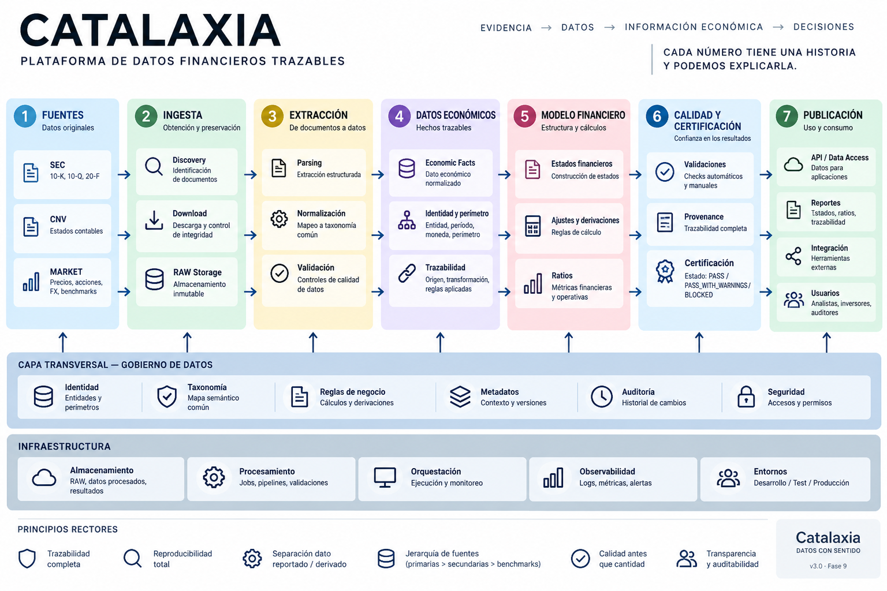
Este manual no documenta cómo debería funcionar el sistema.
Documenta cómo funciona el código que hay hoy. Donde el
software no alcanza para operar de forma determinística, dice
SOFTWARE GAP y no inventa una solución.
El repositorio principal llega a la migración 033.
El worktree catalaxia-cnvmig (rama
feat/cnv-canonical) tiene tres más y, con ellas, cinco
scripts que el repo principal no tiene:
| artefacto | repo principal | worktree |
|---|---|---|
s00_smoke … s04_normalize,
ratio_engine, ratio_defs,
c3_cnv_fetch |
sí | sí |
job5_v2_extract_eeff (extracción CNV legacy) |
sí | sí |
c4_cnv_adapter, c4_cnv_semantica |
no | sí |
d1_metr5y_market, d2_metr5y_model,
d3_metr5y_provenance |
no | sí |
h1_tikr_metr_homologacion |
no | sí |
migraciones 034/035/036 (entity_id CNV,
measurement_date, econ_key) |
no | sí |
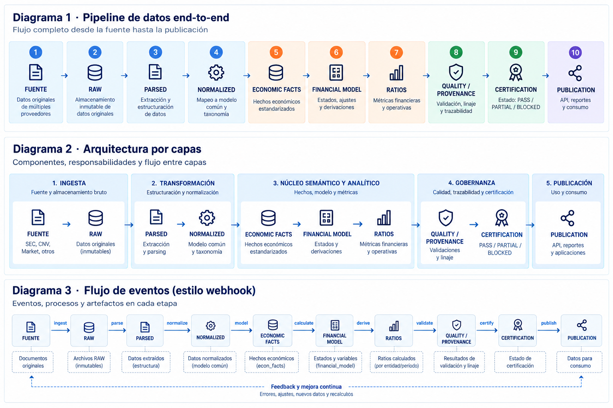
Consecuencia: 4 de los 17 capítulos obligatorios no son ejecutables desde el repo principal — Economic Facts, Financial Model, el tramo canónico de CNV y la homologación TIKR. No es una opinión sobre prioridades: es que los archivos no están ahí. La decisión de cómo documentarlo es D-1, y ninguno de estos manuales la resuelve: la marca y sigue.
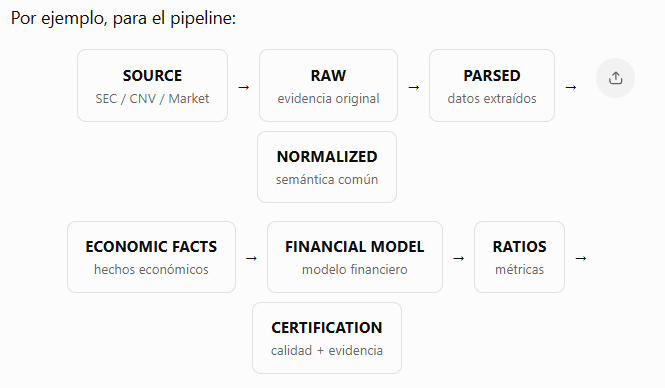
| STAGE_ID | script |
|---|---|
S00_bootstrap |
scripts/engine/s00_smoke.py |
S01_identity |
scripts/engine/s01_identity.py |
S02_fetch |
scripts/engine/s02_fetch_ypf.py |
S03_parse |
scripts/engine/s03_parse_ypf.py |
S04_normalize |
scripts/engine/s04_normalize.py |
| después | scripts/engine/ratio_engine.py |
| camino | script | estado real |
|---|---|---|
| A · engine | scripts/engine/c3_cnv_fetch.py |
instrumentado, con gates y ledger — pero solo baja
VISOR y EMPRESA_PAGE. No descarga
estados financieros (L-7, SG-01) |
| B · legacy | scripts/tickets/cnv/jobs/job5_v2_extract_eeff.py |
el que produjo todos los datos CNV que existen. Sin
ledger, sin SHA, descarta en silencio (CNV-EX-001,
L-6). Escribe en data/screener.db |
| C · canónico | scripts/engine/c4_cnv_adapter.py |
en el worktree, sin mergear (D-1) |
scripts/engine/ tiene 60 archivos; el repo entero,
cientos. La mayoría son auditorías puntuales, bancos de prueba de
defectos concretos (f0NN_*, audit_f0NN_*,
mut_*) y adversarios que no son parte del
E2E (regla N-2). Regla: si el script no aparece en las
tablas de arriba ni en
docs/manual/MANUAL_COMMAND_CATALOG.md, no se corre como
parte de un pipeline.
Scripts peligrosos por nombre — no ejecutar nunca sin leer el archivo:
scripts/engine/mut_f054_f055.py — hace
DELETE FROM parsed.factsscripts/engine/reparse_universo.py — reprocesa todo el
universoscripts/pipeline/fix_*.py — parches históricos de una
sola vezHay dos bases PostgreSQL en esta máquina y se parecen.
| puerto | contenedor | base | qué es |
|---|---|---|---|
| 5432 | catalaxia-db |
catalaxia |
PRODUCCIÓN. NUNCA escribir. |
| 5433 | catalaxia-engine-dev |
catalaxia, cnvmig, … |
desarrollo / fixtures |
El código tiene un guard real, EXT-010,
en engine/config.py: si ENGINE_DB_PORT=5432 y
no está ENGINE_ALLOW_PROD=1, load_settings()
lanza RuntimeError y el proceso muere antes de
conectar.
Verificación obligatoria antes de cada E2E:
python -c "from engine.config import load_settings; s=load_settings(); print(s.describe())"Salida esperada:
catalaxia_engine@127.0.0.1:5433/catalaxia mode=FAST prod=False.
Si prod=True o el puerto no es 5433:
ABORTAR (RECOVERY_PROCEDURES.md, caso 20).
Además, data/screener.db es un artefacto que varios
scripts abren. Se anota su huella antes y se compara al terminar
(stat -c '%y %s' data/screener.db).
NOT_IMPLEMENTED · DECISION_REQUIRED ·
KNOWN_LIMITATION. Y el estado común de diagnóstico de los
pilotos: PASS / PASS_WITH_WARNINGS /
BLOCKED / NOT_READY.engine/states.py):
PLANNED READY RUNNING VALIDATING FAILED FIXING RERUNNING PASSED CHECKPOINTED CERTIFIED.
No existen QUARANTINED, SKIPPED ni
RECOVERED (L-2). Gates:
PASS WARNING BLOCK.SOFTWARE GAP = el software no tiene el
mecanismo; no hay workaround porque no hay mecanismo que documentar.
RUNBOOK GAP = el mecanismo existe pero no
está documentado de forma usable por un operador nuevo.docs/runbooks/ no se reescribe (regla
N-6): cada parte cita su archivo fuente exacto. Los apéndices son de
consulta, no de lectura lineal.run_id, etapa y snapshot.| Parte | capítulos del alcance | rótulo | fuente principal |
|---|---|---|---|
| I · Cómo usar este manual | Cap. 0 (prefacio) | — | 00_START_HERE.md |
| II · Preparación del entorno | Cap. 1 | KNOWN_LIMITATION + bloqueado por C-1 |
01_COMMON_OPERATIONS.md |
| III · Piloto YPF | Caps. 2–5 (SEC E2E) | ejecutable | 02_SEC_EDGAR_E2E_RUNBOOK.md |
| IV · Parser (S03) | Cap. 4 | ejecutable | ídem (S03) |
| V · Normalización (S04) | Cap. 5 | ejecutable | ídem (S04) |
| VI · Economic Facts + Financial Model | Caps. 6–7 | NOT_IMPLEMENTED + D-1 |
06_PROVENANCE.md §4; worktree |
| VII · Ratio Engine | Cap. 8 | ejecutable | 05_RATIO_REFERENCE.md |
| VIII · Market | Cap. 9 | KNOWN_LIMITATION (L-5) |
04_MARKET_DATA_E2E.md |
| IX · CNV | Cap. 10 | PARCIAL + D-1 (tramo C) |
03_CNV_E2E_RUNBOOK.md |
| X · Provenance | Cap. 11 | ejecutable | 06_PROVENANCE.md |
| XI · Idempotencia | Cap. 14 | ejecutable (SEC); C-5 (CNV) | GOLDEN_RUNS.md §1 |
| XII · Validación | Cap. 12 | ejecutable | 01_COMMON_OPERATIONS.md §5 |
| XIII · Certificación | Cap. 16 (+13, gate agregado L-4) | ejecutable (con matices) | 07_CERTIFICATION.md |
| XIV · Homologación TIKR | Cap. 17 | NOT_IMPLEMENTED + D-4 |
METR_TIKR_2025_REPORT.md |
| XV · Troubleshooting | Cap. 15 | PARCIAL: catálogo sí, árbol por escribir |
RECOVERY_PROCEDURES.md,
FALLBACK_MATRIX.md, ERROR_CATALOG.md |
| XVI · Golden Run | apéndice Golden Runs | ejecutable | GOLDEN_RUNS.md,
METROGAS_GOLDEN_RUN_REPORT.md |
| XVII · Estado real | síntesis | medición | las Partes II–XVI |
| XVIII · Qué falta | cierre | decisiones + gaps | RUNBOOK_READINESS_REPORT.md,
MANUAL_SCOPE.md |
| XIX · Anexo B | diagramas de referencia | material visual oficial | docs/diagramas/ |
| XX · Anexo C | plantillas de diagramas (Mermaid) | material visual editable | docs/diagramas/plantillas/ |
| XXI · Anexo D | biblioteca oficial de diagramas (v2.0) | material visual oficial | docs/diagramas/ (capturas) |
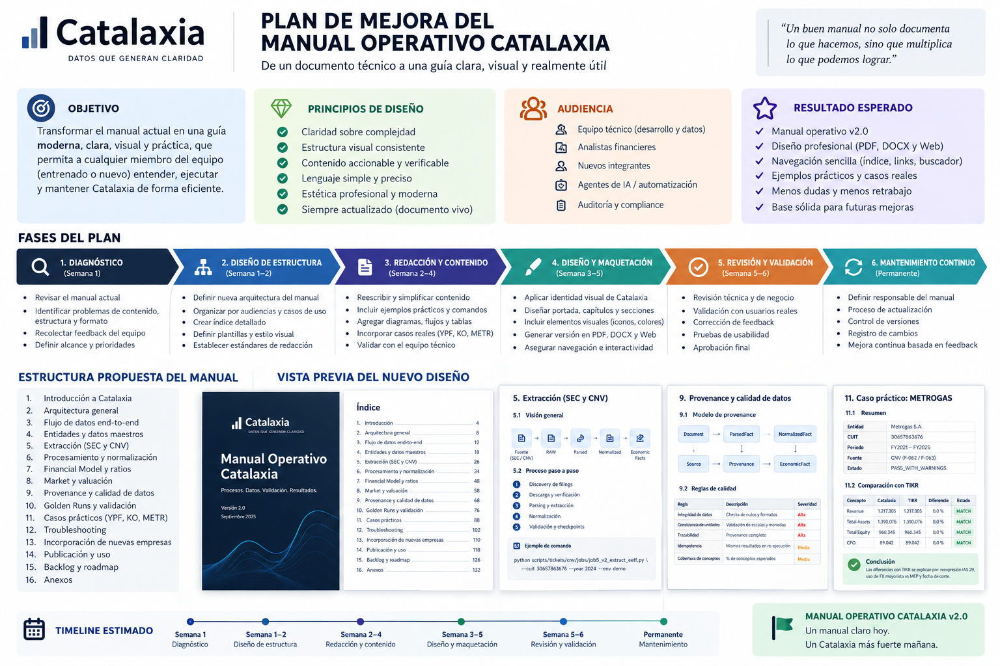
Lectura obligatoria previa, sin verificaciones
ejecutables. Quien arranca por un capítulo sin saber cuál de
los tres caminos CNV es legacy, o sin ver prod=False, está
en condiciones de hacer dos cosas a la vez: malentender los datos y
escribir en producción. El manual asume que esta parte se leyó dos
veces: una al empezar y otra antes de tocar algún comando después de un
tiempo.
Ningún comando de esta parte es ejecutable por sí mismo; todos se desarrollan en las Partes II y siguientes. Si un capítulo parece contradecir esta parte, esta parte está más vieja.
Doce pasos. Se ejecutan en orden. Si un paso no da el resultado esperado, no sigas: el siguiente asume que el anterior salió bien.
Todos los comandos se ejecutan desde la raíz del repositorio.
Cada comando de este capítulo fue ejecutado y su salida verificada.
Donde el repositorio no permite reproducir un paso
desde cero, dice BLOCKER — NO REPRODUCIBLE ACTUALMENTE y
explica exactamente qué falta. No hay comandos inventados: si no está
acá, no existe.
Lo que vas a encontrar antes de terminar. Dos pasos —el 4 y el 5— están bloqueados. Se puede operar el sistema igual, porque el entorno ya está montado en esta máquina; lo que no se puede hoy es levantarlo de cero en una máquina limpia siguiendo sólo el repositorio. Está dicho en el lugar donde te lo vas a encontrar, no al final.
OBJETIVO Saber qué tiene que estar instalado antes de tocar el repositorio.
PREREQUISITOS Ninguno.
COMANDO
git --version
python --version
docker --version
docker compose versionQUÉ HACE Comprueba que las cuatro herramientas
existan y estén en el PATH.
RESULTADO ESPERADO Las cuatro responden con una versión. Versiones verificadas en el entorno de referencia:
| herramienta | mínimo | verificado |
|---|---|---|
| Git | cualquiera con clone |
— |
| Python | 3.11 | 3.11.9 |
| Docker | con docker exec y docker inspect |
29.6.1 |
| Docker Compose | v2+ | v5.3.0 |
No hace falta cliente psql local: todo el acceso a
PostgreSQL va por docker exec.
VERIFICACIÓN
python -c "import sys; assert sys.version_info >= (3, 11), sys.version; print('python OK', sys.version.split()[0])"Imprime python OK 3.11.x o superior.
SI FALLA - python: command not found o
versión < 3.11 → instalá Python 3.11+ y volvé a abrir la terminal. En
Windows, verificá que el instalador haya marcado Add Python to
PATH. - docker: command not found → instalá Docker
Desktop y arrancalo. - docker compose version falla pero
docker-compose --version funciona → tenés Compose v1. Los
comandos de este manual usan la forma docker compose (con
espacio).
OBJETIVO Tener el código en la máquina.
PREREQUISITOS Paso 1.
COMANDO
git clone https://github.com/fmonfasani/catalaxia_finance.git
cd catalaxia_financeQUÉ HACE Clona el repositorio y entra en él. Todos los comandos de este manual salen de ese directorio.
RESULTADO ESPERADO El directorio existe y contiene
engine/, scripts/, migrations/,
docs/.
VERIFICACIÓN
git remote -v
ls engine/config.py migrations/engine/ scripts/engine/s00_smoke.pyEl remoto es
https://github.com/fmonfasani/catalaxia_finance.git y los
tres paths existen.
SI FALLA - Permission denied o pide
credenciales → el repositorio es privado; pedí acceso o usá un token. -
fatal: destination path already exists → ya lo tenés
clonado; entrá y hacé git pull.
DECISION_REQUIRED— hay una segunda rama que este manual no cubre en esta parte. El adaptador canónico de CNV,econ_key,measurement_date, el Financial Model y la homologación TIKR viven en un worktree aparte (catalaxia-cnvmig, ramafeat/cnv-canonical) que no está mergeado. Con el clone de este paso tenés el pipeline SEC completo y el CNV legacy; no tenés esos cinco. VerMANUAL_SCOPE.md§0 y la decisión D-1.
OBJETIVO Aislar las dependencias del proyecto de las del sistema.
PREREQUISITOS Pasos 1 y 2.
COMANDO
python -m venv .venv
# Linux / macOS / Git Bash:
source .venv/bin/activate
# Windows PowerShell:
.venv\Scripts\Activate.ps1QUÉ HACE Crea un entorno virtual en
.venv/ y lo activa.
RESULTADO ESPERADO El prompt muestra
(.venv) y python apunta al intérprete del
entorno.
VERIFICACIÓN
python -c "import sys; print(sys.prefix)"La ruta termina en .venv.
SI FALLA - En PowerShell, Activate.ps1
bloqueado por política → ejecutá
Set-ExecutionPolicy -Scope Process -ExecutionPolicy Bypass
en esa terminal. - No module named venv → en Debian/Ubuntu
instalá python3-venv.
KNOWN_LIMITATION —
.gitignore ignora .env y
__pycache__/ pero no menciona
.venv/ (verificado). Si creás el entorno virtual
dentro del repo, agregalo a .gitignore o quedará como
archivos sin trackear. Tampoco hay Makefile ni script que
automatice este paso: es manual.
OBJETIVO Instalar las librerías que el pipeline necesita para correr.
PREREQUISITOS Paso 3, con el entorno activado.
COMANDO
BLOCKER — NO REPRODUCIBLE ACTUALMENTENo hay un comando canónico, porque el repositorio no declara las dependencias del engine.
requirements.txt tiene exactamente tres líneas, y son
del servicio API, no del pipeline:
fastapi==0.104.1
uvicorn[standard]==0.24.0
psycopg2-binary==2.9.9El engine importa además siete paquetes que no están declarados en ningún archivo del repositorio. Verificado en el entorno de referencia:
| paquete | para qué | versión verificada |
|---|---|---|
sqlalchemy |
toda la capa de base de datos | 2.0.48 |
psycopg2 |
driver PostgreSQL (sí está, vía psycopg2-binary) |
2.9.11 |
lxml |
parser XBRL/HTML | 6.1.1 |
requests |
descargas SEC y CNV | 2.32.5 |
openpyxl |
lectura y escritura de .xlsx |
3.1.0 |
yfinance |
precios de mercado | 1.3.0 |
pytest |
la suite de tests | 9.1.0 |
Qué falta para desbloquearlo: un
requirements.txt (o un pyproject.toml) que
declare las dependencias del engine con sus versiones. Arreglarlo está
fuera del alcance de este manual.
Qué podés hacer mientras tanto, sabiendo que esta lista sale de una instalación observada y no de una declaración del repositorio:
pip install -r requirements.txt
pip install sqlalchemy lxml requests openpyxl yfinance pytestQUÉ HACE La primera línea instala las tres dependencias del servicio API que sí están declaradas. La segunda agrega, sin fijar versión, los seis paquetes que el engine importa y el repositorio no menciona.
RESULTADO ESPERADO pip termina sin
error y los siete paquetes quedan importables. No hay versiones
garantizadas: si mañana una de esas librerías rompe
compatibilidad, nada en el repositorio lo impide. Ése es el costo real
del BLOCKER.
VERIFICACIÓN
python - <<'EOF'
import importlib.util
faltan = [m for m in ("sqlalchemy", "psycopg2", "lxml", "requests",
"openpyxl", "yfinance", "pytest")
if not importlib.util.find_spec(m)]
print("FALTAN:", faltan) if faltan else print("dependencias OK")
EOFCon todo instalado imprime dependencias OK
(verificado).
SI FALLA - Falta alguno → instalalo con
pip install <paquete>. - psycopg2 falla
al compilar → usá psycopg2-binary, que es lo que declara
requirements.txt.
OBJETIVO Tener las dos instancias de PostgreSQL corriendo.
PREREQUISITOS Paso 1, con Docker arrancado.
COMANDO
docker ps --format "{{.Names}}\t{{.Ports}}"QUÉ HACE Lista los contenedores en ejecución con sus puertos publicados.
RESULTADO ESPERADO Los dos, con estos mapeos exactos:
catalaxia-engine-dev 127.0.0.1:5433->5432/tcp
catalaxia-db 127.0.0.1:5432->5432/tcpLos dos corren postgres:16.
VERIFICACIÓN
docker inspect catalaxia-engine-dev --format '{{.Config.Image}} {{json .HostConfig.PortBindings}}'
docker inspect catalaxia-db --format '{{.Config.Image}} {{json .HostConfig.PortBindings}}'SI FALLA
Falta catalaxia-db:
docker compose up -d dbdocker-compose.yml sí declara ese
contenedor.
Falta catalaxia-engine-dev:
BLOCKER — NO REPRODUCIBLE ACTUALMENTEdocker-compose.yml no declara
catalaxia-engine-dev. Declara cuatro contenedores
—catalaxia-db, catalaxia-pipeline,
catalaxia-api y catalaxia-nginx— y ninguno es
la base de desarrollo del puerto 5433, que es contra la que
corren todos los comandos de este manual.
Lo que se sabe del contenedor que hoy está corriendo, obtenido con
docker inspect:
| propiedad | valor observado |
|---|---|
| imagen | postgres:16 (server 16.14) |
| puerto | 127.0.0.1:5433 → 5432/tcp |
POSTGRES_DB |
catalaxia |
POSTGRES_USER |
catalaxia |
POSTGRES_PASSWORD |
el mismo valor que POSTGRES_PASSWORD en
.env |
| volumen | anónimo (identificador generado, sin nombre) |
| política de reinicio | no |
El volumen anónimo y la ausencia en el compose indican que se creó a
mano con docker run. El comando exacto que se usó
no está registrado en el repositorio, así que no lo transcribo:
sería inventarlo.
Qué falta para desbloquearlo: agregar el servicio al
docker-compose.yml, con volumen nombrado. Fuera del alcance
de este manual.
Consecuencia si sos un operador nuevo: podés operar sobre un entorno ya montado, pero no podés crearlo desde cero siguiendo el repositorio.
OBJETIVO Entender con qué identidad se conecta el pipeline y por qué no es superusuario.
PREREQUISITOS Paso 5.
COMANDO
docker exec catalaxia-engine-dev psql -U catalaxia -d catalaxia -tAc \
"SELECT rolname, rolsuper FROM pg_roles \
WHERE rolname IN ('catalaxia','catalaxia_engine','catalaxia_market_ro') ORDER BY 1"QUÉ HACE Lista los tres roles del engine y si son superusuario.
RESULTADO ESPERADO
catalaxia|t
catalaxia_engine|f
catalaxia_market_ro|fLos tres existen y sólo catalaxia es
superusuario. La separación la crea la migración
011_rol_engine_sin_superuser.sql y no es cosmética:
| rol | quién lo usa | por qué |
|---|---|---|
catalaxia |
sólo migraciones y arnés de tests | necesita DDL |
catalaxia_engine |
la aplicación | NOSUPERUSER, sin DELETE, sin
TRUNCATE |
catalaxia_market_ro |
lectura de market_* |
sólo lectura |
El motivo, tal como lo declara la migración: las garantías de
inmutabilidad y de no-borrado son triggers, y un
superusuario los desactiva con
SET session_replication_role = replica. Si el engine se
conectara como superusuario, todo lo certificado sería revocable por
accidente.
VERIFICACIÓN
python -c "from engine.config import load_settings; print(load_settings().db_user)"Imprime catalaxia_engine. Si imprime
catalaxia, alguien puso ENGINE_DB_USER y el
pipeline está corriendo con privilegios que no le corresponden.
SI FALLA
El rol catalaxia_engine no existe: aplicá las
migraciones (Paso 12 lo cubre) — la 011 lo crea.
password authentication failed for user "catalaxia_engine":
KNOWN_LIMITATION — la migración 011
crea el rol pero no le asigna contraseña; lo dice
explícitamente: «la password se asigna aparte, fuera del control de
versiones». La convención implícita —no documentada en ningún lado
antes de este manual— es que sea la misma que
POSTGRES_PASSWORD, porque
engine/config.py usa ese valor como default de
ENGINE_DB_PASSWORD. Para asignarla:
docker exec catalaxia-engine-dev psql -U catalaxia -d catalaxia -c \
"ALTER ROLE catalaxia_engine WITH LOGIN PASSWORD '<la misma que POSTGRES_PASSWORD>'"OBJETIVO Saber qué bases hay en el puerto 5433 y cuál usar. Elegir mal la base es el error más caro de este manual, porque los comandos no avisan.
PREREQUISITOS Paso 5.
COMANDO
docker exec catalaxia-engine-dev psql -U catalaxia -d postgres -tAc \
"SELECT datname, pg_size_pretty(pg_database_size(datname)) \
FROM pg_database WHERE datname NOT IN ('template0','template1','postgres') ORDER BY 1"QUÉ HACE Lista las bases del contenedor de desarrollo con su tamaño.
RESULTADO ESPERADO En el entorno de referencia hay
ocho. Contenido verificado contando derived.fact:
| base | tamaño | derived.fact |
qué es |
|---|---|---|---|
catalaxia |
4.467 MB | 133.902 | la base de trabajo del engine. Es el default de
ENGINE_DB_NAME |
cnvmig |
4.623 MB | 136.777 | migración canónica de CNV (worktree) |
metrgolden |
4.623 MB | 136.697 | fixture del Golden Run de METR |
metrsem |
4.624 MB | 138.398 | fixture de semántica CNV |
dbgcopy |
4.272 MB | 88.789 | copia de depuración |
e2e_final |
281 MB | 47.930 | fixture E2E |
metr5y |
17 MB | 4.648 | demo METR 5 ejercicios |
f051_check |
10 MB | 0 | fixture de verificación puntual |
VERIFICACIÓN Antes de cualquier comando, comprobá contra cuál vas a correr:
python -c "from engine.config import load_settings; print(load_settings().describe())"SI FALLA - La base que esperás no está → o el
contenedor es otro, o hay que crearla:
bash docker exec catalaxia-engine-dev psql -U catalaxia -d postgres -c \ "CREATE DATABASE <nombre> OWNER catalaxia"
Una base recién creada no tiene esquema: hay que
aplicarle las migraciones (Paso 12).
KNOWN_LIMITATION — seis de las ocho
bases son fixtures de sprints anteriores y no están documentadas fuera
de esta tabla. Un operador nuevo no tiene forma de saber cuál está viva
salvo preguntando. Ante la duda, usá
catalaxia.
OBJETIVO Fijar cuál es el puerto de trabajo y cuál el intocable.
PREREQUISITOS Paso 5.
COMANDO
docker ps --filter "name=catalaxia" --format "{{.Names}}\t{{.Ports}}"QUÉ HACE Muestra el mapeo de puertos de los dos contenedores.
RESULTADO ESPERADO
| puerto | contenedor | qué es | se escribe |
|---|---|---|---|
| 5433 | catalaxia-engine-dev |
desarrollo, fixtures, todo el trabajo | sí |
| 5432 | catalaxia-db |
PRODUCCIÓN | nunca |
Los dos exponen 5432/tcp dentro del
contenedor; lo que cambia es el puerto del host. Por eso
docker exec ... psql no lleva -p: adentro
siempre es 5432. El puerto del host sólo importa cuando la conexión
viene de Python.
VERIFICACIÓN
python -c "from engine.config import load_settings; s=load_settings(); print(s.db_port, 'prod' if s.is_prod else 'dev')"Tiene que imprimir 5433 dev.
SI FALLA Si imprime 5432 prod, no
llegaste hasta acá: load_settings() levanta
RuntimeError antes (Paso 11).
OBJETIVO Saber qué variables gobiernan el destino y de dónde salen.
PREREQUISITOS Paso 2.
COMANDO
python -c "from engine.config import load_settings; print(load_settings().describe())"QUÉ HACE Resuelve la configuración y la imprime. Es la forma canónica de responder «¿contra qué estoy corriendo?».
RESULTADO ESPERADO
catalaxia_engine@127.0.0.1:5433/catalaxia mode=FAST prod=FalseDe dónde salen los valores.
engine/config.py combina el archivo .env de la
raíz con el entorno del proceso, y el entorno del proceso
gana. Las diez variables, con sus defaults reales:
| variable | default | qué hace |
|---|---|---|
ENGINE_DB_HOST |
127.0.0.1 |
host |
ENGINE_DB_PORT |
5433 |
5432 dispara EXT-010 |
ENGINE_DB_NAME |
catalaxia |
base |
ENGINE_DB_USER |
catalaxia_engine |
usuario de aplicación, no superusuario |
ENGINE_DB_PASSWORD |
el valor de POSTGRES_PASSWORD |
contraseña |
ENGINE_ADMIN_DB_USER |
catalaxia |
usuario para DDL y migraciones |
ENGINE_ADMIN_DB_PASSWORD |
el valor de POSTGRES_PASSWORD |
|
ENGINE_MODE |
FAST |
sólo FAST, FULL, AUDIT; otro
valor ⇒ ValueError |
ENGINE_ALLOW_PROD |
0 |
1 desactiva el guard de producción. No
usar |
ENGINE_STATEMENT_TIMEOUT_MS |
120000 |
timeout de sentencia |
No hace falta exportar la contraseña. Sale de
.env. Ese archivo no está versionado y en
el entorno de referencia contiene dos claves:
POSTGRES_PASSWORD y DOLARITO_AUTH_CLIENT (esta
última sólo para la serie histórica de dólar; la CNV no requiere
autenticación).
Si .env no existe —instalación nueva— crealo en la raíz
con al menos:
POSTGRES_PASSWORD=<la contraseña del contenedor catalaxia-engine-dev>Costumbre recomendada: poner el destino explícito en cada comando, aunque coincida con el default.
ENGINE_DB_NAME=catalaxia ENGINE_DB_PORT=5433 python scripts/engine/s00_smoke.pyVERIFICACIÓN El comando de arriba imprime la línea esperada, sin excepción.
SI FALLA -
password authentication failed → falta .env o
la contraseña no coincide con la del contenedor. El mensaje no
menciona el .env: hay que saberlo. -
ENGINE_MODE invalido: X → los únicos valores son
FAST, FULL, AUDIT. -
RuntimeError: EXT-010 → apuntaste a producción. Paso
11.
OBJETIVO Que quede claro por qué un número decide si el sistema es seguro o no.
PREREQUISITOS Pasos 8 y 9.
COMANDO
docker exec catalaxia-db psql -U catalaxia -d catalaxia -tAc \
"SELECT string_agg(nspname,',' ORDER BY nspname) FROM pg_namespace \
WHERE nspname NOT LIKE 'pg_%' AND nspname<>'information_schema'"
docker exec catalaxia-engine-dev psql -U catalaxia -d catalaxia -tAc \
"SELECT string_agg(nspname,',' ORDER BY nspname) FROM pg_namespace \
WHERE nspname IN ('engine','identity_v1','identity','fetch_raw','parsed','derived')"QUÉ HACE Muestra los esquemas de las dos instancias, lado a lado.
RESULTADO ESPERADO
5432 · catalaxia-db |
5433 · catalaxia-engine-dev |
|
|---|---|---|
| esquemas | public y nada más |
derived,engine,fetch_raw,identity,identity_v1,parsed |
| rol | producción | desarrollo |
| lo escribe | el deploy | vos |
La diferencia operativa: producción no tiene
parsed ni derived. Si algún día los
tuviera, algo escribió donde no debía, y eso es un incidente.
VERIFICACIÓN La primera consulta devuelve
exactamente public.
SI FALLA Si producción devuelve algo más que
public, pará todo. Es un incidente:
docs/runbooks/appendices/RECOVERY_PROCEDURES.md, caso
20.
OBJETIVO Comprobar que el guard existe y funciona, en vez de confiar en que sí.
PREREQUISITOS Paso 9.
COMANDO
ENGINE_DB_PORT=5432 python -c "
from engine.config import load_settings
try:
print('NO BLOQUEO:', load_settings().describe())
except RuntimeError as e:
print('BLOQUEADO:', e)
"QUÉ HACE Fuerza a propósito el puerto de producción y comprueba que el sistema se niegue. Es una prueba segura: no abre ninguna conexión — falla al construir la configuración, antes de tocar la red.
RESULTADO ESPERADO
BLOQUEADO: EXT-010: el engine apunta al puerto de produccion (5432). Usar
ENGINE_DB_PORT=5433 (dev) o ENGINE_ALLOW_PROD=1 explicito para modo AUDIT.Cómo funciona: Settings.is_prod es, literalmente,
self.db_port == "5432". Si es verdadero y
ENGINE_ALLOW_PROD no vale 1,
load_settings() levanta RuntimeError.
Ningún script llega a conectarse.
VERIFICACIÓN Que el mensaje empiece con
BLOQUEADO: EXT-010.
SI FALLA
Imprime NO BLOQUEO: alguien dejó
ENGINE_ALLOW_PROD=1 en el entorno o en .env.
Quitala:
unset ENGINE_ALLOW_PROD
grep -n "ENGINE_ALLOW_PROD" .envNo sigas hasta que el guard vuelva a bloquear.
KNOWN_LIMITATION — el guard protege el
engine de Python. No protege
docker exec ... psql contra catalaxia-db, que
escribe en producción sin preguntar nada. Contra eso no hay barrera
técnica: sólo la regla de no hacerlo.
OBJETIVO Cerrar la Parte II con una verificación que se pueda repetir siempre.
PREREQUISITOS Pasos 1 a 11.
COMANDO — los cinco, en orden:
# 12.1 · contenedores
docker ps --format "{{.Names}}\t{{.Ports}}"
# 12.2 · destino del engine
python -c "from engine.config import load_settings; print(load_settings().describe())"
# 12.3 · esquemas de la base de trabajo
docker exec catalaxia-engine-dev psql -U catalaxia -d catalaxia -tAc \
"SELECT string_agg(nspname,',' ORDER BY nspname) FROM pg_namespace \
WHERE nspname IN ('engine','identity_v1','identity','fetch_raw','parsed','derived')"
# 12.4 · producción intacta
docker exec catalaxia-db psql -U catalaxia -d catalaxia -tAc \
"SELECT string_agg(nspname,',') FROM pg_namespace \
WHERE nspname NOT LIKE 'pg_%' AND nspname<>'information_schema'"
# 12.5 · huella de screener.db
stat -c '%y %s' data/screener.dbQUÉ HACE Comprueba, en este orden: que los contenedores estén; contra qué base vas a correr; que esa base tenga esquema; que producción siga limpia; y deja anotada la huella del SQLite legacy para poder comparar al final.
RESULTADO ESPERADO
| # | esperado |
|---|---|
| 12.1 | catalaxia-engine-dev 127.0.0.1:5433->5432/tcp y
catalaxia-db 127.0.0.1:5432->5432/tcp |
| 12.2 | catalaxia_engine@127.0.0.1:5433/catalaxia mode=FAST prod=False |
| 12.3 | derived,engine,fetch_raw,identity,identity_v1,parsed |
| 12.4 | public y nada más |
| 12.5 | una fecha y un tamaño — anotalos |
GATE PASS si los cinco dan lo esperado.
Cualquier desvío ⇒ no avances a la Parte III.
VERIFICACIÓN Los cinco comandos son de sólo lectura y se pueden repetir cuantas veces quieras.
SI FALLA | # | síntoma | qué hacer | |—|—|—| | 12.1
| falta catalaxia-db | docker compose up -d db
| | 12.1 | falta catalaxia-engine-dev | Paso 5,
BLOCKER | | 12.2 |
password authentication failed | Paso 9: falta
.env | | 12.2 | prod=True | Paso 11: sacá
ENGINE_ALLOW_PROD | | 12.3 | faltan esquemas | la base no
tiene migraciones; ver abajo | | 12.4 | algo más que public
| incidente, Paso 10 | | 12.5 | el archivo no existe |
no bloquea la Parte II; sí bloquea el pipeline CNV legacy |
ENGINE_DB_NAME=catalaxia ENGINE_DB_PORT=5433 python -c "
from engine.config import load_settings
from engine.db import get_admin_engine, apply_migrations
s = load_settings(); print(s.describe())
print('aplicadas:', len(apply_migrations(get_admin_engine(s))))
"Sobre una base recién creada aplica 32 migraciones
(verificado). Sobre una que ya las tiene, imprime
aplicadas: 0 — la operación es idempotente. Usa el usuario
administrador (catalaxia), no el de aplicación.
s00_smoke.pyEl manual de referencia trata S00_bootstrap como la
primera etapa del pipeline SEC, y esa es la Parte III. Conviene saber
esto antes de llegar:
s00_smoke.py no se puede volver a correr sobre
la misma base. El script inserta en
engine.checkpoints sin ON CONFLICT, y hay un
índice único sobre
(stage_id, input_hash, code_version, contract_version)
donde input_hash es el SHA-256 de
settings.describe(). Como esa cadena es constante para una
misma base y modo, la segunda corrida siempre choca.
Verificado sobre una base creada para la prueba:
gate = PASS,
rows_expected = 2, rows_parsed = 2,
rows_rejected = 0, exit 0;psycopg2.errors.UniqueViolation: duplicate key value violates unique constraint "ux_checkpoints_reuse",
exit 1.KNOWN_LIMITATION. Por eso la comprobación de entorno de
este capítulo usa los cinco comandos de sólo lectura del Paso 12 y
no s00_smoke.py: hacía falta una
verificación repetible.
| paso | estado |
|---|---|
| 1 · Requisitos | ✅ reproducible |
| 2 · Git | ✅ reproducible |
| 3 · Python | ✅ reproducible |
| 4 · Dependencias | 🔴 BLOCKER — el repositorio no las
declara |
| 5 · Docker | 🔴 BLOCKER — el compose no declara
catalaxia-engine-dev |
| 6 · PostgreSQL | ⚠️ reproducible, con KNOWN_LIMITATION en la contraseña
del rol |
| 7 · Bases | ⚠️ reproducible, con KNOWN_LIMITATION en 6 de 8
bases |
| 8 · Puertos | ✅ reproducible |
| 9 · Variables | ✅ reproducible |
| 10 · 5432 vs 5433 | ✅ reproducible |
| 11 · Guard de producción | ✅ reproducible y verificado disparando |
| 12 · Comprobación final | ✅ reproducible y repetible |
Diez de doce pasos son reproducibles hoy. Los dos bloqueados son ambos de creación del entorno, no de operación: sobre un entorno ya montado se puede trabajar; sobre una máquina limpia, no todavía.
Los comandos de este capítulo fueron ejecutados y sus salidas
verificadas. Las versiones de paquetes provienen de una instalación
observada, no de una declaración del repositorio — que es exactamente el
BLOCKER del Paso 4. Ninguna operación de este capítulo
escribe en producción; la única que escribe en algún lado es la
aplicación de migraciones, y sólo sobre la base de desarrollo que
elijas.
Este capítulo camina el primer piloto del sistema (aprendizaje
completo SEC) con cifras reales: identidad, preparación, y descarga de
RAW para YPF S.A., CIK 0000904851,
formularios 20-F / 20-F/A. El parser (S03) y la
normalización (S04) tienen su propia Parte (IV y V); ratios y provenance
no entran en este capítulo.
Cada comando de este capítulo fue ejecutado y su salida verificada
contra la base catalaxia (5433 · dev) el
2026-09-04, o está citado de un
engine.stage_runs.report ya persistido de una corrida
certificada anterior con su run_id exacto, para que
cualquiera pueda reconsultarlo. Ningún número de este capítulo
es hipotético — fuente primaria:
docs/manual/ ANNEX_YPF.md.
Dos advertencias antes de empezar, porque marcan todo lo que sigue:
OBJETIVO Verificar que el entorno está correcto y preparar la ejecución (migraciones + guard de producción).
PREREQUISITOS Parte II, Paso 12 con GATE
PASS (los cinco comandos de sólo lectura dan lo
esperado).
COMANDO
ENGINE_DB_NAME=catalaxia ENGINE_DB_PORT=5433 python scripts/engine/s00_smoke.pyQUÉ HACE Aplica las migraciones pendientes sobre la
base indicada y dispara el guard de producción: si
ENGINE_DB_PORT=5432, no llega a conectarse
(EXT-010).
RESULTADO ESPERADO gate = PASS, exit
0. Corrida certificada de referencia:
run_id=a48addfb714841bfb43e537c969ac31d (2026-09-02),
checks 2/2, gate PASS.
VERIFICACIÓN
docker exec catalaxia-engine-dev psql -U catalaxia -d catalaxia -c \
"SELECT stage_id, gate_status, rows_expected, rows_parsed, rows_rejected \
FROM engine.stage_runs WHERE run_id='a48addfb714841bfb43e537c969ac31d'"SI FALLA
psycopg2.errors.UniqueViolation: duplicate key value violates unique constraint "ux_checkpoints_reuse":
KNOWN_LIMITATION — S00 no es
idempotente. En la primera corrida inserta un checkpoint en
engine.checkpoints sin
ON CONFLICT, y hay un índice único sobre
(stage_id, input_hash, code_version, contract_version).
Como input_hash es el SHA-256 de
settings.describe(), con la misma base y el mismo modo
siempre da el mismo valor: la segunda corrida choca contra la primera.
Verificado en vivo el 2026-09-04 — exit 1, corrida
ABORTED. No es una pérdida de datos: es un defecto
de idempotencia (hallazgo H-1). No borres el checkpoint:
registrá el run_id, el error y la etapa, y tratálo como
bug. El runbook actual (02_SEC_EDGAR_E2E_RUNBOOK.md) afirma
lo contrario; la realidad documentada aquí lo corrige.
Otro error: si la base es nueva y no tiene esquema, Paso 12 de la Parte II (“Si falta el esquema: aplicar migraciones”).
OBJETIVO Sembrar y resolver la identidad de YPF en
identity_v1 antes de que cualquier etapa
posterior pueda inventar una entidad.
PREREQUISITOS Paso 1.
COMANDO
ENGINE_DB_NAME=catalaxia ENGINE_DB_PORT=5433 python scripts/engine/s01_identity.pyQUÉ HACE Recorre el seed (entidades,
identificadores, símbolos yahoo), los vínculos BYMA / .BA,
y las resoluciones manuales. Verifica C-S01-001..004, que
incluyen chequear que YPF exista como entidad.
RESULTADO ESPERADO
legal_name = YPF SOCIEDAD ANONIMA,
entity_id = CIK:0000904851, gate = PASS, exit
0. Corrida verificada en vivo el 2026-09-04,
run_id=c87b9bbdcc5044bca8987dfec66a1b48:
[seed] entidades nuevas=11 identificadores nuevos=31 yf_symbols nuevos=20
[links] BYMA nuevos=0 YF .BA nuevos=0 conflictos legacy=4
[manual] resoluciones aplicadas: identifiers nuevos=0 yf nuevos=0 problemas=0
gate = PASS (checks 4/4, rejected 0)La identidad canónica (esquema identity_v1, consulta
directa):
E01M0X99C8F87H9TH9N39H2D1NW | YPF SOCIEDAD ANONIMA | 0000904851 | 30546689979Los identificadores vigentes de YPF: CIK 0000904851
(SEC), ticker YPFD (BYMA), ticker YPF (US),
yf_symbol YPF y YPFD.BA.
VERIFICACIÓN
SELECT e.entity_key, e.preferred_name,
(SELECT id_value FROM identity_v1.identifier i
WHERE i.entity_id=e.entity_id AND i.id_type='CIK'
AND i.status='ACTIVE' AND i.valid_to IS NULL LIMIT 1) AS cik,
(SELECT id_value FROM identity_v1.identifier i
WHERE i.entity_id=e.entity_id AND i.id_type='CUIT'
AND i.status='ACTIVE' AND i.valid_to IS NULL LIMIT 1) AS cuit
FROM identity_v1.entity e WHERE e.preferred_name='YPF SOCIEDAD ANONIMA';Debe devolver una fila con cik=0000904851 y
cuit=30546689979.
SI FALLA
KNOWN_LIMITATION — S01 es
específico de YPF. El check C-S01-004 está clavado
a esta emisora: verifica explícitamente que la entidad
YPF SOCIEDAD ANONIMA exista. Con YPF funciona; con otro
emisor no se comporta igual (lo demostró KO). No es un fallo de
este piloto, pero un operador debe saberlo antes de generalizar
el mismo comando a CIK distintos: el flujo S01 todavía no es
multi-emisor.
KNOWN_LIMITATION — el bloque JSON de
identidad que imprime el script reporta cuit: null para YPF
— aunque el CUIT 30546689979 sí existe en
identity_v1.identifier con estado VERIFIED
(hallazgo H-4). No es un dato faltante: el script reporta contra el
esquema legacy identity.entities y no
contra identity_v1. La consulta de VERIFICACIÓN de arriba
es la forma de mirar la capa canónica.
OBJETIVO Resolver el binding
CIK → entity cuando Identity no lo tenga poblado.
PREREQUISITOS Paso 2 no es suficiente — este paso es bajo demanda.
COMANDO
python backfill_cik.py --aplicarQUÉ HACE Completa el enlace que S01 no produjo. No es parte de la corrida normal de YPF: en este piloto S01 ya deja la identidad resuelta (Paso 2). Fue necesario para el segundo piloto (KO) antes de que S04 pudiera continuar.
RESULTADO ESPERADO No aplica a YPF en estado actual — no hay que correrlo.
SI FALLA / uso correcto: Si una
etapa posterior se queja, por ejemplo, con “CIK sin entidad” en
S04: registrá el incidente y usá este paso. Tratálo como una
dependencia conocida hasta que S01 sea genérica
(DECISION_REQUIRED — misma familia que la decisión D-3):
cada uso de backfill_cik.py documenta que el flujo S01
todavía no es multi-emisor.
OBJETIVO Descubrir los filings de YPF contra el
índice de EDGAR y traer los artefactos a data/raw/ con
registro íntegro (fecha, fuente, SHA256).
PREREQUISITOS Paso 2. (Un CIK sin identidad sembrada no corresponde a RAW.)
COMANDO
ENGINE_DB_NAME=catalaxia ENGINE_DB_PORT=5433 python scripts/engine/s02_fetch_ypf.py --cik 0000904851Antes de copiar:
python scripts/engine/s02_fetch_ypf.py --help. Este script
fue parametrizado (--cik, --forms,
--max-filings); no uses sintaxis recordada sin verificarla
contra --help.
QUÉ HACE Descubre contra submissions +
companyfacts de EDGAR (no contra una lista fija), descarga
los artefactos de cada filing, verifica el SHA256 contra disco, y
registra todo en fetch_raw.download_log y en
data/raw/engine/CIK0000904851/.
RESULTADO ESPERADO rows_failed = 0,
gate = PASS, exit 0. Corrida certificada de
referencia — run_id=33d234463f4341af9ad4931c67a3c561
(2026-08-23):
"gate": {"status": "PASS"},
"coverage": {"parsed": 171, "expected": 171, "rejected": 0},
"integrity": {
"hash_in": "63c720619a9ba899a9ed510b222ecedf563e5fcfc7445d4924fffe5785e1017e",
"hash_out": "07866cae52eaf73bff4e1b5da31e8a108c71b1604baf7b1d3462ed70804b6d29"
}Los 5 checks (C-S02-001..005) en PASS:
conciliación 171/171, SHA256 re-verificado contra disco sin mismatches,
vinculación entidad→cik→fuente→accession sin violaciones, cortesía SEC
dentro del mínimo, y consumo exclusivo de la identidad sembrada por
S01.
VERIFICACIÓN
SELECT request_kind, count(*) AS filas,
count(*) FILTER (WHERE http_status>=400) AS con_error
FROM fetch_raw.download_log WHERE cik='0000904851' GROUP BY 1 ORDER BY 1;En el entorno de referencia: 927 filas, 0 con error HTTP — la cobertura crece entre corridas (el ledger es un registro de eventos, no un estado).
SI FALLA
rows_failed > 0 o algún check en rojo: el
fallback automático de S02 reintenta 3 veces con backoff 2/5/10s,
sólo ante 429/500/502/503/504. Un 4xx que no es 429 no
se reintenta: es un problema a diagnosticar, no una red caída. Revisá
fetch_raw.download_log: la fila con error deja la
evidencia.duplicate key value violates unique constraint "ux_checkpoints_reuse":KNOWN_LIMITATION — S02 no es
idempotente, y además pierde el report de la corrida cuando
falla. Mismo defecto que S00: el INSERT de
checkpoint es incondicional (hallazgo H-2, reproducido en vivo el
2026-09-04 con input_hash=63c720... — el mismo de la
corrida certificada del 23/08). El matiz importante: el trabajo
de fetch sí se persistió antes de llegar al INSERT
que falla — fetch_raw.download_log pasó de 740 a 927 filas
durante esa misma corrida fallida (187 artefactos nuevos, extendiendo la
cobertura a 2002-2013). Los datos quedan bien; el
report y el checkpoint de esa corrida se pierden,
porque el INSERT que falla está en la misma transacción que
el UPDATE del report, y al revertirse se cae el report pero
no el fetch (que ya había hecho commit). No vuelvas a descargar
ni borres RAW para “arreglarlo”: registrá el incidente como bug
de idempotencia.
Regla — no volver a descargar un RAW que ya tiene hash válido. S02 re-descarga y re-verifica; si el artefacto existe con su SHA, no se repite.
| paso | comando | corrida de referencia | gate | estado |
|---|---|---|---|---|
| 1 · S00 | s00_smoke.py |
a48addfb… (2026-09-02) |
PASS 2/2 | ⚠️ 1ª corrida PASS; 2ª corrida falla
(ux_checkpoints_reuse, H-1) |
| 2 · S01 | s01_identity.py |
c87b9bbd… (2026-09-04) |
PASS 4/4 | ✅ reproducible; C-S01-004 fijado a YPF; cuit: null en
el reporte (H-4) |
| 3 · backfill | backfill_cik.py --aplicar |
— | — | 🚨 sólo bajo demanda (KO); documentar cada uso hasta generalizar S01 |
| 4 · S02 | s02_fetch_ypf.py --cik 0000904851 |
33d23446… (2026-08-23) |
PASS 5/5 | ⚠️ 1ª corrida PASS; 2ª corrida falla y pierde el report (H-2) |
GATE de la Parte III: los tres comandos que se
ejecutan (S00, S01, S02) deben dar PASS en su primera
corrida sobre la base de trabajo. Los dos defectos de idempotencia (S00
y S02) no impiden operar, pero impiden declarar
la etapa idempotente y están documentados, no ocultos.
Lo que sigue de este piloto: el parser (S03, Parte
IV — 27/27 filings, 67.084 facts parseados, hashout-v2) y
la normalización (S04, Parte V — 67.084 → 47.930 hechos normalizados sin
pérdida).
DECISION_REQUIRED — esta Parte se
verificó contra la base catalaxia (5433 · dev), que es la
de trabajo. El plan maestro recomienda bases aisladas
(ypfgolden, kogolden, …) para corridas
defensivas; formalizar cuándo usar una u otra es parte del procedimiento
de Golden Run (Parte XVI), no de este capítulo.
Los comandos de este capítulo fueron ejecutados y sus salidas
verificadas (2026-09-04) o citadas de
engine.stage_runs.report persistidos con su
run_id exacto. Ninguna operación de este capítulo escribe
en producción (5432); todo corre contra 5433 · dev. Los dos defectos
reportados no fueron corregidos: se documentan, como pide el
encargo.
Este capítulo cubre la etapa que transforma RAW →
parsed: el parser XBRL de S03, con YPF como
piloto. Aquí los tags XBRL se vuelven hechos estructurales
(parsed.facts, parsed.contexts, …)
sin convertirse todavía en conceptos económicos — esa
conversión es la Parte V (S04).
Ningún número de este capítulo es hipotético. Lo
verificado en vivo el 2026-09-04 o citado de
engine.stage_runs.report persistido con su
run_id. Fuente primaria:
docs/manual/ANNEX_YPF.md y
outputs/docs/fase_s04/KO_GOLDEN_RUN_REPORT.md.
Lo que S03 debe preservar, operativamente (toda esta
lista sale de la especificación del parser, no de una observación):
namespaces, conceptos, valores, unidades, decimals, escala, signo,
contextos, entidad, períodos,
instant/duration, dimensiones, ejes, miembros,
segmentos y relaciones.
Regla para leer este capítulo — S03 es la
excepción feliz del bloque de idempotencia: es la única etapa
de este tramo cuyo INSERT de checkpoint está bien escrito.
El Paso 2 explica por qué, y sirve como la referencia de cómo deberían
estar escritos S00 y S02 (Parte III, hallazgos H-1/H-2).
OBJETIVO Parsear el RAW de YPF descargado en la
Parte III y persistir los hechos inventariados en
parsed.
PREREQUISITOS Parte III, Paso 4 (S02) con gate
PASS — S03 lee el RAW que S02 dejó listo.
COMANDO
ENGINE_DB_NAME=catalaxia ENGINE_DB_PORT=5433 python scripts/engine/s03_parse_ypf.py --cik 0000904851Antes de copiar:
python scripts/engine/s03_parse_ypf.py --help. La sintaxis
exacta sale del --help, no de la memoria. Los argumentos
conocidos hoy: --cik y --min-xbrl.
QUÉ HACE Recorre los 27 filings de YPF (2002–2026),
parsea los paquetes XBRL de los últimos 9 (2017 en adelante) y declara
la era pre-XBRL de los anteriores (C-S03-005), persiste
facts/contextos/unidades/conceptos, y cierra con un checkpoint real bajo
el esquema hashout-v2.
RESULTADO ESPERADO
filings_rejected = 0, gate = PASS, exit
0. Corrida certificada de referencia —
run_id=d86bb4fe0cca4dd8a843a6069dc00c5b (2026-08-31,
22:31:25Z → 22:37:11Z, unos 5m46s):
"gate": {"status": "PASS"},
"input": {"rows": 187, "checkpoint_id": "S02:711c2d1a478845df98551663632728fb"},
"coverage": {"parsed": 27, "expected": 27, "rejected": 0,
"by_reason": {"BAD_INPUT": 0, "REJECTED_FILING": 0}},
"integrity": {
"hash_in": "a5f05ee9e4e58a8882a9ee838077973243b9513fc4759f47b5ffe7d851855f04",
"hash_out": "a05cb59cb412d49022238128bb6d0f10de8695b38e059f50dcdd777915ed70c4",
"hash_spec": "hashout-v2"
}Los 9 checks (C-S03-001..009) en PASS. Los
que importan leer bien:
| check | qué certificó esa corrida |
|---|---|
C-S03-003 |
0 violaciones de provenance sobre el conjunto parseado |
C-S03-005 |
era pre-XBRL declarada para los filings sin XBRL |
C-S03-006 |
0 context_refs colgantes: todo
contexto referenciado existe |
VERIFICACIÓN
docker exec catalaxia-engine-dev psql -U catalaxia -d catalaxia -tAc \
"SELECT count(*) FROM parsed.facts WHERE cik='0000904851'"
docker exec catalaxia-engine-dev psql -U catalaxia -d catalaxia -tAc \
"SELECT count(*) FROM parsed.contexts WHERE run_id IN
(SELECT DISTINCT run_id FROM parsed.facts WHERE cik='0000904851')"En el entorno de referencia: 67.084 facts y
23.478 contextos, ambos de la corrida
d86bb4fe… — coinciden exactamente con la corrida
certificada.
SI FALLA - filings_rejected > 0 y el
by_reason muestra
REJECTED_FILING/BAD_INPUT → hay un filing que
S03 no pudo parsear; no se inventa ni se omite: el rechazo queda
declarado (rejected_count), no silencioso. - timeout o
lentitud → S03 puede tardar ~6 minutos en el caso completo; es esperado.
No relances en paralelo mientras otro S03 del mismo CIK
siga corriendo (ver Paso 2).
OBJETIVO Saber por qué S03 es la referencia de idempotencia que S00/S02 no siguen.
QUÉ DICE EL CÓDIGO
(scripts/engine/s03_parse_ypf.py, líneas 793-797):
INSERT INTO engine.checkpoints (...) VALUES (...)
ON CONFLICT ON CONSTRAINT ux_checkpoints_reuse
DO UPDATE SET checkpoint_id=EXCLUDED.checkpoint_id, run_id=EXCLUDED.run_id, ...Con un comentario explícito en el código: “re-corrida con mismo input+code+ contract es un ‘checkpoint hit’ por diseño”. A diferencia de S00 y S02 (INSERT incondicional, hallazgos H-1/H-2), aquí una segunda corrida con la misma configuración no choca: reusa el checkpoint.
EVIDENCIA EXTERNA (KO) — el Golden Run del segundo
piloto (base aislada kogolden) demostró
hash_out idéntico en corridas secuenciales. KO es la prueba
de que el patrón generaliza fuera de YPF.
KNOWN_LIMITATION — no
revertificado en vivo el 2026-09-04. Durante la verificación de
ANNEX_YPF.md, dos invocaciones de S03 quedaron corriendo en
paralelo por un error operativo de la sesión (un primer intento que
alcanzó su timeout y un relanzamiento que no confirmó que el primero
hubiera muerto); se las terminó con kill -TERM. La
propiedad de idempotencia de S03 queda respaldada por lectura de código
en esa verificación, no por una segunda corrida en vivo. El
dato certificado no se tocó (derived.fact siguió en 47.930
filas vigentes después de terminar los procesos), pero las dos
terminaciones dejaron corridas huérfanas en
engine.runs:
d3f94f7931be4f14b237280b7d820d91
4213c4b981ae4e76839aeddc22dec45een estado RUNNING. No se intervino (no hay procedimiento
de limpieza documentado — L-3).
SI FALLA (esto aplica al operador, no a S03): 1.
Nunca corras dos S03 simultáneos sobre el mismo CIK. La
demostración correcta de idempotencia es secuencial: correr → esperar
finalización → correr → esperar → correr. 2. Antes de lanzar una
corrida, comprobá que no haya RUNNING huérfanas:
bash docker exec catalaxia-engine-dev psql -U catalaxia -d catalaxia -c \ "SELECT run_id, stage_id, status FROM engine.runs WHERE status='RUNNING'"
Si hay, es el escenario que s00_smoke.py
(corridas_huerfanas) y s04_normalize.py (guard
F-009) están diseñados para detectar. No lances encima:
registrá el incidente.
is_custom · KNOWN_LIMITATION (severidad
P0)OBJETIVO Que el operador reconozca el defecto de taxonomía más importante del parser — porque no se ve en YPF y sí va a verlo al correr cualquier emisor US-GAAP.
QUÉ ES En
scripts/engine/s03_parse_ypf.py:483 el parser decide si un
concepto es is_custom con:
tax = qn.split("#")[0].rsplit("/", 1)[-1]Eso toma el último segmento de la URI. Funciona para IFRS por casualidad (las URIs IFRS terminan con el nombre de la taxonomía) y rompe con las taxonomías de FASB/SEC, que terminan con la versión:
| URI | resultado correcto | línea 483 | is_custom |
|---|---|---|---|
…/ifrs-full |
ifrs-full |
ifrs-full |
False ✓ |
http://fasb.org/us-gaap/2024 |
us-gaap |
2024 |
True ✗ |
http://fasb.org/srt/2019-01-31 |
srt |
2019-01-31 |
True ✗ |
http://xbrl.sec.gov/dei/2025 |
dei |
2025 |
True ✗ |
Evidencia medida: en KO, los 45.113 hechos
tienen is_custom = True; en YPF, solo ~44%. En
filosofía de proyecto: un is_custom falso marca como
“extensión propia” a us-gaap, srt y dei, que son taxonomías
estándar.
Por qué no se ve en YPF: la estructura de namespace IFRS hace que la lógica funcione accidentalmente. Es el mismo patrón de “bug que un solo piloto no puede revelar”.
ACCIÓN OBLIGATORIA (documentada, no hecha todavía —
esta Parte no corrige código): el parser de S03 debe usar la función
común _taxonomy_of() de engine/xbrlparse.py
como única fuente de determinación de taxonomía, en
lugar de duplicar la lógica con rsplit. Después, regresión
YPF + KO. Clasificación de prioridad: P0.
DÓNDE ESTÁ DOCUMENTADO —
outputs/docs/fase_s04/KO_GOLDEN_RUN_REPORT.md §5, hallazgo
W-2 (commiteado en 3e85c10,
docs(ko)).
SI FALLA (“este emisor aparece casi todo como
custom”): Probablemente es este bug, no un dato raro. No
corrijas la base a mano: se corrige la lógica de S03 y se
regenera. (Ver MANUAL_SCOPE.md, regla: los datos derivados
se regeneran, no se parchan.)
| paso | qué | corrida de referencia | estado |
|---|---|---|---|
| 1 · S03 | RAW → parsed |
d86bb4fe… (2026-08-31) |
✅ PASS 9/9, 27/27 filings, 67.084 facts, 23.478 contextos |
| 2 · idempotencia S03 | ON CONFLICT…DO UPDATE |
kogolden (KO) |
✅ patrón correcto; ⚠️ no revertificado en vivo (2 huérfanas
RUNNING) |
3 · is_custom |
lectura de taxonomía | KO | 🔴 KNOWN_LIMITATION P0 —
s03_parse_ypf.py:483 duplica mal
_taxonomy_of(); sin corregir |
GATE de la Parte IV: S03 da PASS con
27/27 y filings_rejected = 0, y el hash_out de
la corrida es verificable contra engine.stage_runs. El bug
is_custom no invalida el gate de YPF (el
registry resuelve por tag, no por is_custom),
pero impide certificar el atributo
is_custom de cualquier emisor US-GAAP hasta corregirse.
Lo que sigue: la normalización (Parte V, S04 — lleva
estos 67.084 facts a 47.930 hechos en derived.fact, con el
desempate y el digest).
Los comandos de este capítulo fueron ejecutados y sus salidas
verificadas (2026-09-04) o citadas de
engine.stage_runs.report persistido. Ninguna operación
escribe en producción (5432). Los hallazgos H-1/H-2/H-3 (Parte III) y
W-2/P0 (este capítulo) se documentan, no se corrigen.
Este capítulo cubre la etapa que transforma
parsed → derived: S04 toma
los hechos estructurales de la Parte IV y los convierte en hechos
normalizados en derived.fact, resolviendo unidad,
desempate y pertenencia. Con YPF como piloto y KO como segunda
fuente de evidencia.
Ningún número de este capítulo es hipotético. Lo
verificado en vivo el 2026-09-04 o citado de
engine.stage_runs.report persistido con su
run_id. Fuente primaria:
docs/manual/ANNEX_YPF.md y el Golden Run KO.
La regla del capítulo, antes de los comandos:
--dry-run. SIEMPRE. S04 escribe
derived.fact; el dry‑run te muestra qué va a resolver sin
tocar nada.SKIP en el dry-run no es un error
— C-S04-005..009 están diseñados para saltarse en ese
modo.Liabilities = Debt,
Total Equity = Equity atribuible a la controladora,
Weighted Average Shares = Shares Outstanding, ni a mezclar
perímetros CONSOLIDADO/INDIVIDUAL. Lo que no
resuelve queda como
sin_unidad/sin_entidad/sin_contexto
NO silencioso — y en YPF eso dio exactamente 0, porque
las fichas lo verifican, no lo asumen.OBJETIVO Llevar los 67.084 facts parseados de YPF a
hechos normalizados vigentes en derived.fact, sin pérdida y
sin duplicados.
PREREQUISITOS Parte IV, Paso 1 (S03) con gate
PASS — S04 consume la corrida certificada del parser, no
cualquier otra.
COMANDO — los dos, en este orden:
ENGINE_DB_NAME=catalaxia ENGINE_DB_PORT=5433 python scripts/engine/s04_normalize.py --dry-run
ENGINE_DB_NAME=catalaxia ENGINE_DB_PORT=5433 python scripts/engine/s04_normalize.pyQUÉ HACE Recorre parsed.facts de la
última corrida certificada de S03, agrupa por hecho económico (qname +
contexto + unidad), resuelve el desempate entre representaciones, y
escribe derived.fact con versionado por
valid_to (la versión vieja se cierra, no se borra).
RESULTADO ESPERADO gate = PASS. Corrida
certificada de referencia —
run_id=dc67d06fc5454b0984 f4bb95e7ee565b (2026-08-31,
22:37:19Z → 22:39:02Z), ligada exactamente al S03 de la Parte IV:
"gate": {"status": "PASS"},
"input": {"rows": 67084, "stage": "S03_parse",
"run_id": "d86bb4fe0cca4dd8a843a6069dc00c5b",
"checkpoint_id": "d86bb4fe0cca4dd8-s03"},
"coverage": {
"grupos": 47930, "emitidos": 47930,
"desempates": {"UNICO": 29077, "IDENTICO": 18753, "POR_PRECISION": 100},
"sin_unidad": 0, "sin_entidad": 0, "sin_contexto": 0, "unidad_no_resuelta": 0
},
"integrity": {
"hash_in": "f02684d9278252273b4a6cd843b60126772c5b0ed026b9b2bafd3cae1582597c",
"hash_out": "a896b8251d1111f2bb84aae3791f7eee66a4833a33bdcc670ee0a52d67bf7811"
}Los 9 checks (C-S04-001..009) en PASS.
C-S04-001 recalcula el hash_out de S03 y lo
iguala; C-S04-002 certifica que ningún CIK tenga hechos
vigentes de más de una corrida; C-S04-004 certifica que
todo CIK resuelve a una entidad.
VERIFICACIÓN
docker exec catalaxia-engine-dev psql -U catalaxia -d catalaxia -tAc \
"SELECT count(*) FROM derived.fact WHERE cik='0000904851' AND valid_to IS NULL"Debe dar 47.930 — coinciden exactamente con
emitidos de la corrida de referencia. Ni uno más ni uno
menos.
SI FALLA
sin_unidad/sin_entidad/sin_contexto
distinto de 0: S04 da el conteo explícito. No lo escondas: cada uno
tiene un motivo que la provenance debe explicar, no un silencio.C-S04-002 en rojo: hay hechos vigentes de más
de una corrida — ese sí es un incidente de datos, no una limitación
conocida.OBJETIVO Leer el campo desempates del
reporte y entender qué mide cada regla.
QUÉ SIGNIFICA CADA REGLA, con la evidencia de cada piloto:
| regla | qué decide | YPF (47.930) |
|---|---|---|
UNICO |
hay una sola representación: no hay nada que desempatar | 29.077 |
IDENTICO |
varias representaciones con el mismo valor: se quedan con la primera | 18.753 |
POR_PRECISION |
representaciones con distinto valor: gana la más precisa | 100 |
POR_FACT_ID |
representaciones con distinto valor sin
precisión disponible: gana el menor fact_id |
— |
POR QUÉ IMPORTA LEERLO BIEN: la distribución de desempate es parte de la referencia del sistema. Si una corrida nueva produce una distribución distinta para el mismo conjunto de entrada, no la ignores: es señal de que cambió algo en el parser, el orden de presentación, los contextos, los facts o la selección. Investigá antes de avanzar, no después.
OBJETIVO Confirmar — con evidencia, no con afirmaciones — que una segunda corrida no duplica nada.
QUÉ HACE EL SISTEMA S04 no borra:
versiona. Una corrida nueva cierra la versión vigente
(valid_to = ahora) y emite la nueva. Por eso la pregunta
correcta de idempotencia es “¿hay hechos vigentes de más de una
corrida?” (C-S04-002), no “¿cambiaron las
filas?”.
EVIDENCIA - YPF (indirecta,
verificada el 2026-09-04): el conteo de vigentes (47.930) coincide
exactamente con emitidos de la corrida certificada — no hay
duplicados residuales. - KO (Golden Run, base aislada
kogolden): 45.113 entrada = 45.113 recomputados,
huella_igual = True — misma salida recalculada
digest por digest.
VERIFICACIÓN — el digest que no cambia:
docker exec catalaxia-engine-dev psql -U catalaxia -d catalaxia -tAc \
"SELECT count(*), count(DISTINCT (cik, tag, report_period, value_numeric, currency))
FROM derived.fact WHERE cik='0000904851' AND valid_to IS NULL"El count(*) debe ser igual o mayor que el
count(DISTINCT …) sólo por factores
legítimos de cardinalidad (p. ej. dimensionales). Un desfasaje que no se
explica es contaminación de la segunda corrida.
| paso | qué | corrida de referencia | estado |
|---|---|---|---|
| 1 · S04 | parsed → derived.fact |
dc67d06f… (2026-08-31) |
✅ PASS 9/9, 67.084 → 47.930, 0 pérdida |
| 2 · desempate | reglas
UNICO/IDENTICO/POR_PRECISION
(+POR_FACT_ID en KO) |
YPF 29.077/18.753/100 · KO 3.082/26.172/12.746/3.113 | ✅ parte de la referencia |
| 3 · idempotencia | versionado valid_to, sin duplicados |
KO huella_igual=True |
✅ demostrada |
GATE de la Parte V: gate = PASS con 9/9
checks, grupos == emitidos (sin pérdida), 0 en los cuatro
contadores de sin algo, y el conteo de vigentes de
derived.fact coincide con emitidos.
--dry-run primero, siempre.
Lo que sigue: quienes consumen estos hechos — ratios
(Parte VII), y si se quiere la traza hacia atrás de cualquier número,
provenance (Parte X). El econ_key de estos hechos SEC es
NULL por diseño (Parte IX CNV lo puebla): ver ANNEX_YPF.md
§9 — es alcance, no omisión.
Los comandos de este capítulo fueron ejecutados y sus salidas
verificadas (2026-09-04) o citadas de
engine.stage_runs.report persistido con su
run_id exacto. Ninguna operación escribe en producción
(5432).
Este capítulo documenta los dos eslabones que separan el dato
extraído del dato utilizable: qué es un hecho económico
(econ_key) y qué forma tiene el modelo
financiero que consume el motor de ratios.
Estado: NOT_IMPLEMENTED en el repo
principal + DECISION_REQUIRED (D-1) +
KNOWN_LIMITATION (L-11, L-12). La migración
036_economic_identity, el script
d2_metr5y_model.py y los estados modelo viven solo
en el worktree catalaxia-cnvmig.
Material de base:
docs/runbooks/06_PROVENANCE.md §4 (lo único que se puede
afirmar desde el repo principal);
docs/manual/MANUAL_SCOPE.md §0, §1.1 fila 6-7,
C-2, D-1, L-11,
L-12, L-10;
MANUAL_KNOWLEDGE_INVENTORY.md §5 (ARQ-03,
DIR-01, DEC-03);
outputs/docs/fase_cnv/METROGAS_GOLDEN_RUN_REPORT.md
§5-§6.
Todo lo que el pipeline toca tiene dos identidades, y confundirlas es el error de modelado más caro del proyecto.
fact_key |
econ_key |
|
|---|---|---|
| qué identifica | la ocurrencia — el valor tal como un documento lo declaró | el hecho económico — independiente del documento que lo declaró |
| serialización | componente de
(entity, documento, qname, context, unidad) |
serialización canónica del hecho económico (entidad, concepto, contexto, unidad, medición) |
| disponible en | repo principal | solo en el worktree
(036_economic_identity) |
| NULL hoy | nunca en la capa normalizada | sí para SEC — alcance, no omisión |
| poblado | los tres pilotos | solo METR (vía el adaptador del worktree) |
Varias ocurrencias pueden compartir econ_key sin
ser un duplicado. Ejemplo real, del
METR_TIKR_2025_REPORT.md §8 — Revenue FY2025
CONSOLIDADO:
documento d96fd259-…-17af592b99f9.html · Presentación #3487124
código 3000100 · impreso 1.217.305,00 · escala 10⁶
fact_key e270dfb8681a133b088b38a677bdc3bb0e828d1072f208a50c6df247160a57f3
econ_key 9b0c12ce7825100d46e6c61bd80a26cd40f563064472e3ba56eb67be18e1a7c6Lo que econ_key habilita, y por qué exige
measurement_date: bajo IAS 29 el mismo período
puede tener dos mediciones legítimas — el cierre en
moneda del propio ejercicio y el comparativo re-expresado a moneda del
ejercicio siguiente. Eso no es un duplicado: es el
mismo hecho económico, dos veces medido. econ_key +
measurement_date es el par que las distingue. El defecto
está cuantificado en el reporte TIKR: por eso ROE TIKR =
14,80 % solo reproduce si el patrimonio de apertura se re-expresa con el
factor 1,3155.
El plan maestro declara una cadena de cuatro eslabones:
Source Adapter → Canonical Model → Financial Model → Ratio EngineKNOWN_LIMITATION (L-11) — el
Financial Model no está persistido: se arma en
memoria y el script que lo implementa
(d2_metr5y_model.py) vive solo en el worktree. El repo
principal termina en el Canonical Model (derived.fact) y el
Ratio Engine construye sus estados ad hoc.
KNOWN_LIMITATION (L-12) — pese a la
arquitectura declarada, ratio_engine.py sigue
siendo SEC-first (ARQ-03 en el inventario de
conocimiento): toma --cik e itera
ciks_del_universo(). El Ratio Engine no consume hoy
lo que la arquitectura dice que debería consumir. Es un hecho
medido, no una opinión: ratio_engine.py:556-562 lo declara
— el motor está homologado solo para el universo SEC y su cadena de
fallback son tags us-gaap/ifrs.
Cuando exista, el modelo financiero organiza los hechos en estados y en series:
| estado | qué contiene | regla de período |
|---|---|---|
| Balance | activos, pasivos, patrimonio | INSTANT (stock) |
| Resultado | ingresos, costos, resultados | DURATION (flujo) |
| Flujo de efectivo | CFO, CFI, CFF y desglose | DURATION |
| Capital | acciones emitidas, promedio, diluidas | INSTANT (count) |
Reglas que el modelo no puede romper (todas con evidencia en datos):
DURATION, saldos → 1.070 INSTANT,
ninguno cruzado.unit_ref; decimals es NULL por decisión
certificada (desacople precisión/escala). Un hecho sin unidad no entra
en ningún ratio: NOT_CALCULABLE.PARENTESCO del
context_id. Para METR: 1.398 hechos CONSOLIDADO y 1.397
INDIVIDUAL — los dos lados del mismo emisor.DURATION arranca el 1 de enero (verificado en los 1.038 +
111).CNV_, unidad xbrli:pure) que son INSTANT
(liquidez) o DURATION (margen) según su naturaleza.KNOWN_LIMITATION (L-10) — el perímetro
no es computable desde el formulario: el documento declara
tipo_balance, no de qué consolidación proviene. No se
inventa.
Desde el repo principal no hay comandos ejecutables
para este capítulo. Lo que sí se puede afirmar (fuente
06_PROVENANCE.md §4):
econ_key es una columna real del modelo
canónico, no un concepto de pizarra; su documento de identidad
es un contrato aparte
(outputs/docs/fase_cnv/W1_1_FACT_IDENTITY_CONTRACT.md).ratio_engine.py contra
d2_metr5y_model.py. El operador debe poder decir
en qué momento el motor de ratios consume un estado construido por el
modelo y no volvió a armar todo sobre derived.fact.econ_key
poblado — por el adaptador del worktree,
c4_cnv_adapter.py. Cualquier ejemplo que se documente es
necesariamente CNV, no SEC.Este capítulo queda sin ejecución y sin verificación hasta que se resuelva D-1 (¿repo principal, worktree, o los dos?). Hasta entonces:
fact_key: usable, documentado en la Parte XI.econ_key: no usable desde el repo
principal.L-11);
motor de ratios SEC-first (L-12).No está permitido declarar que el sistema “tiene un modelo financiero” mientras el Financial Model se arme en memoria dentro de un trabajo aparte.
Este capítulo describe una frontera, no una implementación: documenta lo que la arquitectura declara y lo que el código del repo principal realmente hace.
Este capítulo cubre la etapa que convierte hechos económicos de
derived.fact en métricas persistidas en
derived.ratio. Con YPF como piloto y KO como prueba de que
el motor no sabe ni debería saber si trabaja con IFRS o
US-GAAP.
Principio rector (RATIO_CONTRACT.md,
CATALAXIA_RATIO_PRODUCT.md): el Ratio Engine recibe
conceptos económicos, no emisores. El camino es
ratio → registry → tags candidatos → fact, y ningún
if issuer == ... puede existir. Cada dato de este capítulo
fue verificado contra el código y contra derived.ratio en
vivo el 2026-09-04 — nada es hipotético.
Qué entender antes de seguir. El motor implementa
cuatro ratios hoy: eps, pe,
pb, ev_sales. Es un vertical slice
elegido a propósito. Los demás ratios del contrato (los de
ratio_defs.py) no los persiste el motor:
los consumen matriz_producto.py (análisis) y la API. Ver
Paso 5.
OBJETIVO Calcular los ratios de YPF y leerlos antes de escribir nada.
PREREQUISITOS Parte V, Paso 1 (S04) con gate
PASS — el motor come de derived.fact.
COMANDO — primero sin persistir (no escribe nada):
ENGINE_DB_NAME=catalaxia ENGINE_DB_PORT=5433 python scripts/engine/ratio_engine.py --cik 0000904851QUÉ HACE Dispara la guarda de pertenencia de
provenance (F-061), evalúa los cuatro ratios soportados
para el CIK y muestra el resultado. Sin --persist no
escribe una sola fila.
RESULTADO ESPERADO — salida real verificada (2026-09-04):
catalaxia_engine@127.0.0.1:5433/catalaxia mode=FAST prod=False
F-061 · punteros de provenance ajenos: 0
4 ratios soportados · checkpoint=74914949e5efc71634f06ac0fe565d84
CIK entidad ratio win periodo estado valor moneda
0000904851 YPF SOCIEDAD ANONIMA eps FY 2025-12-31 CALCULADO -2.11 USD
0000904851 YPF SOCIEDAD ANONIMA pb PIT 2025-12-31 CALCULADO 1.83599 USD
0000904851 YPF SOCIEDAD ANONIMA pe FY 2025-12-31 NOT_CALCULABLE - USD
motivo: REGLA: EPS = -2.11 <= 0 (ejercicio con perdida). El P/E queda sin valor por
decision financiera, no por falta de dato: el EPS esta y su provenance tambien
0000904851 YPF SOCIEDAD ANONIMA ev_sales FY 2025-12-31 CALCULADO 1.59922 USD
(sin --persist: no se escribio nada)Los cuatro ratios de YPF, en forma de tabla:
canonical_id |
ventana | período | estado | valor | moneda | fórmula | |
|---|---|---|---|---|---|---|---|
eps |
FY | 2025-12-31 | CALCULADO | -2.11 | USD | EPS básico reportado por el emisor | |
pe |
FY | 2025-12-31 | NOT_CALCULABLE | — | USD | (close / ratio_adr) / eps_basico |
|
pb |
PIT | 2025-12-31 | CALCULADO | 1.835993 | USD | (close/ratio_adr) / (patrimonio_controladora/acciones_circulacion) |
|
ev_sales |
FY | 2025-12-31 | CALCULADO | 1.599221 | USD | (market_cap + deuda_financiera - efectivo) / ingresos |
Notá el detalle: pe aparece como
NOT_CALCULABLE con motivo, no como una
celda vacía (Paso 3).
VERIFICACIÓN
docker exec catalaxia-engine-dev psql -U catalaxia -d catalaxia -c \
"SELECT canonical_id, period_window, period_end, status, value, currency, motivo
FROM derived.ratio WHERE cik='0000904851' AND valid_to IS NULL"Coincide fila por fila con lo que imprime el motor.
SI FALLA -
F-061 · punteros de provenance ajenos: N con
N > 0 → el motor se niega a seguir
(exit 1): algún hecho de derived.fact apunta a
un parsed.facts ajeno al emisor/filing/concepto. Es un
incidente de datos, no un ajuste de cálculo. - “el CIK X no resuelve
a una entidad con assertion VERIFIED” → la identidad no quedó
sembrada/verificada: Parte III, Paso 2. - “la entidad no tiene
instrumento ligado” → el enlace de mercado no está (ver Paso 5,
límite de Market). - NOT_CALCULABLE sin motivo leíble → sería
un bug de reporte; el contrato exige que toda fila sin valor lleve su
motivo.
OBJETIVO Saber exactamente qué se persiste, con qué contrato — porque ninguna de las cuatro ventanas se inventa.
Contrato real (ratio_engine.py, SPECS):
canonical_id |
formula_version |
ventana | basis | fórmula |
|---|---|---|---|---|
ev_sales |
ev_sales_v1 |
FY | n/a | (market_cap + deuda - efectivo) / ingresos |
eps |
eps_v1 |
FY | AVERAGE | EPS básico reportado por el emisor |
pb |
pb_v1 |
PIT | CLOSING | (close/ratio_adr) / (patrimonio_controladora/acciones_circulacion) |
pe |
pe_v1 |
FY | n/a | (close/ratio_adr) / eps_basico |
Asimetría que importa entender
(RATIO_CONTRACT.md, Regla 1): ev_sales se
emite con period_window = 'FY' de forma explicita y
honesta. El motor no sabe sumar cuatro
trimestres: emitirlo como TTM sería mentir sobre el período.
pe también es FY, porque el EPS que usa es el del último
ejercicio anual — no una suma de trimestres, y se publica diciéndolo.
Un ratio instant nunca se trata como flujo ni se
agrega.
Cómo se elige el tag de cada concepto
(ratio_defs.CONCEPTOS): una lista ordenada
por concepto; el primero que exista en la base gana, y el tag elegido
queda en la provenance del ratio. Con una salvedad declarada por el
propio código: deuda_financiera usa Borrowings
(IFRS) o LongTermDebt (US-GAAP) — el comentario en
ratio_defs.py aclara que no son el mismo
perímetro y se usan igual porque es la mejor aproximación
disponible. eps_basico va por
BasicEarningsLossPerShare /
EarningsPerShareBasic /
BasicAndDilutedEarningsPerShare — el nombre del tag cambia
entre ejercicios dentro de IFRS.
NOT_CALCULABLE, nunca 0OBJETIVO Que el operador entienda por qué “sin dato” y “sin valor” son respuestas correctas, y a qué precio de diseño.
El caso vivo (YPF pe) — el motivo
completo:
REGLA: EPS = -2.11 <= 0 (ejercicio con perdida). El P/E queda sin valor por decision financiera, no por falta de dato: el EPS esta y su provenance tambien
Leélo con atención: el EPS existe (-2.11, con
provenance), pero un P/E sobre un EPS negativo no es un número que el
sistema publique como válido. Ésa es la diferencia entre
NOT_CALCULABLE (motivo explícito) y un 0
(invento).
Reglas del contrato que lo hacen posible: -
R6/R7 — falta un insumo → se persiste
NOT_CALCULABLE con el motivo. La fila queda, con el motivo,
y cuando falta un eslabón se guarda qué conceptos sí se
resolvieron y en cuál se cortó. - R2 — precio
y fundamentals deben estar en la misma moneda. El motor
no convierte: si los fundamentals están en USD y no hay
precio en USD, no calcula. - R10 — sin provenance
completa no hay valor: cada fila guarda, por insumo, el tag elegido, la
cadena evaluada, el fact_key, los
source_fact_ids y el hash del archivo fuente. -
EPS — orden de prioridad: (1) EPS básico reportado
compatible, (2) NI atribuible / weighted average shares, (3) fallback
documentado. Nunca usar Shares Outstanding
automáticamente como Weighted Average Shares.
EVIDENCIA (KO, Golden Run en kogolden):
los 20 conceptos del registry resolvieron contra tags
us-gaap — Assets,
StockholdersEquity, InventoryNet,
Revenues, EarningsPerShareBasic — sin una sola
condición por fuente. Primera salida: EPS = 3.05 USD,
calculado, con US-GAAP puro. El resto de los ratios contables de KO
quedaron NOT_CALCULABLE por falta de insumos, y eso es
correcto: NOT_CALCULABLE no es un
error.
La cadena demostrada:
ratio definition → registry → taxonomy mapping → US-GAAP → EPS 3.05con el mismo motor que calcula el EPS de YPF (-2.11) desde ifrs-full. Ese es el punto de la Parte VII: el ratio no debería saber si trabaja con YPF o con KO — y no lo sabe.
KNOWN_LIMITATION (L-12) —
ratio_engine.py sigue siendo SEC-first:
toma --cik y, si no se lo pasás, itera
ciks_del_universo(). La arquitectura declara que el motor
debe consumir el Financial Model (d2_*), no un CIK; hoy no
es así (medido en el inventario, ARQ-03). No es una
opinión: es el estado del código.
KNOWN_LIMITATION — dependencia de Market para
cálculos contables. El motor necesita el esquema de mercado y
un instrumento ligado en identity_v1.instrument
incluso para ratios sin componente de precio (la guarda
de pertenencia y la resolución de entidad obligan al pipeline de
mercado). Por eso el Golden Run de KO tuvo que instalar el esquema
Market vacío en su base aislada. Lo deseable —ratios contables sin
Market— está documentado como mejora, no implementado.
KNOWN_LIMITATION — el motor persiste cuatro de
los ratios del contrato. derived.ratio tiene
exactamente cuatro canonical_id (verificado). Los otros
ratios definidos en ratio_defs.py los consume
matriz_producto.py (un script de análisis,
no una etapa del pipeline): en el entorno de referencia su matriz arroja
66 CALCULADO / 12 NO_CALCULABLE / 24
NO_IMPLEMENTADO / 1 BLOQUEADO sobre
104 filas. Los ratios con prefijo CNV_ que la CNV publica
ella misma son control cruzado, nunca sustituto.
KNOWN_LIMITATION (menor, de
documentación) — el encabezado del script todavía dice
“Primer ratio: EV/Sales … un solo ratio” mientras que el
ejecutable soporta los cuatro del SPECS (líneas 289-301).
El código corrió adelante del comentario.
| paso | qué | evidencia |
|---|---|---|
| 1 · correr sin persistir | 4 ratios calculados, nada escrito | salida verificada + consulta derived.ratio |
| 2 · contrato de los 4 | FY/PIT explícitos, sin TTM inventado, tags por
ratio_defs.CONCEPTOS |
SPECS en código |
3 · NOT_CALCULABLE |
motivo obligatorio, nunca 0 |
pe YPF: EPS≤0 |
| 4 · registry multi-taxonomía | IFRS y US-GAAP con el mismo motor | KO: 20/20, EPS 3.05 |
| 5 · límites | L-12 SEC-first, dependencia de Market, 4 de N ratios | inventario + código |
GATE de la Parte VII: el motor sale con todas las
etapas de cálculo CALCULADO o NOT_CALCULABLE
con motivo (nunca REVIEW_REQUIRED ni
violaciones de pertenencia F-061), y los cuatro estados coinciden con
derived.ratio. Sin --persist no se escribe
nada; con --persist, cada corrida nueva versiona la fila
anterior por ratio_key — no la borra.
Lo que sigue: la traza hacia atrás de cualquiera de estos números (Parte X, Provenance) y el procedimiento de Golden Run completo (Parte XVI).
Los comandos de este capítulo fueron ejecutados y sus salidas
verificadas en vivo (2026-09-04). ratio_engine.py --cik sin
--persist no escribe nada; ninguna operación toca
producción (5432).
Los precios no vienen del pipeline contable. Son otra fuente, otras tablas y otro ciclo de vida — y hoy no están enlazados con la contabilidad.
Estado: KNOWN_LIMITATION (L-5, L-3
parcial).
Material de base:
docs/runbooks/04_MARKET_DATA_E2E.md completo (117 líneas);
docs/manual/MANUAL_SCOPE.md L-5,
C-6;
outputs/runbook/ RUNBOOK_READINESS_REPORT.md §18
(SG-10).
Market está instalado y tiene datos reales, según la siguiente distribución:
| tabla | filas |
|---|---|
market_price_daily |
4.799.938 |
market_corporate_actions |
51.917 |
market_data_quality |
8.322 |
market_fetch_log |
601 |
market_instruments |
584 |
market_symbol_mappings |
584 |
Lo que no funciona es el enlace con el pipeline contable (Paso 4 de este capítulo).
Market tiene dos mecanismos, y hay que conocer los dos:
scripts/market/m19_apply_schema.py
aplica market_schema.sql consolidado, sin
versionado. Es el que crea las tablas.migrations/market/*.sql
(012_rol_market_readonly.sql,
013_venue_ticker.sql,
025_f038_invariantes_corrida.sql) los aplica el runner de
engine/db.py, después de los de
engine.Trampa documentada (F-051): las
migraciones de market/ se saltan sin error
si la tabla que necesitan no existe. El mapa está en
engine/db.py::MARKET_REQUIERE:
| migración | tabla que exige |
|---|---|
012_rol_market_readonly.sql |
ninguna (solo roles/GRANTs) |
013_venue_ticker.sql |
market_instruments |
025_f038_invariantes_corrida.sql |
market_raw_runs |
Si el runner corre antes de
m19_apply_schema.py, las dos últimas se saltan en silencio
y ck_estado_coherente_con_artefacto (F-038) nunca llega a
una base limpia. Orden correcto:
python scripts/market/m19_apply_schema.py
ENGINE_DB_NAME=catalaxia ENGINE_DB_PORT=5433 python scripts/engine/s00_smoke.pyVerificación:
docker exec catalaxia-engine-dev psql -U catalaxia -d catalaxia -c \
"SELECT filename FROM engine.schema_migrations WHERE filename LIKE 'market/%'"Esperado: las tres. Si faltan 013 y
025, se invirtió el orden.
python scripts/market/m2_fetch_engine.py --limit 10 --json-out /tmp/market.json| argumento | default | qué hace |
|---|---|---|
--instruments |
todos | lista de tickers separados por coma |
--limit |
sin tope | máximo de instrumentos |
--stage |
batch |
etiqueta de la corrida |
--no-snapshot |
off | no escribe snapshot |
--json-out |
— | vuelca el reporte de la corrida |
Registro: market_fetch_log,
market_raw_runs, market_raw_files.
Calidad y golden case:
python scripts/market/m4_quality.py
python scripts/market/m5_golden_case.pyResultados en market_data_quality (8.322 filas
observadas).
market_instruments.entity_id es un entero
legacy (58, 59, 60…),
mientras que el engine usa entity_id namespaced
(CIK:0000904851, CUIT:30657863676). Son
dos espacios de identificadores distintos y no hay tabla
puente — KNOWN_LIMITATION (L-5),
SOFTWARE GAP SG-10.
Verificación:
docker exec catalaxia-engine-dev psql -U catalaxia -d catalaxia -c \
"SELECT count(*) instrumentos, \
count(*) FILTER (WHERE entity_id ~ '^(CIK|CUIT|LEI):') namespaced \
FROM market_instruments"Consecuencia directa: ningún ratio que combine
precio y contabilidad se puede construir de forma trazable para un
emisor arbitrario. Es la causa de que derived.ratio tenga
36 filas y 9 emisores, en un universo de 584
instrumentos. Es la remediación de mayor impacto del plan
(RUNBOOK_READINESS_REPORT.md §18, ítem 4).
Situación por piloto:
| piloto | precio | enlace | lectura |
|---|---|---|---|
| YPF | ADR + local | roto (L-5) | valuación puntual sí, generalizable no |
| KO | US simple, sin ADR | roto (L-5) | el contraste directo del Cap. de Ratios |
| METR | sin instrumento resuelto | — | ni siquiera hay fila |
instrument_id.currency en
market_instruments.venue_ticker ≠
ticker_canonico. Para pedir precio se usa
venue_ticker. Confundirlos trae el precio de otra empresa:
es un modo de falla ya observado con colisiones de tickers
BYMA/EEUU.ratio_adr una
sola vez, o ninguna si se cancela. Nunca un precio ARS + un
fundamental USD sin conversión (ver anexo ADR §4 y la regla de FX
MEP).NOT_CALCULABLE. Nunca
sustituir por otra fecha, otro instrumento u otro proveedor sin
registrarlo.Instalación correcta, datos presentes, calidad medida.
No se puede construir un múltiplo trazable para un
emisor arbitrario hasta que se resuelva SG-10 (migrar
market_instruments.entity_id a namespaced). El capítulo
quedó con KNOWN_LIMITATION, no con PASS.
Pendiente C-6: 9 de los 11 scripts de
scripts/market/ no están documentados — este capítulo cubre
m19, m2, m4, m5 y
nada más.
Los conteos de este capítulo son los del
04_MARKET_DATA_E2E.md en su fecha de publicación;
verificarlos con las consultas del Paso 4 antes de usarlos.
Advertencia que va primero, porque cambia lo que se puede
hacer: no existe hoy un E2E de CNV ejecutable de punta
a punta desde el repo principal. El camino instrumentado
(c3_cnv_fetch.py) no descarga estados financieros; el
camino que produjo todos los datos CNV actuales es legacy y no tiene
registro por documento; y el que los lleva al modelo canónico vive en un
worktree sin mergear (RUNBOOK_READINESS_REPORT.md §4,
SG-01).
Estado: PARCIAL — tramos A y B
ejecutables; tramo C DECISION_REQUIRED (D-1).
Material de base:
docs/runbooks/03_CNV_E2E_RUNBOOK.md completo (315 líneas);
docs/runbooks/appendices/GOLDEN_RUNS.md §2-§3;
outputs/docs/fase_cnv/METROGAS_GOLDEN_RUN_REPORT.md;
MANUAL_SCOPE.md L-6, L-7,
L-9, L-10.
Caso de referencia: Metrogas S.A., CUIT
30657863676, ticker METR.
TRAMO A · engine c3_cnv_fetch.py descarga VISOR y EMPRESA_PAGE
(instrumentado) NO descarga los EEFF
ledger: fetch_raw.cnv_download_log
TRAMO B · legacy job5_v2_extract_ descarga y extrae los EEFF
(produjo los datos) eeff.py destino: data/screener.db
sin ledger, sin SHA almacenado
s0_normalizar_cnv.py normaliza a cnv_estados_norm
TRAMO C · canónico c4_cnv_adapter.py lleva B al modelo PostgreSQL
(worktree) NO está en el repo principalLa identidad primero. La identidad del emisor debe
existir en identity_v1 con CUIT; la etapa la valida
antes de abrir corrida y corta con
SystemExit si no cierra. No se inventa un CIK: METR es
CUIT:30657863676, y BMA (que figura como
CIK:0001347426 autoritativo SEC) tiene 0 filas como CUIT
(F-024). El CUIT es la clave de identidad CNV.
c3_cnv_fetch (instrumentado, con gate)ENGINE_DB_NAME=catalaxia ENGINE_DB_PORT=5433 \
python scripts/engine/c3_cnv_fetch.py --cuit 30657863676| argumento | default | qué hace |
|---|---|---|
--cuit |
— | CUIT sin guiones; se valida contra identity_v1 |
--cik |
— | alternativa: resuelve el CUIT desde identity_v1 |
--scope |
FINANCIERO |
acota qué se descarga |
--desde-anio |
— | filtra por año de cierre ≥ N |
--max-visores |
— | tope de visores |
--adjuntos-presentaciones |
0 |
cuántos adjuntos bajar |
--adjunto-max-mb |
30.0 |
tope por adjunto |
--rerun |
off | pasada de verificación de idempotencia |
--delay-visor |
DEFAULT_DELAYS |
cortesía por host |
Se indica exactamente uno de --cuit o
--cik. Los dos, o ninguno, producen
SystemExit("indicar exactamente uno: --cuit o --cik").
Output esperado: gate = PASS checkpoint=<id>,
exit 0.
Validaciones (C-C3-001..010) — todas
bloqueantes salvo C-C3-008: reconciliación plan→manifiesto,
integridad del RAW releyendo disco, provenance completa, 0 artefactos
aceptados que no validen contenido, rate limiting por host, idempotencia
(--rerun), identidad no inventada, doble hash
(C-C3-008, no bloqueante), duplicados
(kind, key, sha), scope 100 %.
C-C3-008 — leelo antes de confiar en
él. Es el mecanismo de SHA mismatch y nunca se
ejercita: en la base actual, de 4.005 filas de
fetch_raw.cnv_download_log, hash_cnv es
NULL en las 4.005. Con con_hash vacío el
check devuelve PASS sin comparar nada (SG-02).
Verificalo, no lo creas:
docker exec catalaxia-engine-dev psql -U catalaxia -d catalaxia -c \
"SELECT count(*) filas, count(hash_cnv) con_hash, \
count(*) FILTER (WHERE hash_cnv_match IS FALSE) mismatches \
FROM fetch_raw.cnv_download_log"Límite del tramo A (L-7): artifact_kind
toma solo dos valores — VISOR (3.936) y
EMPRESA_PAGE (69). No hay ningún artefacto de
estados financieros. Este tramo no alimenta la
extracción.
Este tramo escribe en
data/screener.db. Es la única parte de estos manuales que modifica ese archivo. Anotá su huella antes y después.
python scripts/tickets/cnv/jobs/job5_v2_extract_eeff.py
python scripts/tickets/screener/s0_normalizar_cnv.pyOutput esperado de job5:
JOB5 V2 · E-EEFF — Extraer [r0:r1] = <n> GUIDs (sleep <s>s, max <m>)
Listo: ok=<n> skip=<n> cache=<n> err=<n> | dp=<n> | fetch=<n>/<n>Cómo interpretarlo: err es un
contador agregado. No dice qué documento falló ni por
qué. Se imprime y se pierde. No hay checks, ni gate, ni reporte, ni
run_id. No escribe en ninguna tabla de log
(SG-04).
Los dos caminos de descarte silencioso y permanente
(códigos CNV-EX-001/CNV-EX-002 del
ERROR_CATALOG): cuando period_end falla o hay
menos de 5 conceptos, _mark_done(guid) queda registrado
como hecho, así que una re-ejecución no lo reintenta y
no queda registro del motivo (KNOWN_LIMITATION L-6).
Reanudar: es resume-safe por diseño (los hechos se saltan,
--max corta la corrida), pero no reintenta
fallidos. Idempotencia alta por construcción, pero no
verificable con un digest: no hay hash_out.
ENGINE_DB_NAME=cnvmig ENGINE_DB_PORT=5433 \
python scripts/engine/c4_cnv_adapter.py --cuit 30657863676 --persistSin --persist no escribe. Tiene guard propio: se niega a
correr si db_name == "catalaxia". Hasta que se mergee, es
un RUNBOOK GAP: no hay manera de documentarlo como
operable desde el repo principal.
Las situaciones son distintas y hay que poder separarlas. La quinta y la sexta se confunden fácil y no son lo mismo:
| situación | cómo se comprueba hoy |
|---|---|
| No publicado por CNV | cnv_filings en screener.db no lo
lista |
| Publicado, no descubierto | está en cnv_filings pero no en
cnv_documents |
| Descubierto, no seleccionado | está en cnv_documents y no en
scripts/tickets/cnv/datos/whitelist_eeff.csv |
| Seleccionado, no descargado | está en la whitelist y no hay archivo en
eeff_html/ |
| Descargado, nunca procesado | hay archivo, 0 filas, y el GUID no
está en data/log_job5_v2_done.txt |
| Procesado, parser lo descartó | hay archivo, 0 filas, y el GUID sí está en el archivo DONE |
| Parseado, sin datos | hay filas pero faltan conceptos |
La única diferencia entre las dos del medio es
data/log_job5_v2_done.txt, un archivo de texto plano con un
GUID por línea. Es el único rastro que distingue “no le tocó el
turno” de “se intentó y falló”.
Reconciliación de cobertura — hacela siempre (el sistema no la hace solo):
python - <<'PY'
import csv, sqlite3
from pathlib import Path
CUIT = "30657863676"
H = Path("scripts/tickets/cnv/eeff/eeff_html")
done = set(open("data/log_job5_v2_done.txt", encoding="utf-8").read().split())
c = sqlite3.connect("file:data/screener.db?mode=ro", uri=True)
con_filas = {r[0] for r in c.execute(
"SELECT DISTINCT accn FROM cnv_estados_v2 WHERE cuit=?", (CUIT,))}
g = [r["guid"] for r in csv.DictReader(
open("scripts/tickets/cnv/datos/whitelist_eeff.csv", encoding="utf-8-sig"))
if r.get("cuit","").strip() == CUIT]
print(f"whitelist={len(g)} disco={sum((H/f'{x}.html').exists() for x in g)} "
f"DONE={sum(x in done for x in g)} con_filas={sum(x in con_filas for x in g)}")
print("descargados y nunca procesados:",
sum((H/f'{x}.html').exists() and x not in done for x in g))
c.close()
PYPara METR devuelve
whitelist=286 disco=286 DONE=56 con_filas=56. Pero
“en disco” no es lo mismo que “es un documento”: de
esos 286, 226 archivos son la página de espera del visor (0 códigos con
valor) y 4 EEFF genuinos se descargaron y nunca se procesaron. El
desglose real, del golden run:
PROCESSED_OK 58 documentos extraídos (56 en el sprintf del sprint de runbooks)
REJECTED 2 presentaciones alternativas, colisión de PK económica
FAILED_FINAL 226 cáscaras del visor — no son documentos
PENDING 0
------------------
TOTAL 286El techo de 60 documentos no es un defecto del downloader, es
la frontera del formato: la CNV pasó del PDF adjunto al
formulario estructurado en 2018-2019; antes de 2019 el 100 % son
adjuntos (ATTACHMENT_ONLY 197, cubren 2000-2018) y desde
2019 el 100 % son estructurados (OTHER_FORM 29 es el
formulario de participaciones, con datos reales de MetroEnergía). Existe
lo que los parsea hoy: nada.
Lo que estas consultas NO pueden responder: -
¿El SHA es válido? Se puede calcular, pero no
hay contra qué compararlo: ninguna tabla de screener.db
guarda el SHA256 de un documento CNV (SG-02). -
¿Por qué un documento procesado no dejó filas? El
descarte solo suma al contador err. Hay que abrir el HTML y
leer el extractor (SG-04).
Verificado sobre los 2.795 hechos canónicos del golden run (FASE 4-5):
unit_ref |
n | familia |
|---|---|---|
ars@1e6 |
1.120 | monetarios, escala 10⁶ |
ars@1e3 |
915 | monetarios, escala 10³ |
pure |
576 | ratios que publica la propia CNV (CNV_*, son dato, no
cálculo) |
ars-por-accion |
111 | EPS básico/diluido |
ars@1e0 |
73 | monetarios, escala 10⁰ |
currency = ARS en 2.219; NULL en los 576
adimensionales, que es lo correcto. La unidad nunca se
pierde; decimals es NULL por decisión certificada
(la escala vive en unit_ref).DURATION arranca el 1 de enero: la CNV acumula YTD."–" del
documento es ausencia, no valor.| tema | estado |
|---|---|
| Tramo A | ejecutable, con gate; sin EEFF
(L-7) |
| Tramo B | ejecutable, sin gate ni ledger (L-6);
modifica screener.db |
| Tramo C | DECISION_REQUIRED (D-1) — no se
ejecuta desde el repo principal |
| Diagnóstico | 7 situaciones distinguibles; queda una pregunta sin
respuesta (validez del SHA, SG-02) |
| Cobertura | reconciliación manual; no hay gate que la exija
(SG-04) |
Al terminar cualquier tramo, comprobá la huella:
stat -c '%y %s' data/screener.db
docker exec catalaxia-db psql -U catalaxia -d catalaxia -tAc \
"SELECT string_agg(nspname,',') FROM pg_namespace \
WHERE nspname NOT LIKE 'pg_%' AND nspname<>'information_schema'"El tramo A no toca screener.db. El tramo B
sí — y eso es correcto. Producción debe seguir con
public y nada más.
Caso completo de diagnóstico y cifras de cobertura en
GOLDEN_RUNS.md §3 y
METROGAS_GOLDEN_RUN_REPORT.md. Este capítulo no agrega
ningún comando que no esté en esas fuentes.
Este capítulo responde la pregunta fundamental del proyecto:
¿de dónde salió este número? Y obliga, no sugiere:
“un número sin provenance no se publica”
(06_PROVENANCE.md §7).
La cadena que todo número publicado debe poder recorrer:
RESULTADO → FÓRMULA → INSUMO → FACT → CONCEPTO → CONTEXTO → DOCUMENTO → RAW → SHA256Cada eslabón vive en una tabla con su clave exacta:
| eslabón | dónde vive | clave |
|---|---|---|
| resultado | derived.ratio |
ratio_key |
| fórmula | derived.ratio.formula,
formula_version |
— |
| insumos | derived.ratio.inputs (JSONB) |
referencias a hechos |
| fact | derived.fact |
fact_key |
| origen del fact | derived.fact.source_fact_ids (array) |
→ parsed.facts.fact_id |
| concepto | parsed.facts.qname / tag |
|
| contexto | parsed.facts.context_id,
parsed.contexts |
|
| documento | parsed.facts.accession_number |
|
| RAW | parsed.facts.source_path, source_file |
|
| SHA256 | parsed.facts.source_hash |
y fetch_raw.download_log.sha256 |
El material de este capítulo está verificado en vivo
(2026-09-04), no escrito de memoria. Fuente primaria:
docs/manual/ANNEX_YPF.md §11 y
docs/runbooks/06_PROVENANCE.md.
OBJETIVO Partir de un número publicado en
derived.fact, bajar hasta el archivo RAW y cerrar con un
SHA256 verificado contra disco — sin preguntarle a nadie.
PREREQUISITOS Parte V (los hechos existen) y Partes III-IV (el RAW y el parseo existen).
El hecho elegido: Assets (activo
total), YPF, 2025-12-31, USD 29.439.000.000.
1 · De derived.fact al parsed.facts
de origen:
SELECT fact_key, tag, value_numeric, currency, report_period,
accession_number, source_fact_ids[1]
FROM derived.fact
WHERE cik='0000904851' AND valid_to IS NULL AND tag='Assets'
AND NOT is_dimensional
AND COALESCE(instant_date::text,end_date::text)=report_period::text
ORDER BY report_period DESC LIMIT 1;fact_key = 7365a6c2b4d55fa9c48f88e8bf8485440a7e6bf6e66e9035a867e67e7b7f43a7
tag = Assets
valor = 29439000000 USD
período = 2025-12-31
accession= 0001193125-26-126363
source_fact_ids[1] = 1653892 · Del parsed.facts al RAW y su
hash:
SELECT fact_id, cik, accession_number, qname, context_id,
source_file, source_path, source_hash
FROM parsed.facts WHERE fact_id=165389;fact_id = 165389
qname = https://xbrl.ifrs.org/taxonomy/2025-03-27/ifrs-full#Assets
context_id = PAsOn12_31_2025
source_file = d95578d20f.htm
source_path = CIK0000904851/filings/000119312526126363/
0001193125-26-126363-xbrl.zip!d95578d20f.htm
source_hash = 960c7a2e28de2028a26ca1ff73525b3b03ec333ebe2365ea261a07302f68d823KNOWN_LIMITATION — nótese que el
componente IFRS del qname es
https://xbrl.ifrs.org/taxonomy/2025-03-27/ifrs-full#Assets.
Con este caso no se manifestaría, pero es el mismo punto de la Parte IV
Paso 3 (is_custom): la taxonomía vive en el penúltimo
segmento, no en el último.
3 · La verificación final — SHA256 del archivo real dentro del ZIP:
import zipfile, hashlib
with zipfile.ZipFile("data/raw/engine/CIK0000904851/filings/"
"000119312526126363/0001193125-26-126363-xbrl.zip") as zf:
data = zf.read("d95578d20f.htm")
hashlib.sha256(data).hexdigest()960c7a2e28de2028a26ca1ff73525b3b03ec333ebe2365ea261a07302f68d823Coincide, dígito por dígito, con
source_hash. La cadena
derived.fact → parsed.facts → RAW → SHA256 cierra para este
hecho.
RESULTADO ESPERADO / VERIFICACIÓN El hash
recalculado sobre el archivo en disco reproduce el
source_hash almacenado. Verificado. Cualquier desvío →
la fila fue alterada: tratála como incidente (regla de
oro, al final).
OBJETIVO Bajar desde derived.ratio
hasta la misma cadena, por la entrada que va de un resultado a sus
insumos.
Procedimiento (06_PROVENANCE.md
§2):
1 · El ratio y sus insumos:
docker exec catalaxia-engine-dev psql -U catalaxia -d catalaxia -c "
SELECT r.canonical_id, r.value, r.formula, r.formula_version, r.status,
jsonb_pretty(r.inputs) AS insumos
FROM derived.ratio r
WHERE r.ratio_key = '<RATIO_KEY>'"2 · Por cada fact_key de inputs, el
hecho y su origen:
docker exec catalaxia-engine-dev psql -U catalaxia -d catalaxia -c "
SELECT d.qname, d.value_numeric, d.unit_measure, d.period_kind,
d.start_date, d.end_date, d.instant_date, d.context_id,
d.accession_number,
p.source_hash, p.source_path, p.source_file
FROM derived.fact d
JOIN parsed.facts p ON p.fact_id = d.source_fact_ids[1]
WHERE d.fact_key = '<FACT_KEY>'"3 · Verificá el archivo (el source_path
apunta al archivo — dentro del ZIP cuando corresponde):
sha256sum "<source_path>"debe coincidir con source_hash.
Qué garantiza el motor a nivel de ratio (Parte VII,
R10): cada fila de derived.ratio.inputs guarda, por insumo,
el tag elegido, la cadena evaluada, el fact_key, los
source_fact_ids y el hash del archivo fuente. La guarda
F-061 exige que esa provenance pertenezca al mismo
emisor, filing y concepto.
OBJETIVO Saber qué exige la cadena cuando la fuente es CNV, antes de asumir que el procedimiento SEC generaliza tal cual.
En emisores argentinos la cadena es idéntica en el modelo canónico, con dos campos obligatorios:
| campo | por qué importa |
|---|---|
measurement_date |
bajo IAS 29 la cifra está expresada en el poder adquisitivo de ese cierre. Sin él, el número no está definido |
| perímetro | CONSOLIDADO o INDIVIDUAL, primer
componente de context_id |
context_id de CNV tiene la forma
PERIMETRO|KIND|inicio|fin|medición, por ejemplo:
CONSOLIDADO|DURATION|2024-01-01|2024-12-31|2024-12-31Ejemplo real y completo con SHA verificado:
outputs/docs/fase_cnv/METR_FY2024_PROVENANCE.csv — una fila
por (ratio, rol, fact), 70 ratios cubiertos
(pilar METR, Parte IX).
OBJETIVO Que un operador nunca mezcle “este hecho, en este documento” con “qué se está midiendo”.
| clave | fórmula | qué identifica |
|---|---|---|
fact_key |
sha256(entity_key\|accession\|qname\|context_id\|unit_measure) |
la ocurrencia: este hecho, en este documento |
econ_key |
sha256(entity_id\|qname\|perimetro\|period_kind\|start\|end\|unit_measure\|measurement_date) |
el hecho económico: qué se mide, sin el documento |
Serialización canónica de econ_key (normativa, en
migrations/engine/036_economic_identity.sql): separador
| exactamente uno entre campos; NULL como cadena
vacía (nunca 'NULL'/'None');
fechas ISO-8601 sin hora ni zona; para INSTANT el end_date
es la fecha del instante y el start_date queda vacío;
UTF-8; digest sha256 hexadecimal minúscula.
Consecuencia práctica: varias ocurrencias pueden
compartir econ_key sin ser un duplicado — es el mismo hecho
declarado dos veces, y las dos declaraciones se conservan. En el ciclo
actual econ_key es NULL para los hechos de
SEC: es el alcance (ver Parte IX), no una omisión.
Verificarla a mano — con fact_key
alcanza, porque sus cinco componentes están en la fila:
python - <<'PY'
import hashlib
entity_key, accn, qname, ctx, unit = "<ek>", "<accn>", "<qname>", "<ctx>", "<unit>"
print(hashlib.sha256("|".join((entity_key, accn, qname, ctx, unit or "")).encode()).hexdigest())
PYSi no reproduce el fact_key almacenado, la fila fue
alterada.
OBJETIVO Saber dónde deja de cerrarse la cadena, antes de publicar un número que no se sostiene.
| resultado | estado |
|---|---|
Ratios SEC en derived.ratio |
sí: inputs JSONB +
source_fact_ids |
| Ratios CNV del snapshot FY2024 | sí: METR_FY2024_PROVENANCE.csv |
Hechos CNV en screener.db |
parcial: hay accn, no hay
SHA256 |
| Precios de mercado | parcial: market_fetch_log,
market_raw_files; el enlace a emisor no resuelve
(SG-10 / L-5) |
| Ratios que combinan mercado y contabilidad | no reconstruibles hoy por el punto anterior |
KNOWN_LIMITATION — es la causa
estructural de que la valuación generalizada esté bloqueada (Parte IX/XI
del plan de mercado): el enlace
market_instruments.entity_id es un entero legacy, no el
entity_id namespaced del engine, y no hay tabla puente.
Documentada, no arreglada en este manual.
Un número sin provenance no se publica. Si no podés recorrer la cadena hasta un SHA256 verificable, el resultado va a
NOT_CALCULABLEcon su causa — no a la salida con una nota al pie.
GATE de la Parte X: un procedimiento de provenance
está verificado si y sólo si reproduce el
source_hash almacenado calculando el SHA256 del archivo en
disco (Paso 1, completado para Assets YPF 2025-12-31). La
cadena de ratios queda verificable método por método (Paso 2); el resto
del mapa (Paso 5) está dicho sin suavizar.
Los comandos de este capítulo fueron ejecutados y sus salidas verificadas en vivo (2026-09-04), incluida la verificación de SHA256 contra el archivo físico dentro del ZIP. Ninguna operación escribe en producción (5432).
Este capítulo no describe cómo debería ser la idempotencia del sistema: describe cómo es, etapa por etapa, medida en vivo — y cuál es la prueba que un operador tiene que hacer para creerla.
Definición operativa: una etapa es idempotente si puede volver a ejecutarse sobre el resultado de sí misma sin alterar el resultado certificado. Prueba mínima:
RUN 1 → RUN 2 → RUN 3y debe cumplirse, para cada corrida:
hash1 == hash2 == hash3
rows1 == rows2 == rows3Regla del capítulo, antes de cualquier comando: nunca dos corridas de la misma etapa sobre el mismo emisor en paralelo. La demostración correcta es siempre secuencial: correr → esperar finalización → correr. (La verificación de este manual dejó dos corridas huérfanas por violar esta regla — Paso 3.)
Tabla medida el 2026-09-04 (fuente: ANNEX_YPF.md §13) y
cruzada con el Golden Run de KO:
| etapa | mecanismo real | resultado en segunda corrida | estado |
|---|---|---|---|
| S00 | INSERT de checkpoint incondicional,
sin ON CONFLICT (s00_smoke.py) |
falla: UniqueViolation sobre
ux_checkpoints_reuse, exit 1, corrida
ABORTED |
🔴 refutada (H-1) |
| S01 | seed + links + resoluciones | no verificada en vivo en esta sesión; esperado según runbook:
identificadores nuevos = 0 |
⚠️ no demostrada |
| S02 | INSERT incondicional, mismo defecto que S00
(s02_fetch_ypf.py) |
falla: UniqueViolation — y
pierde el report de una corrida cuyo fetch
sí completó |
🔴 refutada (H-2) |
| S03 | ON CONFLICT ON CONSTRAINT ux_checkpoints_reuse DO UPDATE
(correcto) |
checkpoint hit por diseño; KO demostró
hash_out idéntico secuencialmente |
✅ correcta (KO); YPF sin reverificación en vivo (incidente, Paso 3) |
| S04 | versionado por valid_to (cierra la versión, no
borra) |
no duplica: C-S04-002 exige 0 hechos vigentes de más de
una corrida; KO: huella_igual = True |
✅ demostrada |
La lectura honesta: hoy dos etapas del tronco SEC son activamente no idempotentes (S00, S02), una está bien construida y probada fuera de YPF (S03), una está demostrada (S04) y una no está demostrada (S01). El runbook actual afirma lo contrario para S00 y S02 — este manual lo corrige con la evidencia encima.
S00 (ver Parte III, Paso 1): cuando el gate da
PASS, el script hace un
INSERT INTO engine.checkpoints
incondicional. La restricción única
ux_checkpoints_reuse es sobre
(stage_id, input_hash, code_version, contract_version) —
no sobre checkpoint_id (que es aleatorio
cada vez). Como input_hash es
sha256(settings.describe()), la segunda corrida con la
misma configuración siempre produce el mismo hash y choca contra la
primera. Reproducido en vivo:
psycopg2.errors.UniqueViolation: duplicate key value violates unique
constraint "ux_checkpoints_reuse"
DETAIL: Key (stage_id, input_hash, code_version, contract_version)=
(S00_bootstrap, 5e9be1c9…, s0-bootstrap-v1, engine-state-v1) already exists.S02 (ver Parte III, Paso 4): el mismo patrón, con un
matiz que lo hace peor. El trabajo de la etapa sí se ejecuta y
se persiste antes de llegar al INSERT que falla:
fetch_raw.download_log pasó de 740 a 927
filas durante la corrida fallida de hoy (187 artefactos nuevos,
2002–2013). El report y el checkpoint de esa corrida se
pierden porque el INSERT que falla está en la misma
transacción que el UPDATE del report: al
revertirse, se cae el report pero sobrevive el fetch (que ya había hecho
commit). Los datos quedan bien; la auditoría de esa corrida,
no.
Qué NO hacer al encontrarse cualquiera de las dos:
no borrar el checkpoint, no borrar RAW, no “arreglar a mano” la base.
Registrar run_id, etapa, error y base, y tratarlo como bug
de idempotencia. La referencia de cómo debe estar escrito ese
INSERT es S03 (Paso 4).
Durante la verificación del anexo (2026-09-04) dos invocaciones de
S03 quedaron corriendo en paralelo sobre el mismo CIK
por un error operativo (un primer intento llegó a su timeout sin
terminar y un relanzamiento no confirmó que el primero hubiera muerto).
Se las terminó con kill -TERM.
Evidencia que queda registrada: dos corridas
huérfanas en engine.runs:
d3f94f7931be4f14b237280b7d820d91
4213c4b981ae4e76839aeddc22dec45een estado RUNNING. El sitio que las detecta existe
(s00_smoke.py → edb.corridas_huerfanas,
s04_normalize.py → guard F-009), pero
no hay procedimiento formal de limpieza
(L-3, sin rollback). No se intervino sobre esas filas:
engine.runs es un registro de eventos.
Procedimiento del operador ante un
RUNNING: 1. No lanzar nada encima. 2. Identificar
PID y run_id; verificar si el proceso está realmente
activo. 3. Si es huérfano, detenerlo de forma controlada y
registrar el incidente. 4. Recién entonces volver a
correr.
El patrón correcto (S03,
s03_parse_ypf.py líneas 793-797):
INSERT INTO engine.checkpoints (...) VALUES (...)
ON CONFLICT ON CONSTRAINT ux_checkpoints_reuse
DO UPDATE SET checkpoint_id=EXCLUDED.checkpoint_id, run_id=EXCLUDED.run_id, ...Con el comentario en el código: “re-corrida con mismo
input+code+contract es un ‘checkpoint hit’ por diseño”. KO demostró
el hash_out idéntico en corridas secuenciales. Es
la plantilla para arreglar S00 y S02.
Lo que hay que demostrar, en vivo, después del fix (por emisor, nunca simultáneamente, y en base aislada si se quiere sacrificar):
YPF KO
S00×3 S00×3
S01×3 S01×3
S02×3 S02×3
S03×3 S03×3
S04×3 S04×3y los cinco invariantes de cierre:
hash1 == hash2 == hash3
0 duplicados
0 pérdida
0 foreign pointers
0 RUNNING residualesGATE de la Parte XI: ninguna etapa se declara
idempotente por lectura de código. La evidencia mínima
es la de la definición: RUN 1 y RUN 2 con hash
idéntico y cero filas nuevas vigentes. Hasta hoy, sólo S04 la
tiene en vivo para YPF (indirecta) y S03+S04 la tienen
para KO. S00, S01 y S02 quedan sin marca de idempotente — con
el defecto de las dos primeras caracterizado a nivel de línea.
El contenido de este capítulo es una medición, no una promesa. Los defectos de S00/S02 se documentan, no se corrigen (Partes III-IV ya los citan como H-1/H-2/H-3). Ninguna operación de este capítulo escribe en producción (5432).
Este capítulo enseña a leer un gate y validar una etapa sin lugar a la interpretación. La pregunta que responde: “¿puedo avanzar a la etapa siguiente, o tengo que parar?”
Material de base:
docs/runbooks/01_COMMON_OPERATIONS.md §5 y
docs/runbooks/07_CERTIFICATION.md §2. La consulta modelo de
este capítulo fue ejecutada en vivo (2026-09-04) contra la corrida de
referencia.
PASS, WARNING, BLOCKOBJETIVO Saber qué significa cada valor de gate y qué acción dispara.
PREREQUISITOS Una corrida que haya terminado (Parte
XII se aplica a engine.stage_runs, no al medio de una
corrida).
QUÉ SIGNIFICA CADA GATE
(engine/states.py — son exactamente estos tres, nada
más):
| gate | exit code del script | qué significa | qué hacer |
|---|---|---|---|
PASS |
0 |
todos los checks bloqueantes pasaron | seguí a la etapa siguiente |
WARNING |
según el script | hay observaciones no bloqueantes | leé gate_reasons; podés seguir |
BLOCK |
1 |
un check bloqueante falló | no sigas; ERROR_CATALOG |
COMANDO — la consulta modelo, ejecutada en vivo:
docker exec catalaxia-engine-dev psql -U catalaxia -d catalaxia -c "
SELECT stage_id, gate_status,
report->'coverage'->>'expected' AS expected,
report->'coverage'->>'parsed' AS parsed,
report->'coverage'->>'rejected' AS rejected,
jsonb_array_length(report->'gate'->'checks') AS n_checks
FROM engine.stage_runs
WHERE run_id='d86bb4fe0cca4dd8a843a6069dc00c5b' AND report IS NOT NULL"RESULTADO ESPERADO — salida real verificada:
S03_parse | PASS | 27 | 27 | 0 | 9Una sola fila: gate = PASS,
expected == parsed + rejected (27 = 27 + 0) y 9
checks — la etapa no “terminó”: certificó.
StageReport.validate() imponeOBJETIVO Entender por qué una etapa puede fallar al cerrar aunque no haya lanzado ninguna excepción.
engine/report.py::StageReport.validate() exige, y
conviene conocerlo porque explica fallas al cerrar la etapa:
checks no puede estar vacío →
“terminó sin excepción nunca es PASS” es una norma codificada
del proyecto, no una opinión.expected == parsed + rejected → si no cierra, la etapa
levanta “Conciliacion invalida” aunque no haya habido ningún
error.La regla 2 es la que más vale la pena memorizar: un script
que sale con exit 0 sin checks NO es una etapa
certificada.
VERIFICACIÓN — la consulta del Paso 1 te da los
cuatro campos a la vez: si n_checks es 0 o
expected != parsed + rejected, la etapa no está
certificada, venga con el gate que venga.
OBJETIVO Registrar, para cada Golden Run, los mismos conteos en el mismo orden, para que una pérdida sea un número y no una sensación.
Conteos a registrar siempre:
expected → discovered → downloaded → parsed → rejected
→ normalized → derived → publishedRegla: si expected != published,
tiene que existir una explicación con su número. Sin
explicación, es una pérdida de datos hasta que se demuestre lo
contrario.
En el piloto YPF, esta cascada cierra hoy así (de
las Partes III-V con sus run_id):
| eslabón | valor | de dónde |
|---|---|---|
| expected (filings) | 27 | S03 d86bb4fe… |
| parsed (filings) | 27 | ídem |
| rejected | 0 | ídem |
| facts parseados | 67.084 | parsed.facts |
| hechos normalizados | 47.930 | S04 dc67d06f… |
| ratios | 4 | derived.ratio |
OBJETIVO Verificar, tras cada etapa crítica, que ningún hecho apunte fuera de su origen — la propiedad que F-054 dejó limpia para el dataset SEC actual.
QUÉ ES UN PUNTERO AJENO: un
derived.fact.source_fact_ids que apunta a un
parsed.facts.fact_id de otro emisor, otro filing u otro
concepto — la causa raíz original de F-061.
CÓMO VERIFICARLO:
ENGINE_DB_NAME=catalaxia ENGINE_DB_PORT=5433 python scripts/engine/ratio_engine.py --cik 0000904851la primera línea del motor es la guarda:
F-061 · punteros de provenance ajenos: 00 es lo único que habilita a calcular. Cualquier número
distinto → el motor se niega (exit 1) y es un incidente de
datos, no un ajuste.
Una etapa está certificada cuando se cumplen
las cuatro condiciones
(07_CERTIFICATION.md §2), aplicables a cualquier
run_id:
gate_status = 'PASS' en
engine.stage_runs.report presente y válido: pasa
StageReport.validate().expected == parsed + rejected.checks no vacío.Y toda corrida se guarda con su evidencia mínima (ver Parte XIII):
run_id, salida de consola, report JSON,
hash_in/hash_out de S03/S04, las dos
verificaciones de no contaminación, fecha y git_commit.
Sin el run_id no se reconstruye nada.
Las consultas de este capítulo se ejecutaron en vivo (2026-09-04). Ninguna escribe en producción (5432).
Este capítulo define, con la máquina de estados real, cuándo una corrida se puede declarar buena y con qué evidencia — y aplica el criterio a los tres pilotos para que nadie tenga que interpretar “está en verde”.
Material de base:
docs/runbooks/07_CERTIFICATION.md completo,
docs/manual/ANNEX_YPF.md §12/§14 y el Golden Run de KO.
OBJETIVO Saber los estados que existen — y los que no existen aunque se los pidió.
La máquina real vive en engine/states.py
(assert_transition valida cada salto; un salto no permitido
levanta ValueError):
PLANNED → READY → RUNNING → VALIDATING → PASSED → CHECKPOINTED → CERTIFIED
↓
FAILED → FIXING → RERUNNING → VALIDATINGGates: PASS, WARNING, BLOCK.
Nada más.
KNOWN_LIMITATION (L-2) — estados
pedidos que no existen:
| pedido | estado real |
|---|---|
NOT_STARTED |
es PLANNED |
PASS |
es PASSED (etapa) /
GateStatus.PASS (gate) |
PASS_WITH_WARNINGS |
es GateStatus.WARNING, a nivel gate,
no de etapa |
BLOCKED |
es GateStatus.BLOCK, a nivel gate |
QUARANTINED |
NO EXISTE |
RECOVERED |
NO EXISTE —
FIXING/RERUNNING se le acercan pero no lo
son |
SKIPPED |
no es estado de etapa; existe como result de un check
en --dry-run de S04 |
NOT_CALCULABLE |
es derived.ratio.status, a nivel dato, no de etapa |
CERTIFIED es el estado terminal y sólo
se alcanza desde CHECKPOINTED.
Criterios por etapa — las cuatro condiciones de la
Parte XII (gate PASS, report válido,
expected == parsed + rejected, checks no
vacío).
Criterios de corrida completa
(07_CERTIFICATION.md §3):
| # | criterio | cómo se verifica |
|---|---|---|
| 1 | Todas las etapas con gate PASS |
consulta de la Parte XII, por run_id |
| 2 | engine.runs.status = 'OK' |
ninguna corrida en RUNNING ni ABORTED |
| 3 | Idempotencia demostrada | segunda corrida: mismo hash_out, 0 inserts
vigentes |
| 4 | Provenance completa | Parte X §2 sobre una muestra |
| 5 | Producción intacta | 01_COMMON_OPERATIONS.md §1.4 (sólo
public) |
| 6 | screener.db intacto |
huella antes/después, salvo tramo B de CNV |
Evidencia mínima a archivar — sin el
run_id no se reconstruye nada: 1. run_id de
cada etapa. 2. Salida de consola completa. 3. El report
JSON de cada etapa. 4. hash_in / hash_out de
S03 y S04. 5. El resultado de las dos verificaciones de no
contaminación. 6. La fecha y el git_commit (queda en
engine.runs).
Lo que NO habilita a certificar
(07_CERTIFICATION.md §6): - terminar con
exit 0 sin checks (lo rechaza
validate()); - que los números “se vean bien”, sin
expected == parsed + rejected; - que una segunda corrida
“no rompa” — idempotencia es mismo digest, no ausencia
de excepción; - que la etapa anterior haya pasado en otra
corrida sin verificar el encadenamiento (C-S04-001
existe justamente porque S04 llegó a correr sobre un S03 que no
reproducía su hash_out).
Clasificación usada (plan maestro §40/§49): los
estados de diagnóstico son PASS,
PASS_WITH_WARNINGS, BLOCKED,
NOT_READY, NOT_IMPLEMENTED,
KNOWN_LIMITATION, DECISION_REQUIRED — nunca
sólo PASS/FAIL.
PASS_WITH_WARNINGS — evaluación en vivo (2026-09-04, §14
del anexo)| # | criterio (corrida completa) | YPF hoy |
|---|---|---|
| 1 | Todas las etapas con gate PASS |
Sí, 6/6 — pero de corridas en fechas distintas, no de una sesión única |
| 2 | engine.runs.status = 'OK' |
No, sin matiz — hay ABORTED (intentos
S00/S02 de hoy, H-1/H-2) y RUNNING huérfanas de la
verificación |
| 3 | Idempotencia demostrada | Parcial — S04 sí; S03 por diseño de código; S00 y S02 refutada |
| 4 | Provenance completa | Muestra de 1 — Assets 2025-12-31
cierra hasta SHA256; no exhaustiva |
| 5 | Producción intacta | Sí — pg_namespace de 5432 devuelve
sólo public |
| 6 | screener.db intacto |
No verificado — no se tomó huella antes/después |
PASS_WITH_WARNINGS — Golden Run en
kogoldenDemostrado: US-GAAP de punta a punta sin tocar el core, 20/20
conceptos del registry, 45.113 hechos, 17 XBRL + 14 pre-XBRL,
EPS 3.05, S03/S04 idempotentes con hash_out idéntico,
provenance hasta el SHA256 del archivo. Pendiente (los seis hallazgos
del reporte, incluido W-2 is_custom):
generalización de S01, corrección de is_custom,
idempotencia de S00/S02.
PASS_WITH_WARNINGS — único E2E completo
certificado, con salvedadoutputs/docs/fase_cnv/METR_FY2024_E2E_REPORT.md: 7
documentos con SHA256 recomputado, 203 hechos con 0 fallas de auditoría,
70/77 ratios (7 NO_INPUT con causa), 10 mutaciones
adversariales todas detectadas, segunda corrida sin inserts y digests
idénticos, producción con 0 cambios. Salvedad
(07_CERTIFICATION.md §5): se produjo con el
adaptador del worktree catalaxia-cnvmig, no con el repo
principal (tramo C, DECISION_REQUIRED D-1).
Un piloto está certificado cuando demuestra la cadena completa y
repetible: IDENTIDAD → RAW → PARSED → NORMALIZED → RATIO,
más PROVENANCE, más IDEMPOTENCIA, más
SEGURIDAD DE PRODUCCIÓN. Con la evidencia de hoy,
ninguno de los tres está certificado de punta a punta en una
sola sesión; YPF es el que tiene la cadena de datos más sólida,
KO es el que probó la generalización, y METR es el único con un E2E
completo — proveniente del worktree.
DECISION_REQUIRED (D-3) — si KO no se
certifica tras corregir sus seis hallazgos, hay que decidir su rol de
piloto. La certificación honesta se declara con la matriz de arriba, no
con “todas las etapas en verde alguna vez”.
La evaluación de este capítulo es una medición del 2026-09-04 (YPF) y de los Golden Runs existentes (KO, METR). No se corrigió código para que nada de esto fuera verdad: se documentó la verdad.
TIKR es benchmark secundario, no autoridad primaria.
Catalaxia se nutre de SEC EDGAR (XBRL) y CNV; TIKR de hecho toma sus
datos de la misma SEC. Ir directo a la fuente elimina un intermediario:
TIKR no se usa en ningún punto del pipeline
(docs/06-decisiones-tecnicas.md). Se usa para
homologar — para medir qué tan bien reproduce Catalaxia
lo que un proveedor reconocido publica.
Estado: NOT_IMPLEMENTED en el repo
principal. El procedimiento (h1_tikr_metr_homologacion.py)
vive solo en el worktree catalaxia-cnvmig.
Material de base:
outputs/docs/fase_cnv/METR_TIKR_2025_REPORT.md completo
(447 líneas); docs/runbooks/appendices/GOLDEN_RUNS.md §2;
docs/review/HOMOLOGATION_FINDINGS.md;
docs/manual/MANUAL_SCOPE.md C-4,
D-4, N-8;
docs/manual/MANUAL_KNOWLEDGE_INVENTORY.md §5
(TIKR-03), §2 (DEC-04).
Cada métrica de TIKR se compara contra una métrica de
Catalaxia derivada de evidencia primaria, y el resultado se
clasifica. La regla del método, sacada de
HOMOLOGATION_FINDINGS.md: no volver a declarar algo que
los artefactos desmienten — cada finding se verifica contra la
base, ninguno se da por cerrado por haber sido mencionado antes.
El enunciado general (implementado en el worktree) clasifica en estos 12 estados:
DIFFERENT_DEFINITION · PERIOD_MISMATCH · CURRENCY_MISMATCH · UNIT_MISMATCH
PERIMETER_MISMATCH · SOURCE_MISMATCH · TIKR_ONLY · CATALAXIA_ONLY
CATALAXIA_MISSING · TIKR_MISSING · ANOMALY · UNRESOLVEDKNOWN_LIMITATION (D-4): un encargo
anterior pedía usar METHODOLOGY_DIFFERENCE y
DATE_DIFFERENCE. No están implementados —
el set que existe es el de 12 estados de arriba. Nadie mezcla los dos
vocabularios en un mismo reporte.
FX (más DEC-04): Catalaxia usa MEP;
TIKR usa el mayorista. La brecha entre ambos está
medida (0,0–0,3 % en general, 85 % en 2021) y es
una metodología, no un error. Ante una diferencia de
ese orden se la clasifica CURRENCY_MISMATCH, no se corrige
el dato.
Caso: METR, fixture aislado cnvmig, catalaxia intacta,
sin commits.
Métricas TIKR evaluadas 152
estados financieros 95
ratios 39
segmentos 18
MATCH_EXACT 35 (23,0 %)
MATCH_DERIVED 8 ( 5,3 %)
MATCH_ROUNDING 8 ( 5,3 %)
COINCIDENCIAS 51 (33,6 %)
DEFINITION_DIFFERENCE 27 (17,8 %)
INPUT_DIFFERENCE 1
DIFERENCIAS EXPLICADAS 28 (18,4 %)
CATALAXIA_MISSING_INPUT 66 (43,4 %)
TIKR_DEFINITION_UNVERIFIED 2
TIKR_DERIVED_NOT_REPRODUCIBLE 2
UNRESOLVED 4
CATALAXIA_ERROR 0Cero errores de Catalaxia. Además de las coincidencias, 28 diferencias quedan explicadas con aritmética exacta (no con narrativa) y el 43 % restante es desglose que la CNV no publica en el EEFF resumido — un problema de ingesta, no de modelo.
Los totales estructurales coinciden:
| métrica | TIKR | Catalaxia | Δ |
|---|---|---|---|
| Total Assets | 1.390.076 | 1.390.076 | 0 |
| Total Liabilities | 429.731 | 429.731 | 0 |
| Total Equity | 960.345 | 960.345 | 0 |
| CFO / CFI / CFF | 89.042 / −58.733 / −42.338 | idénticos | 0 |
| Net Income (ambos perímetros) | 130.656 / 132.483 | ídem | 0 |
1 · El hallazgo que resuelve la mitad de las diferencias: el perímetro INDIVIDUAL de la CNV es, exactamente, el segmento “MetroGAS Distribution” de TIKR. Cuatro métricas independientes con diferencia cero; la minoritaria sale sin residuo:
NetIncome INDIVIDUAL − CONSOLIDADO = 130.656 − 132.483 = −1.827 EXACTO
Equity CONSOLIDADO − INDIVIDUAL = 960.345 − 958.465 = + 1.880 EXACTO2 · Operating Income — 196.311 coincide
exactamente con el “Segment Total” de TIKR; TIKR reporta
188.583 porque reclasifica 7.728 a gasto
operativo. Qué renglón reclasifica no se puede determinar del
EEFF resumido → DEFINITION_DIFFERENCE, no error.
3 · EBITDA — consistente en su diferencia:
Catalaxia 256.694 = OperatingIncome 196.311 + D&A 60.383
TIKR 231.071 parte de SU operativo (188.583) y de SU D&A (42.554)
D&A CNV (3011600) = 42.554 + 17.829 (amort. cargos diferidos) = 60.383 EXACTO4 · Total Debt — la diferencia mayor del balance: Catalaxia 144.559 (71.079 + 73.480) vs TIKR 86.550. Los códigos 2322200 y 2312300 agregan más que la deuda financiera de TIKR, y arrastran a Net Debt, Debt/Equity, Debt/Capital, Debt/EBITDA y Net Debt/EBITDA.
5 · Net Change in Cash:
CFO+CFI+CFF = −12.029 = CashFlowNeto de Catalaxia;
−12.029 + ajuste cambiario (−32.698) = −44.727 = Net Change
TIKR. Catalaxia excluye el ajuste cambiario del subtotal; TIKR
lo incluye. El ajuste se deriva por diferencia, exacto.
6 · Cash Beginning y el factor 1,3155: Catalaxia tiene el cierre 2024 en moneda de diciembre de 2024; TIKR usa el comparativo re-expresado a moneda de diciembre de 2025. 160.859 / 122.280 = 1,3155 → el ROE (14,80 %) solo reproduce re-expresando el patrimonio de apertura. Lo que falta no es la fórmula: es el comparativo re-expresado. El defecto está cuantificado ahora.
7 · Dos definiciones de TIKR que no se pudieron verificar — ROA 8,3 % y Operating Income Margin 10,9 % (ninguna variante los reproduce). No se inventó una definición para cerrarlos. Además, TIKR es inconsistente consigo mismo: usa saldo promedio en el ROE y saldo de cierre en el Asset Turnover.
8 · Segmentos: 10 de 18 exactos.
Segment Total = CONSOLIDADO;
MetroGAS Distribution = INDIVIDUAL; MetroENERGY y
eliminaciones solo son derivables en conjunto
(CONSOLIDADO − INDIVIDUAL).
c4_auditoria_metr_tikr.py: 22 facts + 8 identidades + 3
márgenes, 0 fallas. No importa el adaptador ni el
módulo semántico: tiene su propio parser del RAW y re-verifica desde el
archivo (SHA-256, número impreso, escala). El auditor encontró y
corrigió un error de la propia comparación (márgenes de distinto
perímetro).tests/test_metr_tikr_2025.py): las 10 mutaciones (valor,
unidad, escala, período, perímetro, entidad, SHA, num/den, atribución,
documento equivocado) fallan donde deben.sha256 idéntico en 2ª corrida; suite completa 378 passed ·
3 failed (F-038, preexistentes) · 1 skipped; el proceso es de solo
lectura — no escribió una fila.METR_TIKR_2025_GATE = PASS_WITH_WARNINGSPASS porque 51/152 coinciden (33,6 %), las
diferencias explicadas cierran con aritmética exacta, hay cero
errores de Catalaxia, el auditor independiente reproduce cada
match, las 10 mutaciones fallan, y SEC/CNV/ catalaxia
quedaron intactos. WITH_WARNINGS porque el 43,4 % de la
superficie TIKR no tiene insumo, dos definiciones de TIKR quedaron sin
verificar y el Operating Income solo se explicó a medias.
Lectura que responde la pregunta del ciclo: Catalaxia reproduce hoy un tercio de la superficie TIKR de METR desde evidencia primaria de la CNV, y explica con aritmética exacta otro quinto. El 43 % restante no es un problema de modelo — es desglose que no está ingestado.
Pendiente para generalizar: el único benchmark que existe es el de METR (N-8) y el procedimiento vive en el worktree. Homologar no es “hacer que las cifras coincidan”: es producir el mismo estado por un camino independiente y clasificar la diferencia.
N-8: no hay benchmarks distintos de TIKR.
C-4: tramo C de CNV + homologación TIKR, pendiente de
resolución D-1.
Respuesta operativa a incidentes reales y un procedimiento reproducible para la pregunta más frecuente en producción: “¿por qué este documento no tiene datos?”.
Estado: PARCIAL — catálogo sí, árbol de
diagnóstico por escribir.
Material de base:
docs/runbooks/appendices/RECOVERY_PROCEDURES.md completo
(207 líneas); FALLBACK_MATRIX.md completo;
ERROR_CATALOG.md;
docs/runbooks/03_CNV_E2E_RUNBOOK.md (“Diagnóstico documento
por documento”); appendices/GOLDEN_RUNS.md §3.
1. Los códigos de error reales. El
ERROR_CATALOG.md documenta 9 códigos con check en el código
(p. ej. EXT-010, CNV-EX-001/002,
ENG-TIMEOUT-001) con etiquetas de runbook.
El catálogo dice quién los emite y cómo se leen.
KNOWN_LIMITATION (L-14): 9
códigos para 374 scripts. La cobertura del catálogo es parcial;
un incidente bien puede no tener código y quedarse en stderr.
2. Las cinco reglas que un fallback no puede romper
(FALLBACK_MATRIX.md):
| regla | ¿se cumple hoy? |
|---|---|
| No ocultar un error | No en CNV legacy — _mark_done tras un
fallo lo oculta de forma permanente (CNV-EX-001) |
| No cambiar el significado del dato en silencio | Sí |
| No sustituir una fuente sin registrarlo | Sí |
| No alterar una definición para obtener coincidencia | Sí — los ratios sin insumo van a NOT_CALCULABLE |
No continuar después de BLOCKED |
Sí en el engine |
| Todo fallback produce un log | No en CNV legacy — solo un contador en memoria |
3. La verdad sobre los fallbacks. Los
reales son tres, y nada más: reintento HTTP con backoff
[2, 5, 10] s (solo 429/5xx), checkpoint hit en S03, y rate
limiting por host en C3. No hay fuente alternativa, ni
parser alternativo, ni cuarentena, ni reproceso automático de etapa.
Donde una etapa falla, la recuperación es humana y está abajo.
Esquema único por caso: DETECTAR → LOG → RECUPERACIÓN AUTOMÁTICA → VERIFICAR → REANUDAR → CONDICIÓN TERMINAL. Donde no hay recuperación automática, se dice, no se inventa. Los cinco que más se ven:
| n | caso | detectar | automática | manual |
|---|---|---|---|---|
| 3 | Puerto incorrecto | RuntimeError: EXT-010: …produccion (5432) |
sí, y es la correcta: aborta antes de conectar | ENGINE_DB_PORT=5433; quitar
ENGINE_ALLOW_PROD |
| 4 | Proceso interrumpido | corrida RUNNING sin proceso vivo (consulta de 6 h) |
parcial: excepción → ABORTED;
kill -9 → RUNNING para siempre
(SG-11) |
re-correr la etapa; la vieja queda huérfana |
| 7 | SHA mismatch | SEC C-S02-002/C-S03-002; CNV
C-C3-008, no bloqueante e inerte (SG-02) |
ninguna | borrar el archivo y re-descargar. No edites el hash almacenado |
| 8/9 | HTTP 429 / 5xx | download_log.http_status |
sí: 3 intentos, [2, 5, 10] s |
si agota: esperar y re-correr S02. No corras dos S02 en paralelo |
| 12 | Conflicto de identidad | C-S01-001/002, C-S04-004,
SystemExit("BLOCK identidad") |
ninguna, y está bien: la identidad no se resuelve sola | abrir identity.identifier_reviews. Nunca
cierres una review a mano (C-C3-007) |
| 20 | Apuntar a producción por accidente | s.describe(); pg_namespace debe decir solo
public |
sí, EXT-010, salvo
ENGINE_ALLOW_PROD=1 |
si ya pasó: pará todo;
unset ENGINE_ALLOW_PROD; documentá; compará con backup;
no reviertas a mano |
Otros casos: PostgreSQL caído, Docker caído, máquina reiniciada, RAW incompleto, timeout, fallo de parser, hecho duplicado, conflicto de contexto, unidad faltante, período faltante, falta un insumo de ratio, checkpoint corrupto / statement timeout, descarga interrumpida.
Lo que no existe
(RECOVERY_PROCEDURES.md, cierre): cuarentena
(SG-08), cierre automático de huérfanas
(SG-11), --resume en ningún script, reintento
de un CNV descartado (hay que editar
data/log_job5_v2_done.txt a mano), reconciliación
descargado→procesado (SG-04).
Documento CNV #3277363 (GUID
e04ceaf3-154a-4a37-96be-40496f91e2db), METR 30/09/2024
CONSOLIDADO: el CONSOLIDADO de ese trimestre falta en los datos mientras
el INDIVIDUAL está. Antes de generalizar el árbol a cualquier
documento, hay que reproducir exactamente esta salida
(GOLDEN_RUNS.md §3, comando completo incluido).
Respuestas verificadas (se reproducen con el script de diagnóstico):
1. publicado por CNV : 3 filas en cnv_filings → SÍ
2. descubierto : 1 → SÍ
3. seleccionado : True (whitelist tiene 286 EEFF) → SÍ
4. descargado : True 152,335 bytes → SÍ
5. sha256 calculado : 66292affe… → no determinable:
ninguna tabla guarda el SHA contra el cual compararlo (SG-02)
6. en RAW : True → SÍ
7. parsea : 69 codigos; 38 conceptos → SÍ, perfectamente
8. filas cnv_estados_v2 / _norm : 0 / 0 → NO
9. procesado por job5: False (DONE tiene 2457 GUIDs) → NO — nunca fue procesado
10. ¿por qué? → la corrida de extracción nunca llegó a él (rango [r0:r1]
acotado por --max; sin reconciliación descargado→procesado)9 de 10 preguntas respondidas. La única que no se
puede responder es la validez del SHA (SG-02). El dato
clave: la causa de la ausencia no es un error, es una corrida
incompleta que nadie detecta (SG-04) — la razón
principal por la que el gate final del sprint no es
PASS.
Catálogo y caso resuelto sí existen; el árbol generalizado no. La plantilla ya está en la tabla de 7 situaciones de la Parte IX (Paso 5), y el criterio de corte queda definido por el caso de calibración:
GOLDEN_RUNS.md §3 tal
cual (verificación).data/log_job5_v2_done.txt.KNOWN_LIMITATION (L-1, L-3, L-6, L-9):
sin --resume la reanudación es manual; no hay rollback
fuera de Market; el descarte CNV no deja motivo; y 226/286 documentos
METR son cáscaras — un conteo de archivos no es conteo de
documentos.
PARCIAL, no completo: no todos los incidentes que el
operador va a enfrentar están en el catálogo (9 códigos / 374 scripts,
L-14), y el árbol generalizado sigue por escribir. Un
incidente está “resuelto” cuando se registró: dónde se detectó, qué se
hizo, qué no se hizo y por qué.
Reproducir el caso #3277363 no será válido cuando el SHA quede
persistible (SG-02 cerrado): la respuesta 5 cambiará de “no
determinable” a un valor.
Un Golden Run es la ejecución completa y aislada del pipeline sobre un piloto, con estado explícito por artefacto, verificación independiente y un veredicto. No es “correrlo y que termine”: es correrlo y poder probar qué pasó con cada documento.
Material de base:
docs/runbooks/appendices/GOLDEN_RUNS.md completo;
outputs/docs/fase_cnv/METROGAS_GOLDEN_RUN_REPORT.md
completo; outputs/docs/fase_cnv/METR_FY2024_E2E_REPORT.md y
METR_FY2024_SNAPSHOT.json (digests reproducibles).
metr_golden.db / base metrgolden@5433, kogolden,
etc.). Nunca la base homologada ni producción.5433 (nunca 5432), EXT-010,
s.describe() con prod=False, producción en
solo public.S00 → S01 → S02 → S03 → S04 (SEC) o
C3 → job5 → normalización → adaptador canónico (CNV).hecho → documento → RAW → SHA256.hash_out, 0 inserts, digests idénticos.data/screener.db y de producción.Caso YPF, los comandos en orden
(GOLDEN_RUNS.md §1): ENGINE_DB_PORT=5433 para
S00, S01, s02_fetch_ypf.py, s03_parse_ypf.py,
S04 --dry-run (obligatorio) y S04, y
ratio_engine.py --cik 0000904851.
La verificación determinística (no los conteos, que dependen de cuántos filings tenga EDGAR hoy):
| señal | valor exigido |
|---|---|
| los gates de las etapas | 6/6 en PASS |
rows_failed |
0 |
filings_rejected |
0 |
| segunda corrida de S03 | checkpoint hit + el mismo
hash_out |
| S04 | hash_in / hash_out impresos e iguales al
de S03 |
| producción | intacta (public y nada más) |
RUNBOOK GAP (RG-01): no hay valores
canónicos publicados para los conteos (filings de YPF en EDGAR crecen
con el tiempo). Lo que sí es determinístico es lo de arriba — se exige
eso, no un número de filas.
| caso | estado | veredicto | referencia |
|---|---|---|---|
| YPF (SEC) | completo | PASS_WITH_WARNINGS |
GOLDEN_RUNS.md §1: 6 gates PASS, primer uso del
pipeline fuera de un fixture |
| KO (SEC, US-GAAP puro) | golden run en kogolden |
PASS_WITH_WARNINGS (6 hallazgos pendientes, ver Parte
XIII) |
primera generalización fuera del golden case |
| METR (CNV) | golden run CNV completo (worktree) | PASS_WITH_WARNINGS |
METROGAS_GOLDEN_RUN_REPORT.md |
| METR FY2024 (E2E certificado, worktree) | snapshot certificado | PASS con salvedad de origen |
METR_FY2024_E2E_REPORT.md + digests en
METR_FY2024_SNAPSHOT.json |
| METR FY2025 (homologación TIKR) | comparación 152 métricas | PASS_WITH_WARNINGS |
Parte XIV |
| METR 30/09/2024 (diagnóstico) | caso obligatorio | 9/10 preguntas | Parte XV, GOLDEN_RUNS.md §3 |
El reporte de METR (referencia de estructura):
veredicto; resumen con 10 métricas
(documentos con estado 286/286 · reconciliación cierra · SHA 286/286 · hechos canónicos 2.795 · violaciones 0 · idempotencia 0 inserts · auditoría PASS · tests 18/18 · producción sin cambios);
census; provenance del RAW; extracción; semántica; canonical; ratios;
auditoría independiente; tests; problemas encontrados; aislamiento;
gate.
El veredicto de METR, para calibrar:
PASS_WITH_WARNINGS, no PASS —
el criterio “ratios pasan donde existen inputs” falla (14/14 insumos
disponibles, 0 calculados, porque el motor homologado excluye CNV por
diseño), y no es BLOCKED porque ninguna
condición de integridad falla. Las tres advertencias en orden de
impacto: P1 (el 79 % de las descargas no trajo el documento — el techo
real de cobertura es 60 documentos, no 286), P4 (sin motor homologado
CNV no hay ratios), P2 (dos hechos económicos existen en el RAW y no
caben en el modelo: la PK económica de cnv_estados_v2
pierde ocurrencias).
Dos corridas de cualquier etapa deben producir el mismo digest; dos corridas de todo el pipeline deben producir los mismos digests de las matrices de salida y 0 inserts vigentes. Ejemplo documentado (METR canonical):
derived_metr 2795 63b9ce0e874153c4558e8c75acdaca45
valores 2795 c5fd623fca726dd54f909f6b3b0bc177
parsed_metr 2795 3d69ed07e07e059659f4116ca9d44630
sec_intacto 133902 63629c0fc2ee76ad8038660c4815b443 ← SEC no se tocóTodo Golden Run termina con una auditoría
independiente (parser y motor propios, con su propia
transcripción del plan de cuentas) y con una mutación
adversarial que demuestre que el sistema detecta el cambio. El
reporte de METR: c5_metr_golden_auditoria.py, 0 fallas, y
tests/test_metr_golden_run.py 18/18, donde la mutación del
coverage guard rompe la reconciliación en los tres casos.
Un Golden Run está bien hecho cuando: (1) se corrió en aislamiento;
(2) cada documento tiene estado con motivo; (3) la reconciliación de
cobertura cierra; (4) el SHA se recomputó y la provenance llega al
archivo; (5) la segunda corrida da digests idénticos y 0 inserts; (6) la
auditoría independiente no encontró fallas; (7) una mutación fue
detectada; (8) producción y screener.db quedaron intactos
salvo el tramo que se está ejercitando; y (9) el veredicto se declara
con PASS_WITH_WARNINGS si algún criterio no se cumple —
se enumera, no se esconde.
KNOWN_LIMITATION (L-4): no hay un gate
agregado con exit code que automatice (3) y (5): se leen de los
reportes. GOLDEN_RUNS.md §1 advierte: si estos
casos no dan lo esperado, no sigas con datos reales.
Ninguno de estos veredictos documentados se obtuvo corrigiendo código para que la corrida pasara: se obtuvo corriendo el pipeline existente y midiéndolo.
Un informe único que responde qué produce el sistema
hoy, con qué veredicto y qué queda pendiente. Es una medición
del 2026-09-04 sobre las bases catalaxia@5433 y los artefactos
publicados — no una promesa.
Material de base: las Partes II–XVI de este manual;
outputs/runbook/ RUNBOOK_READINESS_REPORT.md; los reportes
E2E/golden de outputs/docs/fase_cnv/.
| piloto | fuente | veredicto | cadena demostrada | deuda principal |
|---|---|---|---|---|
| YPF | SEC EDGAR XBRL (ifrs-full) | PASS_WITH_WARNINGS |
IDENTIDAD → RAW → PARSED → NORMALIZED → RATIO, + provenance de muestra | idempotencia S00/S02 refutada; 6 gates de corridas en fechas distintas, no de una sesión |
| KO | SEC EDGAR XBRL (us-gaap puro) | PASS_WITH_WARNINGS |
US-GAAP de punta a punta sin tocar el core; 20/20 registry; 45.113 hechos; S03/S04 idempotentes | generalización de S01; is_custom
(W-2); idempotencia S00/S02 |
| METR | CNV (formulario, sin XBRL) | PASS_WITH_WARNINGS |
E2E completo vía worktree: 2.795 hechos, 0 violaciones, auditoría 0 fallas | el tramo C no está en el repo principal (D-1); ratios no se calculan (motor SEC-first, ver L-12) |
Ninguno está certificado PASS de punta a punta
en una sola sesión desde el repo principal (Parte XIII,
GATE).
S00→S04 con gates; 241 corridas en engine.runs
(OK 61 · ABORTED 132 · BLOCKED 48
· RUNNING 0 — F-009 cerrado). 34 migraciones aplicadas.
Deudas: S00 y S02 no son idempotentes; S01 tiene
C-S01-004 clavado a YPF (SG-05); no existe
gate agregado (L-4).
Tramo A con gates pero sin EEFF (SG-01,
L-7); tramo B legacy sin gate ni ledger (L-6),
con descarte silencioso (CNV-EX-001/002) y sin SHA
persistido (SG-02, hash_cnv NULL en
4.005/4.005); tramo C en worktree (D-1). Cobertura real de METR:
60 documentos (58 con datos + 2 rechazados por colisión de PK),
no 286 (SG-04, SG-12).
4.799.938 precios, 584 instrumentos, 51.917 acciones corporativas,
8.322 filas de calidad.
market_instruments.entity_id es entero legacy vs.
CIK:/CUIT: (SG-10):
ningún múltiplo precio+contable es trazable para un emisor arbitrario;
derived.ratio tiene 36 filas / 9 emisores sobre 584
instrumentos (L-5). 9 de 11 scripts documentados
(C-6).
derived.ratio persiste 4
canonical_id (eps, pe,
pb, ev_sales); los 14 contables
definidos no los persiste ninguna etapa (SG-03),
aunque los insumos están completos para METR (14/14). La CNV publica 576
ratios CNV_* como dato — control cruzado futuro, no
sustituto.
METR FY2025: 152 métricas, 33,6 % coincidencias, 18,4 % diferencias
explicadas con aritmética exacta, 0 errores de
Catalaxia, 43,4 % sin insumo (desglose no publicado por la
CNV). PASS_WITH_WARNINGS. Procedimiento solo en worktree
(N-8, D-4, C-4).
Los 9 eslabones hasta SHA256 funcionan para SEC y CNV; Market
no tiene provenance por L-5. Idempotencia
demostrada con digests para S03/S04 y para los adaptadores del worktree;
job5 (tramo B) queda sin procedimiento
escrito (C-5) y S00/S02 son el punto débil
conocido.
Suite completa citada en el ciclo TIKR: 378 passed · 3 failed
(F-038, preexistentes) · 1 skipped (L-15).
Universo de entidades: 9 de 7.998 con hechos en la capa canónica
(L-16).
El índice define 17 capítulos + apéndices. Esta serie de Partes cubre la materia entera; los rótulos dicen exactamente lo que cada pieza es:
| estado del rótulo | capítulos | decisión que los desbloquea |
|---|---|---|
NOT_IMPLEMENTED |
6 (Economic Facts), 7 (Financial Model), 17 (TIKR), 10-C | D-1 (repo principal vs. worktree) |
KNOWN_LIMITATION |
9 (Market, L-5) |
remoción de SG-10, no de este documento |
PARCIAL |
10 (CNV), 15 (Troubleshooting) | árbol de diagnóstico por escribir; tramo C |
DECISION_REQUIRED |
6, 7, 10-C, 17; también D-3 (KO), D-4 (vocabulario TIKR) | decisión de producto, no de documentación |
| ejecutables | el resto | — |
La serie Partes I–XVIII está escrita completa: la
Parte I es el arranque / “empezá acá” y esta Parte XVII el estado real;
el mapeo capítulo → Parte está en MANUAL_TOC.md §6.
ESTADO REAL DEL SISTEMA = OPERATIVO CON DEUDAS CONOCIDASEl sistema produce datos correctos en los tres
pilotos — cero errores de Catalaxia en la homologación, cero
violaciones semánticas en 2.795 hechos, auditorías independientes con 0
fallas — y sin embargo el gate final del sprint no es
PASS: la causa principal son las gaps de cobertura
CNV (SG-04/SG-12, una corrida incompleta que
nadie detecta). Ese gate no se cierra declarándolo; se cierra con la
remediación de la Parte XVIII.
Ninguna fila de este capítulo se corrigió para ser verdad: se midió. Las fuentes citadas son las del 2026-09-04; re-medir es re-verificar, no re-leer.
El cierre honesto: decisiones, certificaciones, gaps de software y prioridades concretas. Este manual no debe declararse terminado todavía.
Material de base:
docs/manual/MANUAL_SCOPE.md §4-§6;
docs/manual/MANUAL_TOC.md §4-§5;
outputs/runbook/ RUNBOOK_READINESS_REPORT.md §16-§18; plan
maestro §40 y §3466-3495.
| id | decisión | bloquea | impacto |
|---|---|---|---|
| D-1 | ¿Econ Facts / Financial Model / tramo C de CNV / homologación TIKR viven en el repo principal, en el worktree, o en los dos? | Caps. 6, 7, 10-C, 17 | los cuatro quedan NOT_IMPLEMENTED hoy; es una decisión
de producto, no de documentación |
| D-2 | ¿el manual absorbe docs/runbooks/ o lo envuelve? |
la forma física del manual | estructural; este manual está escrito para servir a las dos opciones |
| D-3 | ¿KO se certifica tras corregir sus hallazgos, o se cambia de piloto? | Caps. 2-5, 8, 11, 14, 16 | afecta 8 de 17 capítulos |
| D-4 | ¿vocabulario de homologación del encargo
(METHODOLOGY_DIFFERENCE, DATE_DIFFERENCE) o el
implementado (12 estados)? |
Cap. 17 | no mezclar vocabularios en un reporte |
| id | qué | bloquea |
|---|---|---|
| C-1 | creación del entorno desde cero | Cap. 1 |
| C-2 | Economic Facts / Financial Model | Caps. 6, 7 |
| C-3 | correr y certificar KO (única excepción a “no ejecutar pilotos”) | Caps. 2, 3, 4, 5, 8, 11, 14, 16 |
| C-4 | tramo C de CNV / homologación TIKR | Caps. 10-C, 17 |
| C-5 | idempotencia de job5 (tramo B) — hoy solo “alta” sin
procedimiento |
Cap. 14 |
| C-6 | E2E de Market — 9 de 11 scripts sin documentar | Cap. 9 |
P0 — nada se vuelve a certificar hasta acá: 1.
Idempotencia de S00 — refutada hoy; una segunda corrida
contamina. 2. Idempotencia de S02 — refutada hoy; causa
directa de la RUNNING huérfana acumulada (F-009 /
SG-11). 3. is_custom (W-2)
del golden run de KO — un hecho de KO no se puede volver a emitir con el
mismo hash si la clasificación depende del orden de las tags.
P1: 4. Generalizar S01
(multi-emisor) — C-S01-004 está clavado a YPF
(SG-05). 5. Entorno reproducible desde cero
(C-1). 6. Integrar el reporte del golden run de
KO al manual (C-3, D-3). 7. CNV
ejecutable desde el repo principal (resolver
SG-01 + D-1). 8. Árbol de
diagnóstico generalizado por GUID/CUIT (Cap. 15, PARCIAL). 9.
Gate agregado con exit code
(L-4/GAT-02).
P2: 10. Economic Facts completo (Cap. 6) y Financial
Model persistido (Cap. 7, L-11/L-12). 11.
Market E2E con puente instrumento→entidad
(SG-10) y 11/11 scripts documentados (C-6).
12. Provenance E2E también para Market (hoy bloqueada por
L-5). 13. CapEx (la CNV no lo publica — caen FCF y 6
métricas más; L-8). 14. Homologación TIKR generalizada y
desde el repo principal (C-4, D-1-D-4).
RUNBOOK_READINESS_REPORT.md §16 documenta 11:
SG-01 (no hay E2E CNV), SG-02 (no se almacena
el SHA CNV — C-C3-008 nunca compara nada),
SG-03 (14 ratios contables sin persistir),
SG-04 (no hay reconciliación descargado→procesado→con
datos), SG-05 (C-S01-004 clavado a YPF),
SG-06 (dos stage_id para C3),
SG-07 (sin vocabulario de códigos operativos),
SG-08 (no existe cuarentena), SG-09 (S04 no
persiste checkpoint), SG-10 (enlace instrumento↔︎emisor
roto), SG-11 (huérfanas se detectan, no se cierran),
SG-12 (no se valida que una descarga contenga un
documento).
Remediación priorizada (§18) — la más barata y de
mayor impacto es la primera, y es lo que hoy impide el gate
PASS:
SG-04)._mark_done distinga éxito de fracaso
(SG-04/SG-07).hash_cnv (SG-02) — habilita
C-C3-008 ya escrito.SG-10) —
desbloquea todos los múltiplos.SG-01)
— decisión de arquitectura. 6-11. Persistir los 14 ratios
(SG-03), unificar
C3_CNV_fetch/C3_CNV_FETCH
(SG-06), cerrar huérfanas (SG-11),
parametrizar C-S01-004 (SG-05), checkpoint en
S04 (SG-09), cuarentena (SG-08, depende de
2).L-1 (sin --resume), L-2
(QUARANTINED no existe), L-3 (sin rollback
fuera de Market), L-4 (sin gate agregado), L-5
(enlace roto), L-6 (job5 sin ledger), L-7 (CNV
oficial no baja EEFF), L-8 (CNV no publica CapEx),
L-9 (226/286 son cáscaras), L-10 (perímetro no
computable del formulario), L-11 (FM no persistido),
L-12 (ratio_engine SEC-first), L-13 (serie ARS
no comparable sin deflactar, IAS 29), L-14 (9 códigos / 374
scripts), L-15 (5 tests en rojo), L-16 (9 de
7.998 entidades con hechos).
Una limitación no se elimina editando este catálogo: se elimina cuando su causa deja de existir.
EL MANUAL NO ESTÁ TERMINADO.El cierre de este manual es una decisión de
producto, no de documentación: publicar los cuatro capítulos
partidos por el worktree (Economic Facts, Financial Model, tramo C,
TIKR) con rótulo NOT_IMPLEMENTED cubre la forma pero no la
función. El único criterio honesto de cierre es la resolución de
D-1 … D-4, la ejecución de C-1 … C-6 y
el cierre de la gaps que el gate del sprint marcó — encabezadas por
SG-04/SG-12: una corrida incompleta
que nadie detecta no se declara terminada, se instrumenta para que no
pueda volver a pasar.
Todo lo que este manual puede prometer está escrito: cómo operar lo que existe. Todo lo que no, está en este capítulo con su código exacto.
Los diagramas oficiales del proyecto viven en
docs/diagramas/. Este anexo cataloga los que aplican a los
temas que explica el manual (arquitectura, pipelines, procesos y
flujos), dice dónde se usa cada uno dentro de las
Partes y reproduce los que no se insertaron en línea para no
repetir figuras.
Regla: si hay que actualizar un diagrama, se edita el archivo fuente en
docs/diagramas/y se recopia sobredocs/manual/images/— nunca se edita la copia del manual.
| Archivo fuente | Figura en el manual | Qué cubre |
|---|---|---|
pipeline_diagrama1.png |
Figura 3 · Parte I §3 | Vista esquemática del E2E del pipeline |
Arquitectura_diagramas.png |
Figura 1 · Parte I §1 | Arquitectura general del sistema |
Diagramas + Arquitectura.png |
Figura 6 · este anexo | Conjunto amplio de diagramas con vista de arquitectura |
diagramas.png |
Figura 4 · Parte I §6 | Vista general de diagramas del proyecto |
estilos_pipeline, arquitecura_flujos.png |
Figura 2 · Parte I §2 | Estilos de pipeline y flujos (la partición del alcance en dos) |
Plataforma.png |
Figura 7 · este anexo | La plataforma como sistema completo |
Procedimientos operativos.png |
Figura 8 · este anexo | Procedimientos operativos del proyecto |
procedimientos.png |
Figura 9 · este anexo | Procedimientos — vista de referencia |
Tapa e indice.png |
Figura 10 · este anexo | Tapa e índice originales — base de la estética del manual |
Las figuras 1 a 4 están insertadas en la Parte I en el punto donde se explica el tema correspondiente (ver el mapa de la Parte I §6). Las figuras 5 a 10 están abajo.
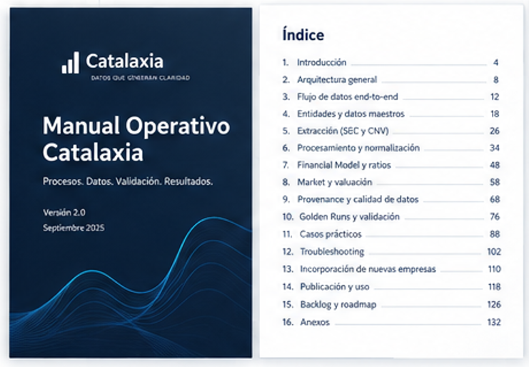
La portada de este manual usa la misma estética: navy oscuro (#0B2039) sobre blanco, títulos en negro/navy, cuerpo gris y acentos azul/naranja. Paleta dominante extraída de la tapa:
| Rol | Color |
|---|---|
| Tapa / fondo oscuro | #0B2039 / #112842 |
| Fondo claro | blanco / #F2F4F6 |
| Acento texto secundario | #7B899A |
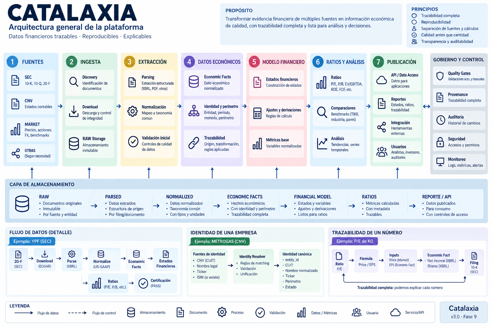
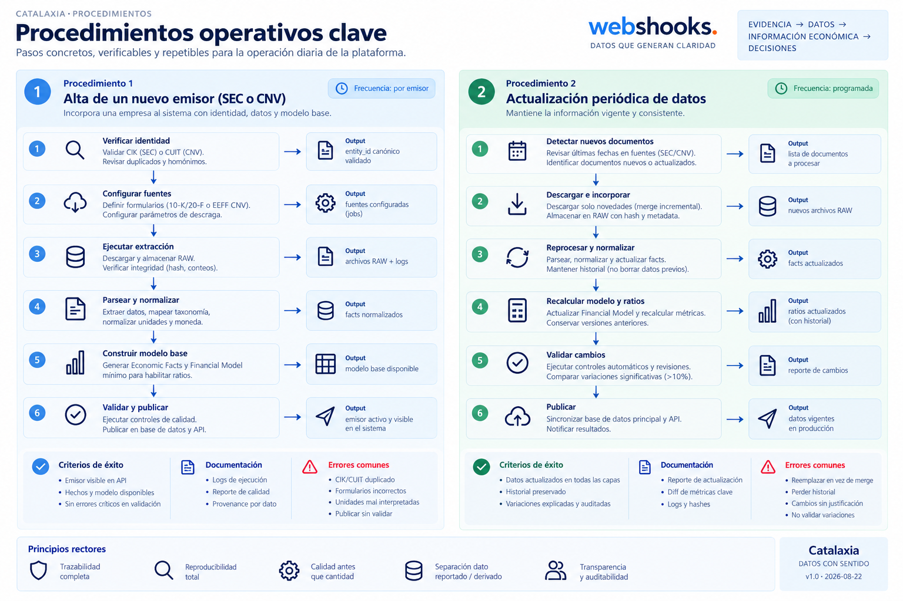
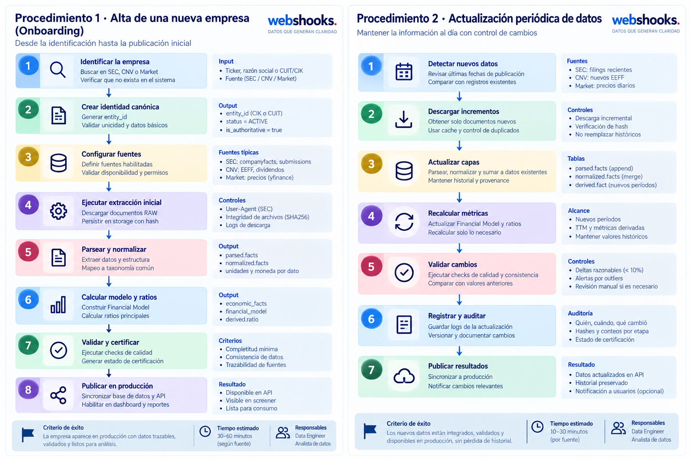
Cada figura del manual se cita con su número (Figura N). Cuando un capítulo vuelve a tratar el mismo tema sin repetir la imagen, referencia la figura con su número en lugar de duplicarla:
Ejemplo: la Parte IX (CNV) explica los tres tramos con la Figura 2 de contexto de pipelines y no reinserta la imagen.
Nota: en
docs/diagramas/hay más materiales de referencia (biblioteca de diagramas, diseño general, capturas de pantalla). Se agregan al manual cuando su tema tenga capítulo/solución — no antes.
Este anexo contiene plantillas editables de
diagramas para usar en cualquier documento del proyecto (manual,
runbooks, presentaciones, propuestas). Cada plantilla está en formato
Mermaid (.mmd), listo para editar y
versionar, y se renderiza a imagen con la paleta de marca
(navy/azul/naranja).
Las plantillas fuente viven en
docs/diagramas/plantillas/:
plantilla_pipeline.mmd → pipeline E2E
plantilla_proceso.mmd → proceso con decisiones
plantilla_flujo.mmd → flujo temporal (secuencia)
plantilla_estados.mmd → diagrama de estados
plantilla_arquitectura.mmd → arquitectura por capas
plantilla_bloques.mmd → diagrama de bloques / módulosPara regenerar las imágenes del manual (PNG en
docs/manual/images/plantillas/ y SVG junto a la fuente) con
mermaid-cli usando el Edge del sistema:
mmdc -i plantilla_proceso.mmd -o ../manual/images/plantillas/plantilla_proceso.png \
-p puppeteer-config.json -b white -w 1600
mmdc -i plantilla_proceso.mmd -o plantilla_proceso.svg \
-p puppeteer-config.json -b white -w 1600También se pueden editar online en https://mermaid.live pegando el contenido
.mmd y exportar a PNG/SVG directamente.
Tipo de plantilla → cuándo se usa: elegí
pipelinecuando el foco es la cadena de etapas;procesocuando hay decisiones y gates;flujopara interacción temporal entre actores/sistemas;estadospara ciclos de vida de una corrida o un job;arquitecturapara capas;bloquespara módulos y sus interfaces.
Cadena de etapas de un proceso E2E (fuentes → ingesta → proceso → salida). Útil para Secuencia de jobs tipo S00 → S04 → ratios, o tramos CNV.
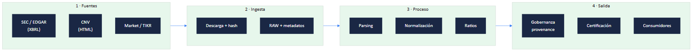
%% plantilla_pipeline.mmd
%%{init: {"theme":"base","themeVariables":{"primaryColor":"#1A2744","primaryTextColor":"#FFFFFF","lineColor":"#3B82F6","secondaryColor":"#DCEAFF","tertiaryColor":"#E7F7EC","fontFamily":"Calibri","fontSize":14}}}%%
flowchart LR
subgraph FUENTES["1 · Fuentes"]
A1["SEC / EDGAR (XBRL)"]
A2["CNV (HTML)"]
A3["Market / TIKR"]
end
subgraph INGESTA["2 · Ingesta"]
B1["Descarga + hash"]
B2["RAW + metadatos"]
end
subgraph PROCESO["3 · Proceso"]
C1["Parsing"]
C2["Normalización"]
C3["Ratios"]
end
subgraph SALIDA["4 · Salida"]
D1["Gobernanza / provenance"]
D2["Certificación"]
D3["Consumidores"]
end
FUENTES --> INGESTA --> PROCESO --> SALIDAFlujo con decisiones (¿Permiso?,
¿Gate PASS?) y ciclos de rollback. Útil para explicar
cualquier procedimiento operativo del manual.
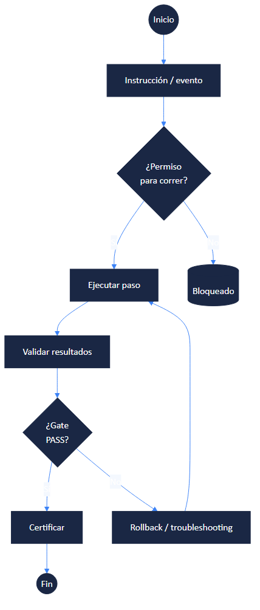
%% plantilla_proceso.mmd
flowchart TD
ST(("Inicio")) --> P1["Instrucción / evento"]
P1 --> Q1{"¿Permiso para correr?"}
Q1 -- "Sí" --> P2["Ejecutar paso"]
Q1 -- "No" --> E1[("Bloqueado")]
P2 --> P3["Validar resultados"]
P3 --> Q2{"¿Gate PASS?"}
Q2 -- "Sí" --> P4["Certificar"]
Q2 -- "No" --> P5["Rollback / troubleshooting"]
P4 --> FIN(("Fin"))
P5 --> P2Regla del permiso: el nodo
¿Permiso para correr?representa el parámetro--permiso/ la regla de no escribir en 5432 sinENGINE_ALLOW_PROD=1.
Interacción temporal entre actores y sistemas. Útil para explicar cómo orquesta un paso del engine, con lecturas/escribas y fallbacks.
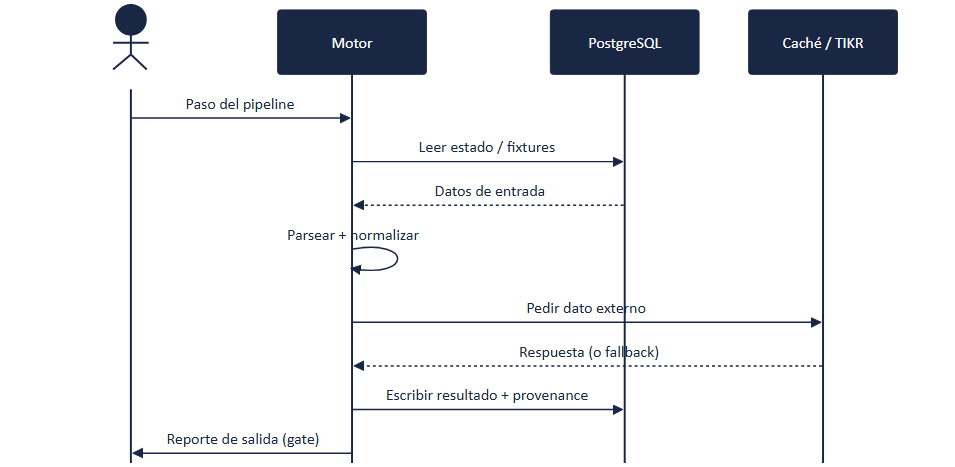
%% plantilla_flujo.mmd
sequenceDiagram
actor U as Usuario / Orquestador
participant M as Motor
participant DB as PostgreSQL
participant C as Caché / TIKR
U->>M: Paso del pipeline
M->>DB: Leer estado / fixtures
DB-->>M: Datos de entrada
M->>M: Parsear + normalizar
M->>C: Pedir dato externo
C-->>M: Respuesta (o fallback)
M->>DB: Escribir resultado + provenance
M->>U: Reporte de salida (gate)Ciclo de vida de una corrida o un job. Útil para los estados de
engine.runs (Pendiente → Corriendo → OK / Abortado /
Bloqueado) o de los tramos CNV.
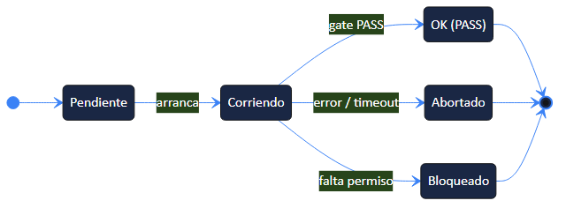
%% plantilla_estados.mmd
stateDiagram-v2
direction LR
PENDIENTE: Pendiente
CORRIENDO: Corriendo
OK: OK (PASS)
ABORTADO: Abortado
BLOQUEADO: Bloqueado
[*] --> PENDIENTE
PENDIENTE --> CORRIENDO: arranca
CORRIENDO --> OK: gate PASS
CORRIENDO --> ABORTADO: error / timeout
CORRIENDO --> BLOQUEADO: falta permiso
OK --> [*]
ABORTADO --> [*]
BLOQUEADO --> [*]Arquitectura por capas (fuentes → ingesta → persistencia → lógica → salida). Útil para los capítulos de arquitectura y despliegue.
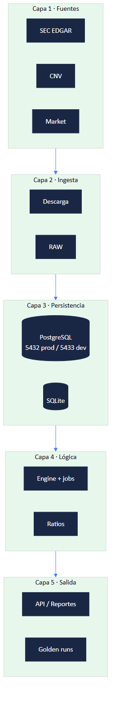
%% plantilla_arquitectura.mmd
flowchart TB
subgraph CAPA1["Capa 1 · Fuentes"]
A1["SEC EDGAR"]
A2["CNV"]
A3["Market"]
end
subgraph CAPA2["Capa 2 · Ingesta"]
B1["Descarga"]
B2["RAW"]
end
subgraph CAPA3["Capa 3 · Persistencia"]
C1[("PostgreSQL 5432 prod / 5433 dev")]
C2[("SQLite")]
end
subgraph CAPA4["Capa 4 · Lógica"]
D1["Engine + jobs"]
D2["Ratios"]
end
subgraph CAPA5["Capa 5 · Salida"]
E1["API / Reportes"]
E2["Golden runs"]
end
CAPA1 --> CAPA2 --> CAPA3 --> CAPA4 --> CAPA5Módulos y sus interfaces (entradas/salidas). Útil para explicar el flujo de datos entre componentes sin entrar en la secuencia temporal.
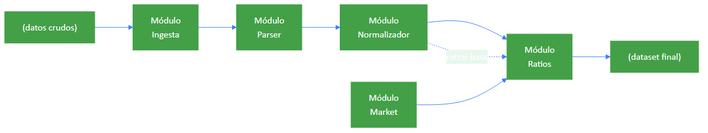
%% plantilla_bloques.mmd
flowchart LR
M1["Módulo Ingesta"]
M2["Módulo Parser"]
M3["Módulo Normalizador"]
M4["Módulo Ratios"]
M5["Módulo Market"]
I1["(datos crudos)"] --> M1 --> M2 --> M3 --> M4
M3 -. ratios base .-> M4
M5 --> M4
M4 --> O1["(dataset final)"]Los diagramas oficiales del Manual Operativo Catalaxia v2.0 (marca webshooks · Procesos · Datos · Validación · Resultados). Es la identidad visual de la plataforma: cada figura de esta biblioteca explica un mecanismo que el manual desarrolla en texto en las Partes correspondientes. Las Partes citan estas figuras por número cuando vuelven sobre el tema.
Regla: estas imágenes son la fuente visual oficial. Si un diagrama del manual y una imagen de esta biblioteca divergen, manda la biblioteca y se actualiza la otra.
Extracción, transformación y publicación de datos financieros. Vista completa del proceso operativo de Catalaxia (fuentes → ingesta → transformación → cálculo → validación → publicación).
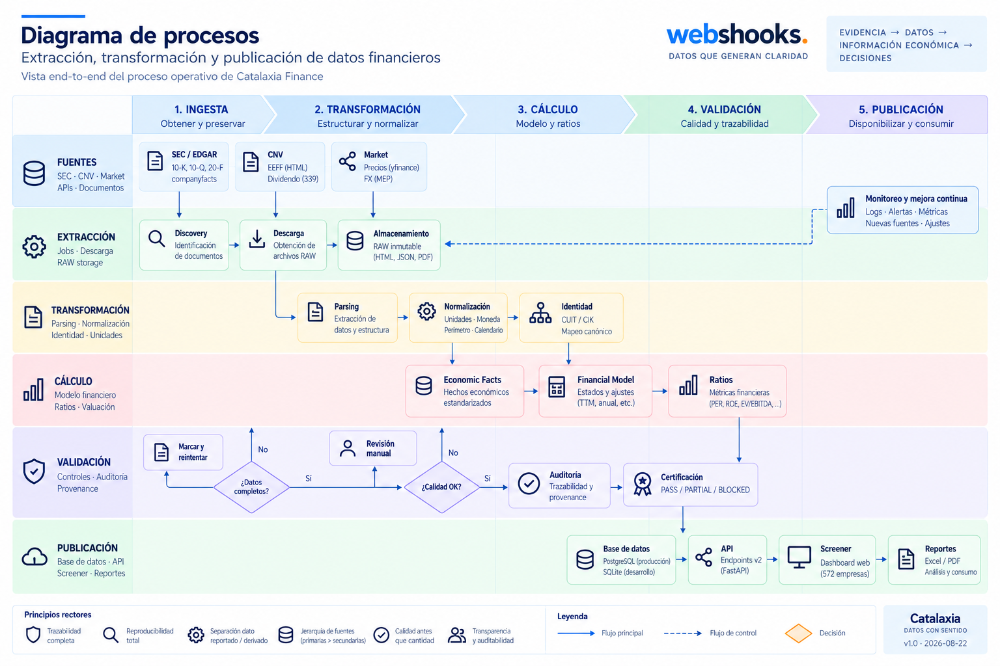
Índice de la serie y cada diagrama que la compone:
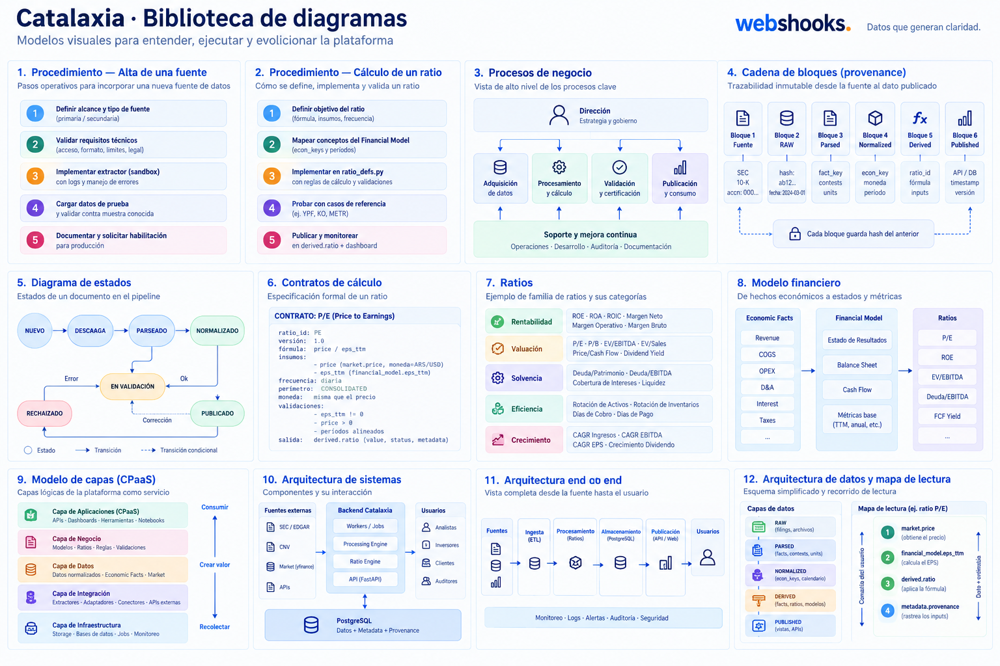
| Figura | Diagrama | Parte donde se desarrolla |
|---|---|---|
| 13 | Procedimiento — Cálculo de un ratio | VII (Ratio Engine) |
| 14 | Cadena de bloques (provenance) | X (Provenance) |
| 15 | Diagrama de estados | XI (Idempotencia) |
| 16 | Contratos de cálculo | VII (Ratio Engine) |
| 17 | Ratios — familia y categorías | VII (Ratio Engine) |
| 18 | Modelo financiero | VI (Economic Facts + Financial Model) |
| 19 | Modelo de capas (CPaaS) | I §1, XVIII (Qué falta) |
| 20 | Arquitectura de sistemas | I §1 |
| 21 | Arquitectura end-to-end | I §1 |
| 22 | Arquitectura de datos y mapa de lectura | X (Provenance) |
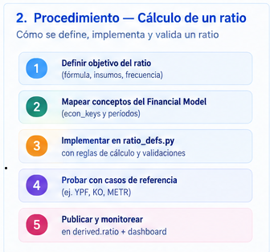
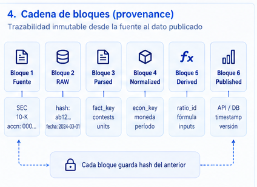
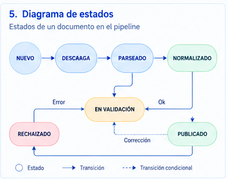
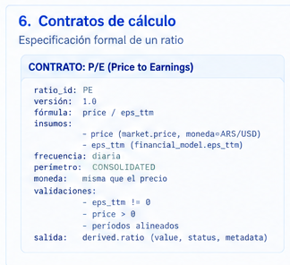
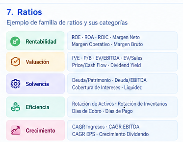
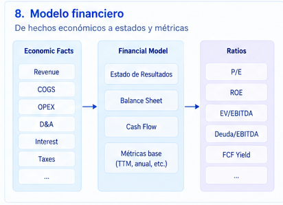
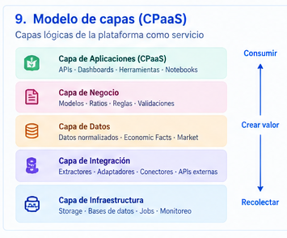
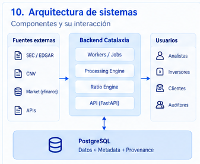
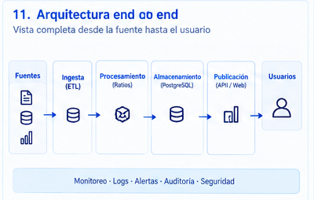
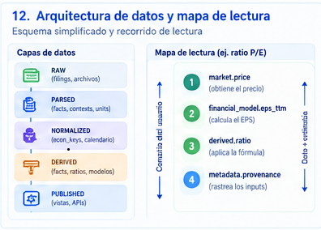
Procedimientos y operación diaria. El índice y cada diagrama:
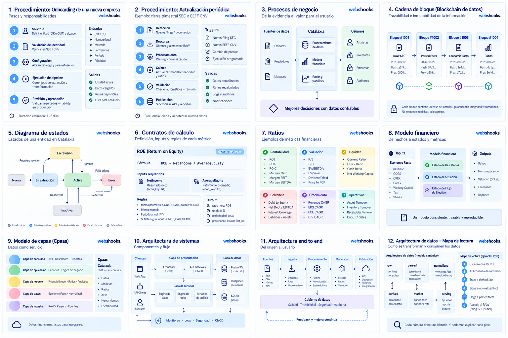
| Figura | Diagrama | Parte donde se desarrolla |
|---|---|---|
| 24 | Procedimiento — Onboarding de una nueva empresa | XVIII (Qué falta), III (Piloto YPF) |
| 25 | Procedimiento — Actualización periódica | XVI (Golden Run), XIX (Anexo B) |
| 26 | Procesos de negocio | I §1 |
| 27 | Cadena de bloques (blockchain de datos) | X (Provenance) |
| 28 | Diagrama de estados de una entidad | XI (Idempotencia) |
| 29 | Contratos de cálculo (ROE) | VII (Ratio Engine) |
| 30 | Ratios — ejemplos de métricas | VII (Ratio Engine) |
| 31 | Modelo financiero | VI (Economic Facts + Financial Model) |
| 32 | Modelo de capas (CPaaS) | XVIII (Qué falta) |
| 33 | Arquitectura de sistemas | I §1 |
| 34 | Arquitectura end-to-end | I §1 |
| 35 | Arquitectura de datos + mapa de lectura | X (Provenance) |
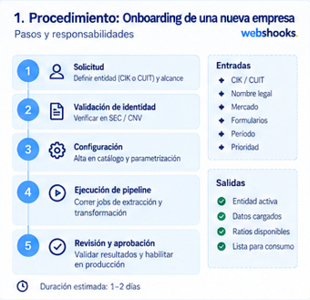
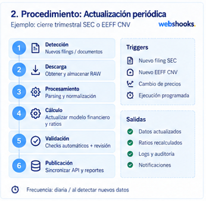
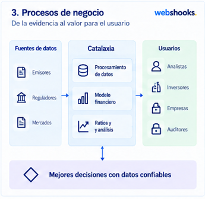
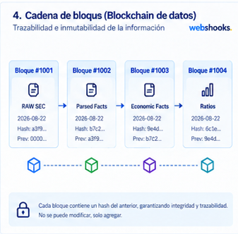
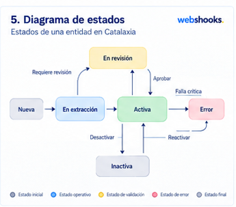
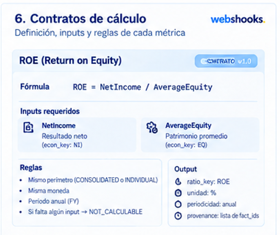
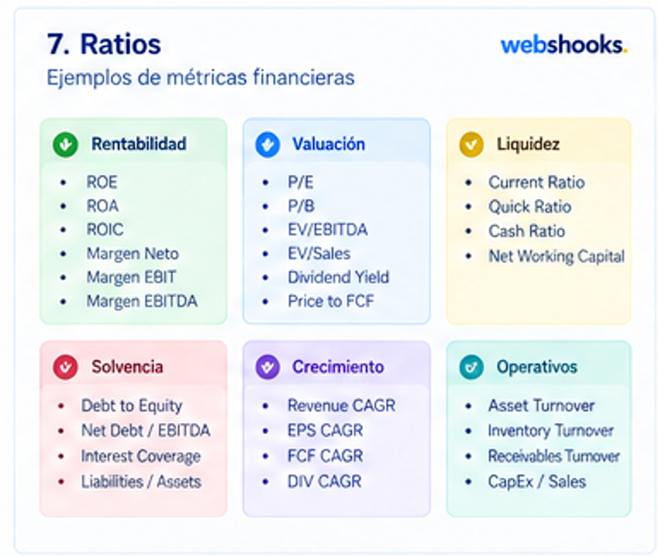
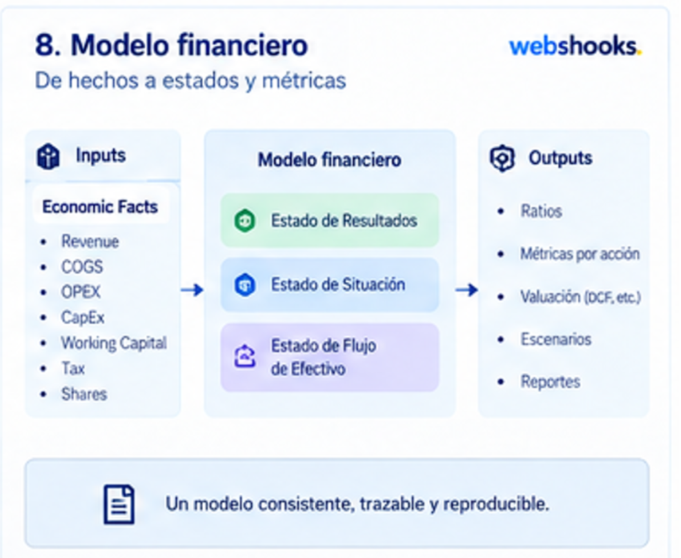
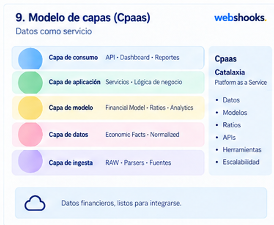
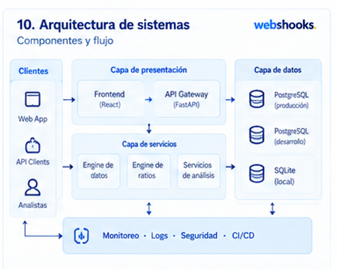
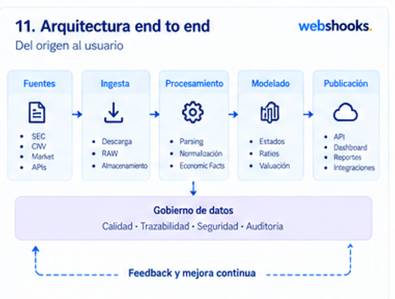
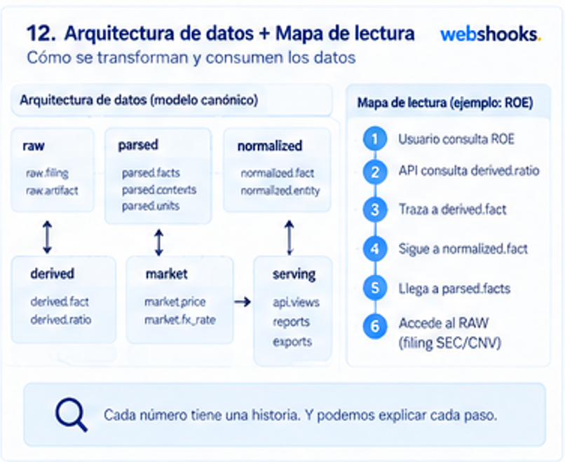
Son dos variantes de diseño del mismo contenido: la serie Biblioteca de diagramas (figuras 12–22) es la versión catálogo; la serie Operativos (figuras 23–35) es la versión orientada a procedimientos con responsables, criterios de éxito y errores comunes. Cuando un capítulo haga falta, se cita la figura de la serie que mejor encaje; no se duplica imagen en el texto.
Explicación profunda y operacional de las 12 capas de la arquitectura de Catalaxia. Base: el manual operativo v2.0 (Partes II–XVIII), los runbooks y el estado real medido del sistema.
Regla de lectura de este anexo. Cada capa se explica en dos niveles, siempre separados:
Nota de decisiones abiertas. Varias capas dependen
de D-1 (repo principal vs. worktree
catalaxia-cnvmig para Economic Facts, Financial Model,
tramo C de CNV y homologación TIKR), D-3 (certificar KO
o cambiar piloto), D-4 (vocabulario de homologación) y
de las certificaciones C-1…C-6. Este anexo no las
resuelve: las marca y sigue.
Obtener y preservar la evidencia original (documentos y datos) desde los proveedores regulatorios y de mercado, sin interpretarla todavía.
La capa que decide qué se va a bajar, de dónde, cómo y con qué controles. No almacena datos económicos: almacena documentos y series crudas. Separa tres universos: SEC/EDGAR, CNV y Market.
Sin una capa de fuentes explícita, cada consumidor baja los datos por su cuenta: se mezclan versiones, se rompe la reproducibilidad y no hay forma de auditar qué se vio. Esta capa establece el contrato de ingesta: todo dato que entra al sistema sale de un proveedor identificado, con su get etiqueta (proveedor, documento, fecha, hash).
Dos modos de obtención:
La regla operativa del sistema es que esta capa nunca normaliza: el dato se guarda tal cual se obtuvo.
proveedor → discovery → [nuevo documento?] → download → SHA256 → [RAW] → registro en ledger de ingestaUser-Agent identificado (requisito de la SEC), respetando
las límites de rate. Scripts reales: S01 (identity) para el
CIK y S02_fetch_ypf para la descarga.DONE,
con_filas, PROCESSED_OK,
REJECTED, FAILED_FINAL — hay 286 documentos en
whitelist, 56 DONE).c3_cnv_fetch, con gates y ledger, pero
solo baja VISOR y EMPRESA_PAGE, no los
EEFF: L-7, SG-01); B
(job5_v2_extract_eeff, legacy, el que produjo todos
los datos CNV existentes, sin ledger ni SHA, escribe en
data/screener.db, descarta en silencio
CNV-EX-001/L-6); C
(c4_cnv_adapter, canónico, en el worktree,
pendiente D-1).ATTACHMENT_ONLY 197, OTHER_FORM 29 — la cota
de 60 documentos es la frontera de formato).hash_cnv
— hoy NULL en 4.005/4.005, SG-02) y su
estado registrado.market_* (precio, fecha,
eventos) con su log de fetch.m19_apply_schema antes que s00_smoke, o las
tablas se omiten en silencio.No depende de ninguna otra capa. Es el punto más externo. Depende de los proveedores (disponibilidad de la SEC, la CNV y el feed de mercado).
L-6.]La capa FUENTES está terminada cuando: todo el universo
declarado de documentos y series (SEC, CNV, Market) está descargado,
íntegro (verificado por hash), con su metadato de ingesta registrado y
reproducible con un solo comando, sin duplicados y sin descartes
silenciosos. [HOY: no se cumple — falta el tramo C CNV y el
hash_cnv (SG-02).]
Le da a IDENTIDAD y RAW la evidencia para decir: “qué documento de qué entidad corresponde a qué período”.
Determinar inequívocamente qué entidad económica e instrumento se está procesando, antes de interpretar cualquier dato.
Un diccionario de entidades (empresas) e instrumentos (tickers/ISIN)
con identificadores canónicos vinculados a los proveedores (CIK para
SEC, CUIT para CNV, ticker/ISIN para mercado) y a un ID interno
(entity_id).
El problema del homónimo y del alias: una misma compañía aparece como “MetroGas”, “METROGAS S.A.”, “Metrogas”, con CUIT X; otra figura con CJK distinto. Si la identidad no se resuelve antes, mezclamos empresas o duplicamos datos.
Construcción de registros de identidad con reglas de matching y
normalización del nombre legal (reglas de lenguaje
aplicadas al nombre declarado por CADA fuente), consolidación de alias y
validación por humano o por regla de autoridad
(is_authoritative).
(wild card por fuente) → candidatos → matching (CIK/CUIT, nombre, ticker) → unificación → entity_id canónicoentity_id + identifiers con
CIK:/CUIT:).entity_id canónico, nombre
normalizado, perímetro, estado.entity_id
único y sus identificadores de fuente.entity_id de su emisor.market_instruments.entity_id es integer
legacy que no respeta el esquema con namespace
(CIK:/CUIT:) — SG-10. Los
instrumentos quedan vinculados al emisor solo cuando el identificador se
normalizó.Depende de FUENTES (de dónde salen los CIK/CUIT/tickers) y de MARKET (para instrumentos). Es prerrequisito de RAW y NORMALIZED: no se puede etiquetar un dato sin saber a qué entidad pertenece.
entity_id no cambia. Se registra el
historial de tickers.individual vs consolidado.9 de 7.998 entidades con hechos
en engine [L-16] — la identidad financiera real está
distribuida; hay mucha identidad declarada sin hechos.“Sabemos exactamente a qué entidad e instrumento pertenece cada dato”
cuando: toda entidad del universo tiene entity_id canónico
con identificadores de proveedor validados; todo instrumento tiene
emisor resuelto; y no existen dos entity_id para la misma
empresa (verificable por auditoría de duplicados).
RAW puede etiquetar cada descarga con su entidad/instrumento y, más adelante, los hechos económicos saben a quién pertenecen.
Preservar la evidencia original sin modificarla: una copia íntegra, versionada y reproducible de todo lo que se descargó.
Un almacenamiento inmutable de los archivos tal como vinieron de la fuente, con su hash (SHA256) y su metadato. Es la “caja fuerte” de la auditoría.
El problema del estándar de oro de auditoría: si el sistema no guarda el original, ningún número posterior puede demostrarse contra su documento. RAW es lo que permite repetir un procesamiento años después con el mismo insumo y verificar que el resultado es el mismo (reproducibilidad).
Solo escritura. Una vez depositado un archivo, no se edita: se
versiona. La identidad del archivo es su hash; el metadato
(documento, entidad, período,
proveedor) vive en las tablas de ingesta, no dentro del
archivo.
download → [hash SHA256] → store inmutable → registrar metadato (documento→hash) → [verificación de integridad]Depende de FUENTES (obtención) e IDENTIDAD (etiqueta el documento). No depende de PARSED: RAW existe aunque nadie lo parsea todavía.
hash_cnv (SG-02 en 4.005/4.005). Es el hueco
más grave de integridad de todo el sistema: los archivos que en teoría
alimentan parsed.facts no tienen huella verificable.“Tenemos una copia íntegra y reproducible de la evidencia original”
cuando: todo documento declarado en FUENTES está en RAW con
SHA256 registrado y verificado, y un reprocesamiento de la fuente cae
sobre los mismos archivos (mismos hashes) sin crear duplicados.
[HOY: no se cumple en CNV por SG-02.]
Le da a PARSED el insumo verificado: el parser puede citar “procesé el archivo X (hash Y)”.
Transformar documentos RAW en estructuras procesables por software (datos extraídos), sin interpretarlos económicamente todavía.
La capa que “rompe” el documento: convierte el XBRL/HTML/JSON en
facts con su contexto y su unidad, y los guarda en
parsed.facts manteniendo la estructura de origen.
El problema de la heterogeneidad bruta: los datos crudos no se pueden ofrecer tal cual; hay que extraerlos y estructurarlos para que las capas siguientes los consuman. PARSED separa el “qué dijo el documento” del “qué significa”.
Interpretación sintáctica (no semántica por línea de documento): línea
documento RAW → taxonomía → [fact, context, unit] → parsed.factsRAW (con hash) → validación de formato → extracción → conformar facts → guardar en parsed.facts (idempotente)<fact>).parsed.facts.fact_key. Tipos reportados
por CNV: unidades reales como ars@1e6 (1.120),
ars@1e3 (915), pure (576),
ars-por-accion (111), ars@1e0 (73).start/end
(duration) o instant (snapshot).<context>).pure, o unit-by-unit con escala
(ars@1e6 = millones de ARS).us-gaap:Revenues).concept del
fact).Depende de RAW (documento íntegro) y, para CNV, de IDENTIDAD (a quién pertenece el documento). No depende de NORMALIZED: el parser no normaliza.
run_id/snapshot; “Paso 2 · S03 idempotencia”
en la Parte IV.]is_custom [HOY]: bug P0 que contamina
la distinción entre conceptos estándar y extensiones de la empresa
(Parte IV §3).El documento fue correctamente parseado cuando: todos los facts extraídos por taxonomía y por filing coinciden con el documento RAW (re-parsear da el mismo resultado), cada fact tiene su contexto y unidad resueltos, y no hay descartes silenciosos.
Le da a NORMALIZED los datos extraídos con su significado técnico: unidades, períodos, qnames — todavía no comparables entre empresas ni entre fuentes.
Convertir los datos extraídos en información técnicamente comparable: mismas unidades, mismas monedas, mismos períodos, mismo perímetro.
El puente entre la sintaxis (PARSED) y el sentido común (ECONOMIC
FACTS). Toma el parsed.facts y produce
normalized.facts con reglas uniformes: escala, moneda,
período y perímetro.
El problema de la comparabilidad: la Revenue de YPF viene en millones de USD, la de METROGAS en miles/ARS; un período puede ser FY, Q o YTD; un número puede ser instant o duration. Si no se normaliza, ningún ratio ni ninguna comparación tiene sentido.
Mapeo de cada fact a un “vehículo” normalizado: - Escala y
unidad al estándar del modelo (p. ej. millones de la moneda
base). - Moneda a la moneda canónica de la entidad (ARS
para CNV, USD para SEC) con fx.rate para lo que cruza. -
Período a un intervalo canónico (año fiscal de la
entidad, trimestre, YTD). - Perímetro a
individual/consolidado declarado explícitamente.
parsed.facts → resolver unidad/escala → convertir moneda (fx) → mapear período → fijar perímetro → normalized.factsars@1e6 → millones), evitar mezclar millones con
unidades.ars@1e6 de METR no pueden sumarse a las 915
ars@1e3 sin convertir).fx.rate con
fecha.Depende de PARSED (datos extraídos), de IDENTIDAD (cuyo perímetro) y de MARKET/FX (para conversión de moneda de la fuente).
ars@1e6 a ars@1e3 entre formularios):
la normalización debe ser por filing/contexto, no
global.PARSED responde “qué dice el documento”; NORMALIZED responde “cómo lo decimos todos juntos”. El parser jamás cambia un número; el normalizador sí (escala, moneda) pero SIEMPRE registrando la transformación. No se deben mezclar: si el parser normaliza, se pierde la evidencia del valor original; si el normalizador parsea, se rompe la comparabilidad de los cálculos.
Un dato está suficientemente normalizado cuando: está expresado en la unidad, moneda, período y perímetro canónicos del modelo, su transformación es reversible y registrada, y es directamente comparable con otro dato normalizado de otra empresa/fuente.
Le da a ECONOMIC FACTS los datos comparables: el dato puede ahora pasar a significar algo económico sin ambigüedades de escala/time.
Representar el hecho económico, independientemente de cómo aparezca en el documento técnico.
La capa que responde la pregunta del negocio: “¿qué pasó,
económicamente?”. Un hecho económico es un dato con identidad
económica canónica (econ_key), fecha económica
(measurement_date), entidad, período y perímetro — derivado
de uno o más facts técnicos.
El mismo número, miles de formas: un mismo concepto
aparece en US-GAAP, en IFRS, en distintos filings, con distintos qnames,
re-expresados por inflación (IAS 29), con segmentos distintos. Sin una
identidad económica canónica, el sistema no puede juntarlos sin duplicar
ni explicarlos sin contradicciones. economic_facts y las
migraciones 034/035/036 (economic_facts,
measurement_date, econ_key) son el corazón de
esta capa (hoy en el worktree, D-1).
Dos claves + una fecha:
normalized.facts → resolver conceptos → asignar econ_key → fijar measurement_date → deduplicar → economic_factsrevenue_consolidated_ttm,
net_income_annual, equity_instant), agnóstico
de la fuente y del régimen contable.econ_key.measurement_date.economic_fact tiene
measurement_date resuelta.Depende de NORMALIZED (dato comparable) y de IDENTIDAD (a qué
entidad). También de las migraciones del worktree
(034–036).
econ_key, measurement_date,
perímetro, moneda) — y se conserva la lista de facts que lo alimentan
(provenance).econ_key es el mismo; la versión
del dato cambia y se registra.is_custom [HOY] (parte IV): sin
corregir, el mapeo está contaminado para conceptos de la empresa.Un fact técnico está correctamente convertido en hecho económico
cuando: existe un economic_fact con
econ_key canónico, measurement_date resuelta,
entidad y perímetro correctos, deduplicado contra equivalentes, y con su
fact_key de origen conservado.
Le da a FINANCIAL MODEL los hechos económicos homogéneos para armar series (tiempo, TTM, stocks/flows).
Construir series financieras coherentes a partir de los Economic Facts: un modelo cronológico por entidad donde cada concepto tiene su serie histórica bien formada (FY, Q, YTD, TTM/LTM, stocks y flows).
La capa que responde “¿cómo se ve el estado de
resultados/balance/flujo de esta empresa a lo largo del tiempo, con
períodos alineados?” — antes de calcular métricas. Vive en el worktree
con Financial Model (034–036), pendiente D-1.
El problema del doble conteo y del desfase de períodos: los filings reportan en distintos formatos (alguna YTD acumulada, otra trimestral, otra anual). Sin series construidas con reglas, TTM y ratios se calculan mal.
FY Q3 [YTD Q3 reportado] + FY anterior [YTD Q3 anterior] − (si hace falta) → Revenue TTMmeasurement_date y del identitario fiscal de la entidad,
cada economic_fact ca en su celda (ejercicio, trimestre,
periodo).Depende de ECONOMIC FACTS (hechos homogéneos) y de IDENTIDAD (ejercicio fiscal de la entidad, perímetro de cada serie).
GAP) y no “inventar” el
trimestre.El Financial Model está suficientemente construido cuando: para cada entidad y econ_key existe una serie homogénea (FY/Q/YTD, instant/duration, perímetro consistente) con TTM/LTM derivables sin doble conteo y con huecos señalan.
Le da a RATIOS series listas: el ratio ya no piensa “de qué período”, solo “con qué fórmula”.
Transformar series financieras en métricas analíticas (ratios) matemática y económicamente válidas.
La capa que define los contratos de cálculo: cada
ratio es una especificación formal (fórmula, inputs, frecuencia, unidad,
validaciones) que se ejecuta contra el Financial Model. Persistencia:
derived.ratio (con ratio_id,
value, status, metadata e
inputs).
Convertir los datos en respuestas: “¿está cara o barata? ¿qué tan rentable?” sin que cada análisis reinvente la fórmula. Además, centraliza el tratamiento de los casos límite.
series del Financial Model + inputs de Market → contrato de cálculo (ratio_defs) → ejecución → derived.ratio (value, status, metadata)NOT_CALCULABLE; EPS
negativo → se publica (P/E negativo significa pérdida, no error) con
metadata; denominador inválido → NOT_CALCULABLE.NOT_CALCULABLE o flag; los ratios negativos (patrimonio
negativo) se marcan como anomalía.NOT_CALCULABLE; pasivos muy grandes se mantienen con su
valor.NOT_CALCULABLE/flag.Depende de FINANCIAL MODEL (series) y de MARKET (precios, acciones). Depende de que la normalización de unidades/monedas sea correcta: un P/E con precio en ARS y EPS en USD es un error de unidades.
NOT_CALCULABLE, nunca un 0 fabricado ni un promedio “a
ojo”. [En la homologación TIKR, 43,4% de las métricas quedaron
CATALAXIA_MISSING_INPUT: falta insumo, no calidad.]derived.ratio tiene 36 filas / 9
emisores sobre 584 instrumentos; solo 4 métricas canónicas persisten
(eps, pe, pb,
ev_sales); las 14 contables no se persisten todavía
(SG-03).Un ratio es válido cuando: el contrato (fórmula, inputs,
período, unidad) está definido y versionado, se ejecutó contra el modelo
y Market, el resultado respetó las reglas de bordes, y
derived.ratio quedó con value,
status y metadata (incluidos los inputs
usados). Probar siempre con casos de referencia (YPF, KO,
METR).
Le da a PROVENANCE el extremo final del rastro y a VALIDACIÓN el objeto que auditar.
Permitir reconstruir el origen completo de cualquier número publicado, en un solo “¿de dónde salió?”
La cadena de linaje que enlaza cada salida con su origen:
RATIO → FORMULA → INPUT → FACT → FILING / RAW → SHA256También los metadatos de transformación (reglas aplicadas, versión de
la regla, fecha). Existe como capa real (Parte X ·
06_PROVENANCE.md), con límites conocidos.
La auditabilidad: para Catalaxia, la confianza es el producto. Un número sin origen no es un número: es una opinión.
Cada etapa persistente apunta al origen de la anterior por id y
versión: - derived.ratio guarda ratio_id,
value, status, metadata e
inputs (identificadores de los
facts/series). - Los inputs apuntan a
economic_facts (o normalized.facts donde no
hay economy), con su fact_key. - El fact_key
apunta al filing/documento; el documento apunta al RAW y su hash.
derived.ratio.inputs → economic_facts.fact_key → parsed.facts.metadata (filing) → RAW (hash) + reglas/versión de cada transformaciónDepende de todas las capas anteriores: sin fact_key bien armado ni
filing con hash, el rastro se corta. **[HOY:** en CNV el tramo legacy no
tiene ledger ni hash_cnv (SG-02), y
9 de 7.998 entidades tienen hechos en engine
(L-16) — la trazabilidad completa solo existe donde la
identidad y el hash existen.]
run_id), no al “última vez que corrió todo”.Un dato es completamente trazable cuando, dado su id publicado,
se puede recorrer ratio → fórmula → inputs → facts → filing →
RAW → hash → versión de cada transformación sin cortes, y cada paso está
documentado con su versión y su run_id.
Le da a VALIDACIÓN el material que validar (lineage consistente) y a CERTIFICACIÓN la evidencia para decidir PASS/BLOCK.
Demostrar que el sistema produjo datos coherentes (no solo que “corrió”).
El conjunto de checks técnicos, estructurales, financieros, matemáticos y de negocio que comparan lo esperado contra lo publicado. Produce evidencia; no decide estados (eso lo hace CERTIFICACIÓN).
El riesgo de que un dato parezca correcto y no lo sea (doble conteo, unidades cruzadas, huecos temporales, rastros rotos).
dataset esperado (modelo) vs dataset publicado → ejecutar checks → reporte de validación (evidencia)Depende de PROVENANCE (para auditar el rastro) y del modelo esperado
(definido por los contratos). Depende de que las corridas sean
rastreables (run_id).
is_custom (P0) aún no garantizan re-ejecución sin
duplicados (Parte XI).Un dataset pasó VALIDACIÓN cuando: todos los checks de la batería pasaron o sus excepciones están listadas y justificadas, la completitud está calculada sobre el modelo esperado, las unidades/períodos/provenance están coherentes y la re-ejecución no produce cambios (idempotencia verificada).
Le da a CERTIFICACIÓN la evidencia (sin validación no hay certificación posible).
Decidir, con la evidencia de VALIDACIÓN, si la información puede pasar a publicación — y registrarlo.
La capa que consume validación y emite un
estado por dato/dataset: PASS,
PASS_WITH_WARNINGS, BLOCKED. Es el “último
portero”.
Que la decisión de publicar sea objetiva y rastreable, no la opinión del día.
Reglas de gates (el engine ya tiene estados y gates
PASS / WARNING / BLOCK). El certificador aplica las reglas
a la evidencia de validación y escribe el resultado de certificación con
su run_id.
evidencia de VALIDACIÓN → reglas de gate → estado (PASS / PASS_WITH_WARNINGS / BLOCKED) → registro de certificaciónrun_id, estado, versión de reglas y evidencia
adjunta).| Estado | Significado | ¿Publicable? | Acción |
|---|---|---|---|
| PASS | Todas las validaciones superadas, sin advertencias | Sí, sin restricción | Publicar + registrar evidencia |
| PASS WITH WARNINGS | Validaciones con advertencias conocidas y explicadas | Sí, con advertencias visibles | Publicar marcado; revisar advertencias |
| BLOCKED | Error o inconsistencia bloqueante | No | Corregir, reprocesar, re-certificar |
Depende de VALIDACIÓN (evidencia) y de que existan las
certificaciones pendientes: C-1 (entorno desde cero),
C-2 (Economic Facts/Financial Model), C-3 (KO), C-4 (tramo C
CNV/homologación), C-5 (idempotencia job5), C-6 (Market E2E). [HOY: no
existe un gate agregado que certifique un dataset completo de
una vez (L-4).]
Una información puede pasar oficialmente a publicación cuando:
existe un estado de certificación objetivamente derivado de la
evidencia de validación, con reglas versionadas, y registrado con su
run_id. Si es BLOCKED, la publicación
está prohibida.
Le da a PUBLICACIÓN el permiso: el pub solo acepta datos con certificación válida.
Exponer únicamente información que atravesó correctamente las capas anteriores y está certificada.
La capa de salida: los habilitadores para que el usuario final
consulte, filtre y reciba los datos: DATABASE (PostgreSQL y/o
screener.db), API, SCREENER (dashboard) y REPORTES
(Excel/PDF).
El desacople consumo vs. producción: el usuario que consulta no puede depender nunca de re-correr el ETL ni de re-leer las fuentes. PUBLICACIÓN sirve datos ya certificados.
Creación de vistas/dataset de publicación (solo datos PASS / PASS_WITH_WARNINGS), con la trazabilidad adjunta. El screener consulta esas vistas; los reportes salen de ellas.
datos certificados → dataset de publicación → API/screener/reportes (con provenance accesible)derived.ratio, vistas, market_*,
economic_facts, financial_model en
producción).Porque el dispendio de publicación puede servir, comparar y certificar sin tocar nunca el pipeline. Si la publicación re-lee la fuente, una caída de la SEC rompe el dashboard y se pierde la separación “dato publicado vs. dato nuevo”. Regla operativa: el pub nunca escribe en las tablas de ingesta y nunca se corre como pipeline de fuentes (regla N-2 / la regla de los 374).
Depende de CERTIFICACIÓN (permiso), de PROVENANCE (trazabilidad mostrable) y de las capas de presentación (API/dashboard) que en general están EN DESARROLLO.
KNOWN_LIMITATION, ver Parte XVII).Un dato está oficialmente disponible para el usuario final cuando: está en el dataset de publicación, con estado certificado (PASS o PASS_WITH_WARNINGS), días accesible por API/screener/reporte Y su trazabilidad completa es consultable sin re-correr nada.
No hay capa siguiente: PUBLICACIÓN es el borde. Habilita el negocio (decisiones del inversor/analista) y el feedback que vuelve a FUENTES (nuevos datos, errores detectados, recálculos).
econ_key) y resuelve el mismo concepto entre
fuentes. NORMALIZED es sintaxis uniforme; ECON es semántica de
negocio.is_custom), hash_cnv para CNV, persistencia de
los 14 ratios contables, certificación KO.hash_cnv), PARSED estable e idempotente
(S03; fix is_custom P0), NORMALIZED
básico.run_id, versionado de
reglas, gates agregados (C-2…C-6), matrices de validación por capa y el
“gate agregado” (L-4).| Capa | Objetivo | Entrada | Salida | Dependencias | Complejidad | Criterio de terminado | Estado |
|---|---|---|---|---|---|---|---|
| 1 FUENTES | Obtener evidencia original | proveedores | documentos + metadato | — | Alta (3 fuentes) | todo el universo descargado con hash y sin descartes silenciosos | FUNCIONAL (parcial: tramo C CNV y hash_cnv) |
| 2 IDENTIDAD | Saber a qué entidad/instrumento pertenece todo | CIK/CUIT/tickers | entity_id canónico | FUENTES | Media | entity_id único y vinculado por instrumento, sin duplicados | FUNCIONAL (parcial: SG-10, L-16) |
| 3 RAW | Preservar evidencia íntegra | download | archivo + SHA256 | FUENTES, IDENTIDAD | Baja | hash registrado y verificable para todo documento | FUNCIONAL (SEC) / A DETERMINAR (CNV SG-02) |
| 4 PARSED | Estructurar documentos | RAW | facts+context+units | RAW | Alta | re-parsear = mismo resultado | VALIDADO (SEC) / EN DESARROLLO (CNV) |
| 5 NORMALIZED | Datos comparables | PARSED | normalized.facts | PARSED, IDENTIDAD, MARKET/FX | Alta | unidad/moneda/período/perímetro canónicos verificables | VALIDADO (SEC) / EN DESARROLLO (CNV) |
| 6 ECONOMIC FACTS | Hecho económico canónico | NORMALIZED | economic_facts (econ_key, measurement_date) | NORMALIZED | Alta | hechos dedup y mapeados a econ_key | EN DESARROLLO (worktree, D-1) |
| 7 FINANCIAL MODEL | Series coherentes | ECON FACTS | series FY/Q/YTD/TTM | ECON FACTS | Alta | series sin doble conteo y con TTM derivable | EN DESARROLLO (worktree, D-1) |
| 8 RATIOS | Métricas analíticas | FIN MODEL + MARKET | derived.ratio | 7, MARKET | Media | contrato versionado; bordes tratados; status+metadata | FUNCIONAL (parcial: SG-03) |
| 9 PROVENANCE | Reconstruir el origen | todas las capas | rastro ratio→…→hash | 1..8 | Media | cadena íntegra y con versión/run_id | FUNCIONAL (parcial CNV) |
| 10 VALIDACIÓN | Demostrar coherencia | modelo esperado + lodes actual | evidencia (checks) | PROVENANCE | Media | checks + excepciones justificadas + idempotencia | EN DESARROLLO (F-038; P0 abiertos) |
| 11 CERTIFICACIÓN | Decidir estado | evidencia de validación | estado PASS/WARN/BLOCK + registro | VALIDACIÓN | Media | estado objetivo y registrado por reglas | EN DESARROLLO (C-1..C-6, L-4) |
| 12 PUBLICACIÓN | Exponer solo lo certificado | datos certificados | DB/API/screener/reportes | CERTIFICACIÓN, PROVENANCE | Media | dato disponible, trazable y desacoplado | EN DESARROLLO (dashboard en construcción) |
Estado: tomado del estado real medido en el manual; donde no hay evidencia, “A determinar”. No se afirma nada sin medición.
Coca-Cola (KO) → Revenue → FY2025 → TTM → EBITDA → EV/EBITDA, paso a paso:
0000021344 resuelve
a KO; se crea/consolida entity_id de KO. Salida:
identidad de proveedor vinculada.us-gaap:Revenues (context: duration, FY2025) en
parsed.facts, junto a context (instants del balance,
durations del resultado) y units (USD). Salida: facts
estructurados. Validación: paridad frente a re-parseo.normalized.facts comparables.econ_key = revenue_consolidated con
measurement_date = cierre FY2025. Salida: hecho
económico dedup.derived.ratio
con status + metadata (inputs con id), por ej. EV/EBITDA =
18,2.PASS_WITH_WARNINGS (si hay advertencia explicada) o
PASS, registrado con run_id. Salida:
permiso. FUENTES ──► IDENTIDAD
│ │
▼ ▼
RAW ──(hash)──────────────► PROVENANCE (linaje de todo hacia abajo)
│ ▲
▼ │
PARSED (facts+context+units) │
▼ │
NORMALIZED (unidades/fx/período/perímetro) │
▼ │
ECONOMIC FACTS (econ_key+measurement_date) │
▼ │
FINANCIAL MODEL (series FY/Q/YTD/TTM) │
▼ │
RATIOS (contratos → derived.ratio) │
▼ │
VALIDACIÓN (checks) ──► PROVENANCE (audita el rastro)
▼
CERTIFICACIÓN (PASS / WARN / BLOCK)
▼
PUBLICACIÓN (DB · API · SCREENER · REPORTES)
EVIDENCIA → DATOS → INFORMACIÓN ECONÓMICA → DECISIONEShash_cnv) — todo se audita contra
el original.is_custom — sin
parser no hay nada.SG-02). Sin esto, no hay auditoría.SG-10).is_custom; C-5).run_id + versionado de
reglas.